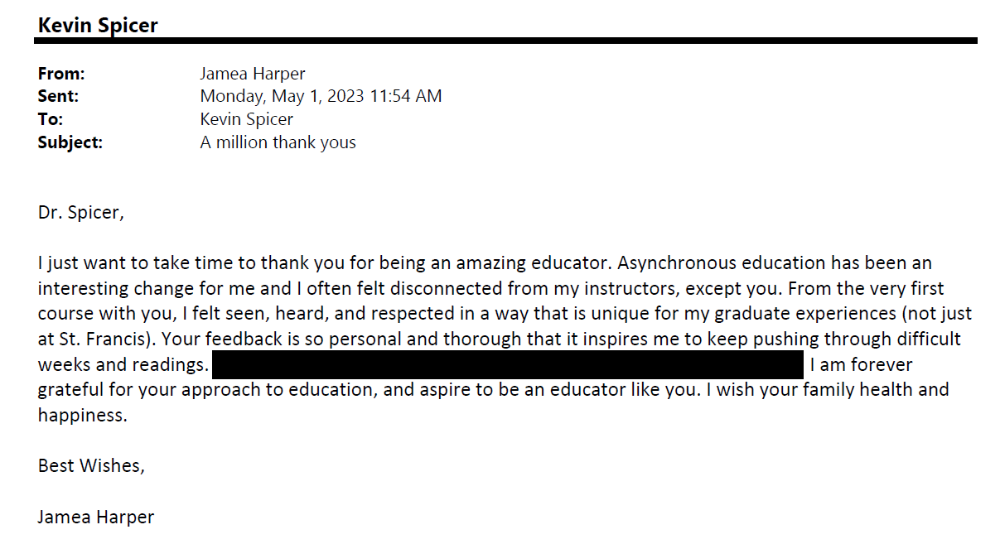
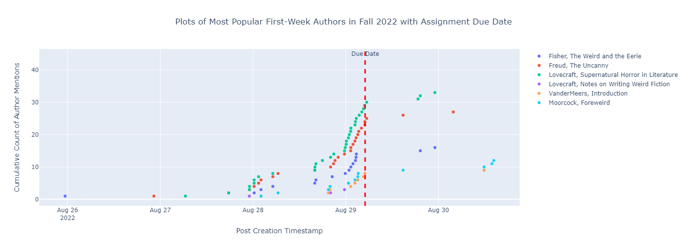

<!DOCTYPE html>
<html lang="en">
<head>
<meta charset="UTF-8" />
<meta name="viewport" content="width=device-width, initial-scale=1.0" />
<meta http-equiv="X-UA-Compatible" content="ie=edge" />
<title>
Promotion to Full Professor Reflection for Dr. Kevin Andrew Spicer, Fall
2023
</title>
<link rel="stylesheet" href="custom_css/tufte-with-nav-bar.css" />
<link rel="stylesheet" href="custom_css/zoomable_gallery.css" />
<script
src="https://kit.fontawesome.com/61eb3f8c24.js"
crossorigin="anonymous"
></script>
<script src="https://code.jquery.com/jquery-3.5.1.min.js"></script>
<script src="js/zoomed_images.js"></script>
<script src="js/zoomable_gallery.js"></script>
</head>

<body>

<nav>
<div class="hover-content">
<h2>Table of Contents</h2>
<ol start="0">
    <li><a href="#0-introductory-matters" class="active">Introductory Matters</a></li>
    <ol>
        <li class="special-indent"><a href="#0.1-initial-caveats" class="active">Initial Caveats</a></li>
        <li class="special-indent"><a href="#0.2-revisiting-my-tenure-portfolio's-future-goals-and-plans" class="active">Revisiting My Tenure Portfolio's Future Goals and Plans</a></li>
        <li class="special-indent"><a href="#0.3-one-final-disclaimer" class="active">One Final Disclaimer</a></li>
    </ol>
<li><a href="#1-teaching" class="active">Teaching</a></li>
    <ol>
        <li class="special-indent"><a href="#1.1-some-general-background-remarks-on-teaching-in-general" class="active">Some General Background Remarks on Teaching in General</a></li>
        <li class="special-indent"><a href="#1.2-student-focused-pedagogy-and-gen-ed-teaching" class="active">Student-Focused Pedagogy and Gen Ed Teaching</a></li>
        <li class="special-indent"><a href="#1.2.1-more-about-final-projects-in-weird-fiction" class="active">More About Final Projects in Weird Fiction</a></li>
        <li class="special-indent"><a href="#1.3-courses-for-english-majors" class="active">Courses for English Majors</a></li>
        <li class="special-indent"><a href="#1.4-student-focused-pedagogy-and-graduate-level-teaching" class="active">Student-Focused Pedagogy and Graduate Level Teaching</a></li>
        <li class="special-indent"><a href="#1.5-concluding-remarks-on-teaching-as-a-whole" class="active">Concluding Remarks on Teaching as a Whole</a></li>
    </ol>
<li><a href="#2-scholarship" class="active">Scholarship</a></li>
    <ol>
        <li class="special-indent"><a href="#2.1-potential-revision-work" class="active">Potential Revision Work</a></li>
        <li class="special-indent"><a href="#2.2-future-scholarly-endeavors" class="active">Future Scholarly Endeavors</a></li>
        <li class="special-indent"><a href="#2.2.1-ovid-and-lacan" class="active">Ovid and Lacan</a></li>
        <li class="special-indent"><a href="#2.2.2-changing-gears-fitzgerald" class="active">Changing Gears: Fitzgerald</a></li>
        <li class="special-indent"><a href="#2.3-concluding-remarks-on-scholarship" class="active">Concluding Remarks on Scholarship</a></li>
    </ol>
<li><a href="#3-service" class="active">Service</a></li>
    <ol>
        <li class="special-indent"><a href="#3.1-service-to-the-english-department" class="active">Service to the English Department</a></li>
        <li class="special-indent"><a href="#3.2-service-to-the-university" class="active">Service to the University</a></li>
    </ol>
<li><a href="#4-future-plans" class="active">Future Plans</a></li>
<li><a href="#5-miscellaneous-materials" class="active">Miscellaneous Materials</a>
    <ol>
        <li class="special-indent"><a href="#5.1-on-student-evaluations" class="active">On Student Evaluations</a></li>
        <li class="special-indent"><a href="#5.2-full-teaching-history" class="active">Full Teaching History</a></li>
        <li class="special-indent"><a href="#5.3-current-curriculum-vitae" class="active">Current <em>Curriculum Vitae</em></a></li>
    </ol>
</li>
<li><a href="#6-concluding-remarks" class="active">Concluding Remarks</a>
</li>
</ol>
</div>
<!--
<div>
<i class="fa-regular fa-circle-right fa-4x"></i>
</div>
-->
</nav>
<!--- Pull out the <header> tag when outputting to .pdf via pandoc: --->
<header>
<p class="title">Dr. Kevin Andrew Spicer's Full Professor Promotion <br />Reflection</p>
<p class="subtitle">August 2023</p>
</header>

<div class="watermark">DRAFT</div>
<div id="main-content">
<div id="toc-container"></div>

<h1 id="0-introductory-matters">0. Introductory Matters</h1>

<p>The goal of this reflection is to explicitly <strong>apply for promotion to Full Professor in the College of Arts and Sciences at the University of St. Francis.</strong> I spent the years 2012 through 2018 on the tenure-track as an Assistant Professor; my bid for tenure was accepted in that same 2018 and I have thus held the position of Associate Professor since then; I also chaired the Department of English and Foreign Languages between 2018 and 2022—taking a short break in the Fall of 2022 and Spring of 2023, I stepped back into that role in May of this year. This past Spring semester, I underwent the "Post-Tenure Review" process and composed a quite lengthy treatment of my time since receiving tenure. (The website address for that reflection is <a href="https://kspicer80.github.io/post_tenure_review_spring_2023/ptrr.html" target="_blank">here</a>; a .pdf copy of that document can be found <a href="https://kspicer80.github.io/post_tenure_review_spring_2023/ptrr.pdf" target="_blank">here</a>; Dean Elizabeth McDermott's letter/writeup of the committee's meeting for that review is provided <a href="supporting_materials/previous_portfolios/post_tenure_review_spring_2023/dean_mcdermott_post_tenure_review_writeup.pdf">here</a>.) According to Section 2.14.2 of the <em>USF Policy Manual</em>, item d., concerning promotion to the rank of Professor, the eligibility requirements are as follows: "A professor shall possess an appropriate earned terminal degree with ten years or more of full-time teaching experience at a four-year college, including four years of service as an associate professor. A professor shall demonstrate measurable contributions to the university, one's academic discipline and/or the community."<label for="sn-1" class="margin-toggle sidenote-number"></label><input type="checkbox" id="sn-1" class="margin-toggle" /><span id="1" class="sidenote"><em>USF Policy Manual</em>, available <a href="https://myusf.stfrancis.edu/portal/secure/content/15841">here</a>.</span> Given that I have been a full-time teacher here at USF since 2012, with more than four years of service as an Associate Professor, I am eligible to apply for promotion to Full Professor; all that leaves is an argument for why my time here does indeed "demonstrate measurable contributions to the university, one's academic discipline and/or the community." It is to this very task that I would like to turn now.</p>

<h2 id="0.1-initial-caveats">0.1 Initial Caveats</h2>

<p>Before jumping into my argument, I would like to put forward a caveat or two. Since I just underwent the "Post-Tenure" review process in the Spring of this year, a good deal of material and reflection on my part has already been completed. I composed an extensive and quite complete narrative concerning my time since being granted tenure in 2018. I will hopefully manage to attempt not to mechanically reproduce all of the work there; instead, I would like to take that product as a kind of starting point and grounding foundation to then proffer something new here in this document. That said, I will no doubt have frequent recourse to this prior work—as I do think that it might possibly provide an even better treatment of certain components (my teaching, especially) of my time as an Associate Professor—and will signal that as clearly as possible when necessary.</p>

<h3 id="0.2-revisiting-my-tenure-portfolio's-future-goals-and-plans">0.2 Revisiting My Tenure Portfolio's Future Goals and Plans</h3>

<p>In my Post-Tenure Review work, I briefly had recourse to the goals and plans I set forward in my original portfolio for Tenure.<label for="sn-2" class="margin-toggle sidenote-number"></label><input type="checkbox" id="sn-2" class="margin-toggle" /><span id="2" class="sidenote">See Section 4 of my <a href="https://kspicer80.github.io/post_tenure_review_spring_2023/ptrr.html#looking-back-at-the-future-plans-set-forth-in-my-portfolio-for-tenure-2018-and-progress-on-said-goals" target="_blank">Post-Tenure Review Reflection,</a> pp. 133-34. My portfolio for Tenure from 2018 can be accessed <a href="https://docs.google.com/document/d/1k55zrJZOI65w0IAZs7UfqUcm_IR__e6W2O5oTAV715U/edit?usp=sharing">here</a>.</span> I did not spend a great deal of time revisiting and rethinking those original plans in the Post-Tenure Review Reflection, but I think it might be nice to start there in this request for promotion.</p>

<p>In my application for tenure, I proposed that my years after earning tenure should put a focus on scholarship slightly above my service responsibilities. That said, the majority of that section in my portfolio actually focused on a number of projects that fall under the rubric of service. Those four items were:</p>

<ol class="initial-section-numbered-list">
<li>The creation of an Interdisciplinary Humanities Institute at USF.</li>
<li>A proposal for a potential "Great Books" program as a potential way to re-envision the old "Core"/Gen Ed curricula.</li>
<li>Thinking about the potential creation of a BA degree in Philosophy.</li>
<li>The creation of an MA degree in the Department of English.</li>
</ol>

<p> As I noted in my Post-Tenure Review Reflection, none of these plans "really [came] to fruition." We do not have any kind of Humanities Institute here at USF (although, I wonder if some of the conversations Provost Roth and Dean McDermott have had recently about a plan to restructure the College of Arts and Sciences might benefit from re-raising this idea); many will say that Gen Ed and the "Foundations" programs are still in great need of rethinking and re(en)visioning, now that the group working on the "Pathways" program was unsuccessful in its grant proposal to receive funding from the NEH that they applied for; USF is also still a liberal arts institution without the possibility of earning a BA in Philosophy; USF also has very few MA programs in CAS and the English Department is still lacking an MA degree program. In the previously mentioned Post-Tenure Review Reflection, I did wonder if it was "all bad" to say that none of these aspirations actually panned out. I suppose that evaluation is in the eye of the beholder. I should highlight, however, that I did mention wanting to work on my scholarly record after tenure—and I am quite pleased to say that that goal strikes me as having been well-achieved.<label for="sn-3" class="margin-toggle sidenote-number"></label><input type="checkbox" id="sn-3" class="margin-toggle"/><span id="3" class="sidenote">For more information on this, please see Section 2 of my <a href="https://kspicer80.github.io/post_tenure_review_spring_2023/ptrr.html#scholarship" target="_blank">Post-Tenure Review Reflection.</a></span> However, in terms of these Service endeavors, things, clearly, did not quite work out the way I had hoped all those years ago. Of course, if I'm being as fair to myself as possible, one could make a case that item 4. is one that—although not fully completed—is one that is still alive and "on the table." Although we do not have a fully-fledged MA program for English, we do have an incredibly robust series of six graduate-level courses that are currently offered to working secondary education professionals in order to get them credentialed to teach "Dual-Credit" courses in English Composition in the high schools.<label for="sn-4" class="margin-toggle sidenote-number"></label><input type="checkbox" id="sn-4" class="margin-toggle"><span id="4" class="sidenote">For a little bit of information on this whole process, please see <a href="https://kspicer80.github.io/post_tenure_review_spring_2023/ptrr.html#service"target="_blank" >ibid.,</a> pages 131-32.</span> The creation of these (now quite successful and incredibly well-received) courses was a substantial effort on the part of my colleagues and I in the English Department. We designed six brand-new courses to help meet a need in the surrounding high school community (all thanks to registering this need go to Dean John Gambro and Missie Rolinitis over in the College of Education and REAL Academy, respectively). The schedule now has us running two courses per semester (with one on the books for the summer semesters, at this point in time) and we have seen some rather nice enrollment numbers:</p>


<p>This plot here shows all the combined numbers for each pair of courses offered each semester. A graph showing all of the enrollments by individual course number can be found <a href="img/grad_courses/grad_course_enrollments_by_course.png" target="_blank">here</a>. (Also, the <a href="https://www.python.org/" target="_blank">Python</a> script used to generate this plot is available at the following <a href="code/grad_courses/grad_course_enrollments_script.py">link</a>.) I myself have taught almost all of these courses—five of six, to be precise—and the affirmations from students that have been sent my way are nothing short of downright wonderful. I have selected out only a very select list from all these wonderful notes these students (teachers!) have sent my way (all images below should be "zoomable"):</p>

<div class="gallery-container">
<div class="gallery-image left" onclick="zoomImage(this)">

</div>
<div class="gallery-image center" onclick="zoomImage(this)">

</div>
<div class="gallery-image right" onclick="zoomImage(this)">

</div>
</div>

<p> Over the past year or so we had an incredibly fantastic and stellar cohort of teachers from schools in the Glenbard area; they were with me for all five of those six courses I mentioned just before. I received such beautiful affirmations from them; they were incredibly profuse in their praise and appreciation of my pedagogy. In terms of more specifics, these teachers were very effusive regarding the kind of environment that I helped fashion for all of us to work within over the eight-weeks of each seminar. Anna Jakubka, a fantastic student and teacher noted how much she loved my use of feedback to student work: "... I really appreciate your constant feedback [<em>sic</em>] in this class; it's more than any other online course I've taken!"<label for="sn-5" class="margin-toggle sidenote-number"></label><input type="checkbox" id="sn-5" class="margin-toggle"/><span id="5"class="sidenote">Anna Jakubka, personal communication, July 27, 2022.</span> I would love to dive right straight into the pedagogical theorizations that make it so that comments like this are just "par for course" for me in my seminars, but, will leave that for the explicit "Teaching" section of this narrative. For the moment, all I really wanted to note here was that although a full MA program is still not in existence, at least half of the work towards such a goal is already complete and on the books, so it is definitely something that I and the English Department should kick the tires on here in the near future. (I plan to return to this matter in <a href="#3-service">Section 3</a>, <em>infra</em>.)</p>
<p>With regards to the other three items—the Humanities Institute, a reworking of the Gen Ed curriculum, and a Philosophy Major—the second one still seems doable. As many faculty know, the Provost has significant Gen Ed revision on her list of agenda items for the next couple of years. This is a matter and issue that I have no doubt given quite a lot of thought to over all of my years at USF. (I would like to put forwad some general thoughts about this concern, but am a little hesitant to do so here now as my perspective is probably a limited one: I am not fully aware of where the Gen Ed Committee's work on revising our current Gen Ed Outcomes is at the moment; my vision of all this is only at the level of the classroom. If folks that read this narrative think it would be useful for me to be a little bit involved with this, I would welcome such a suggestion and advice.) But as those goals written back then stand, the majority have not panned out. That said, in that very same document, I did write, as already mentioned, that I hoped my next few years would demonstrate my increasing my scholarly endeavors and productivity—and that is a goal that I did manage to achieve, an achievement that I am really quite proud of, in all honesty. Writing of all these things in my Post-Tenure Review from this past Spring Semester, I admitted:</p>

<blockquote>Is it all bad to say [that none of these Service goals have really come to fruition]—i.e. that none of the plans mentioned in the final section of my portfolio have worked out? No, not at all—and the fact ... that I managed to beef-up my publication record is not to be given short-shrift. We all know—I think—how difficult it is for us here at USF to focus on our scholarly production (that's not anything that everybody doesn't already know)—the fact that I was able to pull such a thing off while running a wonderful English Department is not to be brushed off too easily either.<label for="sn-6" class="margin-toggle sidenote-number"></label><input type="checkbox" id="sn-6" class="margin-toggle" /><span id="6" class="sidenote" >Again, taken from my <a
href="https://kspicer80.github.io/post_tenure_review_spring_2023/ptrr.html#looking-back-at-the-future-plans-set-forth-in-my-portfolio-for-tenure-2018-and-progress-on-said-goals" target="_blank">Post-Tenure Review</a>.</span>
</blockquote>

<p>So, having canvassed some of the plans I laid out in my last major Portfolio, I would like to move along now to the three major pillars for Promotion, namely, the realms of Teaching, Scholarship, and Service. But, before I do so, I have one more caveat I'd like to enter into the record here now.</p>

<h3 id="0.3-one-final-disclaimer">0.3 One Final Disclaimer</h3>

<p>In the meeting of my Post-Tenure Review Committee—a couple of my wonderful colleagues did mention the length of the <a href="https://kspicer80.github.io/post_tenure_review_spring_2023/ptrr.html" target="_blank">Review Reflection</a> I submitted to them. This was an understandable feeling, to be sure—that document was no doubt way too long. That said, I felt that if one really wanted to know and understand—and I mean this with every degree of sincerity I can muster—, if they <em>really wanted to understand</em> (and not in some overly-simple way) what I have been up to while serving as an Associate Professor here at USF, the length was an absolute requirement: I had to be that long and I don't think it could have been any shorter. Now, I am quite aware of the concern that my colleagues were trying to express in those remarks and comments. So, I will try to keep this document as short as I can, while still trying to be as thorough as I need to be. In terms of similar artifacts recently produced by some of my other colleagues—Dr. Kyung-Mee Choi in the Social Work Department and Dr. Erin Evans of the College of Education—I am aware that the word count here is quite significantly more than these two previous portfolios. However, that is in no way meant as a criticism: their portfolios were very helpful to me and I am deeply indebted to them for sharing that work with me. Still, as I say, the length of this document is going to be on the long end of the spectrum, I would imagine, although much shorter than my Post-Tenure Review Reflection I created this past Spring. With all of these caveats out of the way, I would like to forge into new territory here now.</p>

<h1 id="1-teaching">1. Teaching</h1>

<h2 id="1.1-some-general-background-remarks-on-teaching-in-general">1.1 Some General Background Remarks on Teaching in General</h2>
<p>In order to lay out the field here for my remarks about my Teaching since receiving Tenure, I would like to go back yet again to my Spring 2023 Post-Tenure Review narrative, where I wrote about "Looking Back at the Future Plans Set Forth in My Portfolio for Tenure (2018)":</p>

<blockquote>I should be brutally honest and confess here that my Tenure Portfolio is a document that I do not think I have ever looked at since being granted tenure. I have no doubt this is a terrifying thing to admit, but it's the truth. I would venture to guess that I can't be the only for whom this is true—a tenure portfolio (if it is successful) might quite ideally be something we create and then get to say, "Goodness, I'm glad I don't have to look at [that] thing for one more second." Is this the best [way] to do things? Probably not—but I'd be shocked if all of us who have been through the tenure process would deny that we have at least thought something eerily similar to what I confess here. That said, I have no doubt that one of the things that the "Post-Tenure" review process might encourage (though I notice that this is not elucidated or enumerated anywhere in the <em>Policy Manual</em>) is our taking out that old thing, dusting it off a bit, taking a gander at it and then saying: "Sheesh, things definitely didn't turn out the way I anticipated they would ..." As I say, there are good and bad ways to spin this—and thus with my glaring confession out of the way, I would like to dust this thing off and see if there's anything in it that has stood the test of time.<labelfor="sn-7" class="margin-toggle sidenote-number"></label><input type="checkbox" id="sn-7" class="margin-toggle" /><span id="7"class="sidenote"><a href="https://kspicer80.github.io/post_tenure_review_spring_2023/ptrr.html#looking-back-at-the-future-plans-set-forth-in-my-portfolio-for-tenure-2018-and-progress-on-said-goals" target="_blank">Ibid.</a></span></blockquote>

<p>I often think that when we look back on our work "when we were younger," it strikes me as somewhat healthy and preferable to take a gander back at the past and be slightly incredulous about the things that we wrote and thought at the time. If we do not quite do this, then it's possible that we haven't really changed all that much in the intervening years between then and now. I would thus like to begin by thinking about what's different in my teaching now as opposed to all those years ago before being granted tenure; I am, by and large, quite surprised at some of the things that I wrote in that original 2018 Self-Assessment. To be quite candid, this is not because my fundamental positions on things have radically or drastically changed. Indeed, looking back on that narrative, I am quite surprised and shocked by what I did not write or did not say. Of course, I think there are good reasons for this: at the time, I was not aware of how profound certain ways of thinking about my own pedagogy and philosophy of teaching would be somewhat significantly altered and intensified in many ways after 2018. It is hard—some will say it is impossible—to know in the moment what may eventually become a kind of "watershed" moment for us in our work, our lives, etc. Perhaps those watershed moments only begin to look like highly pivotal moments in retrospect; it would thus be a purely "retroactive" thing when we situate a past moment, a past time, a past event within a larger narrative thread. At the time, it was perhaps hardly pivotal for or to us, but only becomes so when we retroactively select it out as significant or profound. Now, admittedly, all this is a bit abstract, so I would like to try to make it all a little bit more concrete now.</p>

<p>So what is it that I was surprised—rereading my Tenure Portfolio—that I did not say at the time? If I try to think about all of my years teaching—both Pre- and Post-Tenure—I think that although my techniques and strategies and methodologies have not drastically changed, I do like to think that what happened over time was that I "settled into" a number of really foundational positions and philosophical perspectives regarding teaching as a whole. If I try to date this in some more specific way, I can recall a day back in the Fall of 2016 when I was walking over to the library to teach an upper-division course on Shakespeare (ENGL 372). I can remember, just as if it was yesterday, thinking that I was not incredibly enthused about some of the "first-day" housekeeping activities that we as teachers are all-too-familiar with and that read to us as functioning as a kind of "boilerplate" for our time in the classroom. Now, please do not get me wrong, I was incredibly excited to teach an author and figure that has been incredibly important to me over my time as a teacher and scholar. That said, worries about something as simple as the reading list were crammed into my head, full almost to the brim and ready to burst. I again, even today, recall thinking to myself, "I'm a bit tired of just unilaterally dictating the reading list to students; I don't think I want to do that anymore; perhaps there's another way we could do all of this." That day I had a kind of "bare bones" syllabus, of a sort, to pass out to students, but the actual plays and poems by Shakespeare we were going to read was a complete and total blank. That morning I gave students full-rein: they would decide what we read, how we engaged it, what we did with it—and I proposed very little, dictated nothing short of a suggestion or two about possible assignments and assessments that we might potentially consider. If I remember correctly, we had roughly fifteen or twenty students in that seminar—and by the end of the class period each one had selected out a poem or play they wanted us to all read together as a group. A few wanted to read some of Shakespeare's poetry—which is something that most students do not really know all that much about; they are usually often quite surprised to learn that Shakespeare was known—before roughly 1598 or so—as much more of a poet than a dramatist (which is usually the way most of us today think of him); surprised to hear that most other writers at the time were perhaps much more taken by <a href="https://www.poetryfoundation.org/poems/56962/venus-and-adonis-56d239f8f109c"target="_blank">"Venus and Adonis,"</a> <a href="http://shakespeare.mit.edu/Poetry/LoversComplaint.html" target="_blank">"A Lover's Complaint,"</a> and <a href="https://www.poetryfoundation.org/poems/45085/the-phoenix-and-the-turtle-56d2246f86c06" target="_blank">"The Phoenix and the Turtle,"</a> than by any of his early plays (the masterpieces known as <em>Romeo and Juliet</em>, <em>Hamlet</em>, <em>Macbeth</em>, <em>Othello</em>, and <em>Lear</em>, did not even exist) many of them really loved their fellow students' choices to go into the "margins," so to speak, of Shakespeare's corpus. When students spoke or wrote about this course later on—as many did and that I reproduce in my original Tenure Portfolio—they focused quite strongly on the class discussions, the kind of environment I wanted us to grow and cultivate together, and much, much more. But, for myself, looking back, I remember how profoundly significant for me it was to take that very first day of class and fill it not with myself and what I wanted and had planned, but instead, started with my students, began with what they were interested in learning more about, commenced the whole bizarre experience <em>with them</em>.<label for="sn-8"class="margin-toggle sidenote-number"></label><input type="checkbox" id="sn-8" class="margin-toggle" /><span id="8" class="sidenote">This pedagogical principle that I have called "the with" became even more vivid, legible, and powerful, once I met my most favorite student I've ever had as a teacher, MaKenzie Hope Munson, in the Fall of 2020. The vast majority of my Post-Tenure Review Reflection is concerned with her and the educational trajectory that she and I built together singularly and uniquely for her. I greatly encourage readers to hop on over to that <a href="https://kspicer80.github.io/post_tenure_review_spring_2023/ptrr.html" target="_blank">document</a> for a much more extensive treatment of this pedagogy than I will provide here in this narrative.</span> Again, did I know at the time that this very simple event—characterized by just a slight bit of distaste on my part for how a "first-day of class" is supposed to typically go—would become an absolutely foundational cornerstone of my teaching in the future? Absolutely not, but, looking back on it now, it strikes me as a truly pivotal and profound moment. But, in retrospect, it shocks me quite a bit to notice that I did not really talk at all about this day in my reflection on my teaching back in 2018.</p>

<h2 id="1.2-student-focused-pedagogy-and-gen-ed-teaching">1.2 Student-Focused Pedagogy and Gen Ed-Level Teaching <br /> (ENGL200: Intro to Weird Fiction)</h2>

<p>It would not be totally accurate to say that my pedagogy became more "student-focused" after being tenured; that would be correct to say, but it would not be the whole truth. There is little doubt that my Tenure narrative made very clear how student-focused my teaching always was—and the evidence for that was quite clear largely due to the fact that students were so adamant in their praise of this quality of my pedagogy. That said, I do find that this tendency to always be increasing the quantity of autonomy students had in my courses became stronger and stronger each and every semester. A very nice place to see that is in all the work that I did to develop a brand-new ENGL 200: Introduction to Literature course focused on a genre of writing called "Weird Fiction."<label for="sn-9" class="margin-toggle sidenote-number"></label><input type="checkbox" id="sn-9" class="margin-toggle"/><span id="9" class="sidenote">The Wikipedia <a href="https://en.wikipedia.org/wiki/Weird_fiction" target="_blank">entry</a> on this genre is not bad and is sufficient for my purposes here.</span> Prior to the first time I ran this course in the Fall of 2019, I had seemingly taught all kinds of different genres and types of literature in my ENGL 200 courses. I had taught sections devoted to Sci-Fi and Fantasy, straight-up courses focused on "classical/canonical" texts within the literary tradition, classes on <a href="https://en.wikipedia.org/wiki/Ecocriticism" target="_blank">"Green Literature,"</a><label for="sn-9a" class="margin-toggle sidenote-number"></label><input type="checkbox" id="sn-9a" class="margin-toggle"/><span id="9a" class="sidenote">The syllabus for this course can be viewed <a href="supporting_materials/1_teaching/past_syllabi/spring_2018/spicer_engl_201_intro_to_lit_green_lit_spring_2018.pdf" target="_blank">here</a>.</span> and even seminars zeroing-in solely on the work of J. R. R. Tolkien. Those courses were well-received and -liked by students, but I really hit on a winner when I switched over to doing this course on "Weird Fiction." Now, in order not to take all of the credit for how well this course has gone—and how much students seem to truly have adored it—I should say that there's little doubt its success had everything to do with the course content. Every single semester I have students who introduce themselves in the first week of class as lovers of mystery novels, detective fiction, horror fiction, and, quite often, true dyed-in-the-wool sci-fi/fantasy fans (either in book or TV/movie form); this genre of "weird fiction" was absolutely made for students like them and they know it quite directly and strongly. In and of itself, this is not surprising—weird fiction does often borrow from these other genres, often quite directly, intentionally, purposefully, and powerfully. I think what was much more curious to me was how students who either weren't huge readers (high school English classes seemed to have managed to ruin literary things for them ten times out of ten) or who were big readers in the past and weren't anymore or who just happened to like genres other than those of sci-fi, the detective novel, or whatever else they had been exposed to earlier in their reading lives, ended up absolutely loving all the strange, bizarre, and, yes, downright "weird" stories they found in Jeff and Ann VanderMeer's edited collection, <em>The Weird: A Compendium of Strange and Dark Stories</em><label for="sn-10" class="margin-toggle sidenote-number"></label><input type="checkbox" id="sn-10" class="margin-toggle"/><span id="10" class="sidenote">New York: Tom Doherty Associates Books, 2011.</span> Time after time after time, in their reflections on the course, students would highlight how enjoyable it was to read these stories—and also read things in a literature course that were so far from boring and unengaging as to not even be funny. When one hits on content that pulls in sometimes resistant and recalcitrant readers, one knows they need to dig in and think much more deeply about such a phenomenon.</p>

<p>Now, it's certainly a legitimate question here to ask if the success of a course like this is due solely to the course content. I would not want to deny that such an thing was a strong contributing factor to why students have—almost without fail—truly loved this class. However, I do not think that this needs to be the final word on things—and I would like to say that this focus on student autonomy I mentioned in the previous paragraphs was indeed fully on display here in this context; this was also something students were quite happy to tell me they also greatly liked about the course design as a whole. I should say, for starters, that if one looked with a fine-toothed comb at, say, <a href="supporting_materials/1_teaching/past_syllabi/fall_2019/engl_200E_syllabus.pdf" target="_blank">the very first version of the syllabus</a> for this course that I fashioned back in Fall of 2019 and compared it to <a href="supporting_materials/1_teaching/past_syllabi/spring_2023/spicer_engl_200_sections_d_e_f.pdf" target="_blank">the most recent one</a> done in Spring of 2023, there would be far more similarities than differences one would notice. Still, the fact that the overall structure of the course has undergone very little revision has everything to do with the fact that this first version was met with a great deal of positive reaction from students. Numerous students noted—this might seem such a banal and perhaps even all-too-simple, tiny little thing—that they loved a course where each week was laid out all on a single page. No modules to move through, no weeks wondering what might be on the agenda, no hunting endlessly for links to assignments, rubrics, and so forth.<label for="sn-11" class="margin-toggle sidenote-number"></label><input type="checkbox" id="sn-11" class="margin-toggle"/><span id="11" class="sidenote">A .pdf copy of that front page is accessible <a href="supporting_materials/1_teaching/course_materials/weird_fiction/canvas_syllabus_engl_200_main_page.pdf" target="_blank">here</a>.</span> Again, I was somewhat surprised to hear how significant something as simple as an "all in one place" main Canvas page could be for students (although, to be perfectly candid, this is something I 100% understand, but I am not certain that I knew how rhetorically powerful it could be for students from a larger "user design" perspective). I should also no0te that I have been told by students they always received   the course to be very well organized and easy to navigate, right from the very first day. Almost to the very last student, everyone found the navigation of the course shell to be quite simple, fluid, and often quite effortless.</p>

<p>Now, these two characteristics—course content and Canvas shell design—are significant, but, again, still not the real kicker for me when I think about why this course seems to have, from the very beginning, been incredibly successful for students. The real characteristic, for me, is this issue of student autonomy, which managed to drill all the way down to even the kinds of assignments and assessments the course asked students to complete and perform. Given that this is a Gen Ed course with students who were certainly not at the same level as the students taking that Shakespeare course I mentioned earlier, it made sense to give students a good deal of autonomy, but perhaps not as much as was given to English majors in an upper-division course. Charting a kind of middle path, I decided to lay out each weeks' worth of reading, but not to necessarily explicitly assign which stories students would have to read for any given individual week. Each week of the course had a number of stories from the anthology they were tasked with reading—usually between ten and twelve stories, parcelled out such that we could actually manage to potentially work our way through the entire anthology, which is admittedly big and thick and long. But if there were ten or twelve options each week, I gave no explicit/assigned readings. Students were given the freedom and liberty to speak about whichever stories for that week caught their eye. The only explicit requirement was that they pick three stories to highlight and discuss and analyze—while also replying to at least one of their fellow students' posts for that week. Writing about this in my Post-Tenure review, I noticed and noted a rather intriguing little phenomenon not so much about the number of stories discussed each week, but about the length of their posts (which, again, I did not explicitly specify: students had no word count and were encouraged to follow their gut and write as little or as much as they liked for any story in any given week):</p>

<blockquote>They choose which ones and then are asked to compose write-ups and analyses of their three picks, along with a response to a fellow student's post. (As is par for the course here, student autonomy and freedom is the absolute name of the game). I put no limits on student posts in terms of word counts. I have been really pleasantly surprised to notice that when I do not explicitly give students limits, they have something of a tendency to write and write and write. (Of course, I haven't really tried the opposite setup—i.e. explicitly giving students a word count limit to hit, but, of course, I would imagine many other faculty do this kind of thing: do students in their courses often write more than is explicitly required of them? If they did, I think I would find that to be rather surprising.)<label for="sn-12" class="margin-toggle sidenote-number"></label><input type="checkbox" id="sn-12" class="margin-toggle"/><span id="12" class="sidenote">Again, this comes from my <a href="https://kspicer80.github.io/post_tenure_review_spring_2023/ptrr.html#learning-how-to-code" target="_blank">Post-Tenure Review Reflection</a >, Section 2.2, p. 100 of the .pdf version. I should perhaps also mention that I can pull some explicit numbers here. Given that I've taught this course for multiple semesters, over multiple years, how often do students talk about more than the required number of authors in their posts? A little bit of coding and I can say that this kind of thing is certainly not the most common of phenomena—out of 2,353 posts, 23.5% percent of them talked about more than the required three stories in their main posts; in posts where students were responding to other students, more than three authors mentioned only occurred in 4.74% of those replies. (The Python code used to generate those numbers is available <a href="code/weird_fiction/counting_extra_text_mentions_in_wf.py">here</a>.)<span></blockquote>

<p>I found it really beneficial and fruitful to make this autonomy and liberty glaringly clear to students right at the very start of the semester. Thus, the very first week of the course—where we read some "theoretical" treatments of the weird fiction genre (Freud, psychoanalysis, Mark Fisher's book on <em>The Weird the Eerie</em>,<label for="sn-13" class="margin-toggle sidenote-number"></label><input type="checkbox" id="sn-13" class="margin-toggle"/><span id="13" class="sidenote">New York: Repeater Books, 2017.</span> some of the remarks of H. P. Lovecraft <label for="sn-14" class="margin-toggle sidenote-number"></label><input type="checkbox" id="sn-14" class="margin-toggle"/><span id="14" class="sidenote">Again, the Wikipedia <a href="https://en.wikipedia.org/wiki/H._P._Lovecraft" target="_blank">entry</a> on this foundational pioneer of the entire genre is not too shabby.</span> etc.) in the hopes that it could provide us with some coordinates for reading the texts in the anthology—has a rather in-depth (and perhaps too long-winded) discussion board prompt:</p>

<div class="pdf-container">
<embed src="supporting_materials/1_teaching/course_materials/weird_fiction/week_1_discussion_board_assignment.pdf#toolbar=0" width="800" height="1000" type="application/pdf"/>
</div>

<p>This prompt is admittedly a bit on the long side, but it lays things out quite clearly: students get to pick their reading for that week—either the Freud, the Tyson on psychoanalytic readings of literature, the Lovecraft, or the Fisher—and write about whatever jumped out at them from their chosen texts. Obviously, students go wherever the spirit takes them (many go to Freud either because they happen to be psychology students or because he is something of a "household name," in a certain way and for certain people). Actually, one can be very precise about this: the majority of students over all the years since I started running this course have slid toward Lovecraft. Combining every single student post in the ten times I have run the course, we get the following explicit counts of the authors:</p>


<p>Freud comes in a nice second place here, which is quite nice given that his text is probably the most difficult of all the theoretical texts on offer for this week. But, clearly, students do not shy away from this difficulty, but have a tendency to just leap right in. (The data the above screenshot shows was pulled down from a <a href="https://www.postgresql.org/" target="_blank">PostgresSQL</a> <a href="https://en.wikipedia.org/wiki/PostgreSQL" target="_blank"> [a relational database management system</a> using the industry-standard <a href="https://en.wikipedia.org/wiki/SQL" target="_blank">Structured Query Language [SQL]</a>, via an open-source "PostgreSQL" client known as <a href="https://github.com/paxa/postbird" target="_blank">"Postbird"</a>]. I created this database to keep track not only of all of my students' discussion posts, but also to make it easier to visualize which authors were being mentioned. I talk quite a bit in my Post-Tenure Review about my adventure of learning how to code—for those interested they can leap over to <a href="https://kspicer80.github.io/post_tenure_review_spring_2023/ptrr.html#learning-how-to-code">Section 2.2.</a>.) Actually, I should say that we can visualize things even more clearly with all this student work and look at the breakdown of author mentions for all ten sections of the course:</p>


<p>Having all of the data available in one single database is so profoundly helpful in generating this kind of data: being able to pull whatever data one might want all with a few lines of code is not to be underestimated. We could even have a look, for example, at the Fall 2022 semester and look at the mentions of the authors over time leading up to the due date for the "Week 1 Discussion Board" assignment:</p>



<p>If one wanted, we could not bother filtering the posts by the timestamp of each first week post and then look at the author mentions over the entirety of the semester. This would give one a sense of which authors were mentioned after the explicit reading of that author was assigned. In the following plot, one can see Lovecraft and other authors being mentioned long after the first week of the semester:</p>


<p>All the code utilized to generate these plots (using the really wonderful Python library called <a href="https://plotly.com/">"plotly"</a>) can be found in a <a href="https://jupyter.org/" target="_blank">Jupyter notebook</a> (this kind of file is the industry-standard for most folks working with Python in data analytics, data science, etc.) <a href="code/weird_fiction/plotly_first_week_visualizations.ipynb">here</a>. (Additionally, if one wanted to take a gander at some of these plots focusing just on Lovecraft in particular, please see <a href="img/weird_fiction/lovecraft_supernatural_scatter_plot_entire_semester.png" target="_blank">here</a> for a plot showing all mentions over the entire Fall 2022 semester and <a href="img/weird_fiction/lovecraft_supernatural_scatter_plot_zoomed_with_due_date.png" target="_blank">here</a> for a zoomed-in plot focusing just on Week 1).</p>


<!-- Just above I stuck the static image for the following plot—uncomment when pushing to GitHub repo
<iframe src="plots_in_html/all_theoretical_author_mentions_over_time.html" width="1350" height="1015"></iframe>
-->

<p>Being able to look at the information/data in this way, a couple of things immediately come to notice, even (and especially) for myself. For starters, the plots for the summer courses (<a href="supporting_materials/1_teaching/past_syllabi/summer_2020/engl_200Z2_syllabus.pdf">2020</a> and <a href="supporting_materials/1_teaching/past_syllabi/summer_2021/engl_200A_syllabus.pdf">2021</a>) look a bit off—this is due to the fact that they were eight-week courses and thus the normal sixteen-week reading schedules were greatly condensed, thus making it such that students had more options beyond the five authors mentioned in earlier plots. The second item to note is that I may need to rethink my claim that these could hopefully "provide us with some coordinates for reading the texts in the anthology" that we would analyze over the next fifteen weeks. If these theoretical texts did end up becoming somewhat "foundational" for the rest of the course, shouldn't one expect to see them being referred to often over the remainder of the class? Maybe, maybe not—it is possible that these texts did end up becoming "foundational" in some way, but that this "foundation" didn't become explicit in students' posts over the rest of the semester. Although it may be the case that students didn't often refer back to the these texts in their weekly discussion boards, many of them did leap back to these authors in their "Final Projects." Just looking very quickly at Final Projects that were "text-based"—i.e. in files uploaded to Canvas that had .docx, .txt, or .pdf file extensions—again, just a few lines of code can get us some raw counts (the script for this aspect is available <a href="code/weird_fiction/count_first_week_authors_in_final_projects.py">here</a>):</p>


<p>These counts do not include Projects that weren't of a largely "textual" nature (I will have much more to say about this in just a moment, in fact), but we can clearly see that these first-week authors did not just drop completely out of students' minds, far from it. Wanting to forestall the possibility of readers losing the point/thread here, I just want to reiterate my overall claim that the key takeaway point here is not to be lost: student freedom, autonomy, and choice are the name of the game here—a game that I have found students really and truly love and enjoy possessing and playing.</p>

<p>Before I jump back to this issue of "Final Projects" more specifically, I want to engage a potential rejoinder: Is it a problem, one might wonder, that the learning community here might end up becoming somewhat fragmented simply because it is not the case that all of the students will have read the same stories and, thus, won't really be working from the exact same knowledge base? I do not quite think so. It's highly debateable, even in a "standard" classroom setting (whatever that might mean), that all students end up possessing this somewhat mythical, to my mind, "<em>same</em> knowledge base." We all know no two students come to us with pretty much "the same" anything—their lives, their past academic/educational experiences, are all radically unique and singular. Why would one assume that even if we teachers tried to shove the exact same "content" into their brains that they would end up all having the "same" knowledge base? We know this is probably a quite unlikely scenario. I find, looking back over student posts, that more often than not this fact that not everyone reads the exact same stories was quite frequently spoken to by students, especially in their responses to other students' posts. Time out of mind I read one student responding to another with something that started like this: "Hello, James, I didn't read this story you mention here, but it sounds like a truly great read. I will definitely have to go back and read it ..." More often than not, students would read others' posts to get a sense of the stories that they didn't read themselves, but would go on to then read them based on the analyses from other students. This definitely gives the learning environment/community a "crowd-sourcing" kind of feel, where students often gravitate to stories that their fellow classmates got really hooked on and excited about. For some reason that I just cannot quite explain, the fact that students could themselves form other communities around a specific text they chose was a really key point for them; admittedly, one might say that such a thing is not precluded at all by a standard reading list/schedule where everyone reads the exact same stories, but, again, this added element is one that was quite legible to students and was an aspect of the course that they themselves noticed quite often.</p>

<p>Is there any warrant to a worry that with so much freedom, there were negative ramifications of this student autonomy? Absolutely not. Giving students an increased freedom from and flexibility with course constraints and requirements paid off ten times out of ten. As already mentioned, students were given free reign to decide how they wanted to move through and engage with the course material and—this strikes me as quite significant—when during the week they completed the work. Each week the discussion board posts were due on Sunday night at 11:59. Utilizing the database of student information and data I referred to earlier, it is easy (as an example) to plot out when students got their assignments completed each week—and only a few lines of code make it so that we can visualize this information for all ten sections of this course I have taught (the Python code used to generate the following plot is available <a href="code/weird_fiction/plotting_student_posts_by_due_date.py" target="_blank">here</a>):</p>


<p>Giving students freedom clearly paid off greatly as the vast majority of students were on time with their assignments each week; not only that, the quality of their work was nothing short of absolutely wonderful. It seems hyperbolic to say this, but all students seem to love this course—and the work they produced was work that I myself loved just as much, to be sure.</p>

<p>(As a final tangential note, if readers are interested in which authors were the most often talked about (most popular) in each semester and year, just a few lines of code—once again—can quickly answer such a query:</p>


<p>Once more, the Python code used to create these subplots can be inspected <a href="code/weird_fiction/most_popular_authors.ipynb" target="_blank">here</a>.)</p>

<h3 id="1.2.1-more-about-final-projects-in-weird-fiction">1.2.1 More about "Final Projects" in Weird Fiction</h3>

<p> In my <a href="https://kspicer80.github.io/post_tenure_review_spring_2023/ptrr.html#connections-with-the-classroom"target="_blank">Post-Tenure Review Reflection</a>, I spoke somewhat briefly about all of the different kinds of "Final Projects" students have produced in this course. In that document, I did not really focus so much on the various project types, but used it largely to put into practice a good deal of the digital humanities knowledge I have gained over the last couple of years. I talked about the code utilized to pull data from Instructure's API in order to produce visualizations of the counts and also the wide range of different project types submitted by students. Updating those counts to include the Spring 2023 semester, I now have a plot that looks like this:<label for="sn-16" class="margin-toggle sidenote-number"></label ><input type="checkbox" id="sn-16" class="margin-toggle"/><spanid="16" class="sidenote">Code for this plot is, again, available <a href="code/weird_fiction/charting_weird_fiction_final_project_types.ipynb">here</a>.</span></p>


<p>This time around, I would like to not simply count the wide range of projects, but to showcase a few of them. As the previous graph makes clear, a great number of students take a perhaps somewhat "traditional" avenue of working up a kind of final "reflection" on the course as a whole. Still, there are a fair number of students that decide to be a bit more adventurous—this adventurousness takes many forms: many try their hand at writing their own "weird fiction" stories or poems or short screenplays; others (mostly coming from our wonderful DARA program led by Jeff Jaskowiak and Alby Odum) produce their own "musical soundtracks" to accompany their favorite stories; still others have dreamt up and completed projects I myself never would have ever even imagined. In addition to many of these creative projects, I also often have many students who come my way from the Art and Design program (run beautifully, as I'm sure we all know, by Paul Erschen and Chester Costello)—some are painters, others work in ceramics, and a few have worked in even more different kinds of media. The creativity of these students too has always struck me as absolutely wonderful:</p>

<figure>
    <div class="zoomable-gallery">
    <div class="img-w">
    
    <div class="caption">Caitlin Ratajczak's "Shoes" Project (Spring 2023)</div>
    </div>
    <div class="img-w">
    
    <div class="caption">Jasmine Raheem's Painting (Spring 2023)</div>
    </div>
    <div class="img-w">
    
    <div class="caption">Riley Harper's Installation for William Sansom's "The Long Sheet" (Fall 2019)</div>
    </div>
    <div class="img-w">
    
    <div class="caption">Riley Harper's Bruno Schulz Painting" (Fall 2019)</div>
    </div>
    <div class="img-w">
    
    <div class="caption">Arely Sanchez "Telenaporta" Painting (Fall 2019)</div>
    </div>
    <div class="img-w">
    
    <div class="caption">Samreen Mushtaheed's Painting (Fall 2020)</div>
    </div>
    <div class="img-w">
    
    <div class="caption">Shelbi Walsh's Painting (Fall 2020)</div>
    </div>
    <div class="img-w">
    
    <div class="caption">Garrelts Peyton Collage (Fall 2021)</div>
    </div>
    <div class="img-w">
    
    <div class="caption">Calie Banting's Painting (Fall 2020)</div>
    </div>
    <div class="img-w">
    
    <div class="caption">Tara Tindall's Painting (Fall 2021)</div>
    </div>
    <div class="img-w">
    
    <div class="caption">Lisette Perez's Painting (Spring 2022)</div>
    </div>
    <div class="img-w">
    
    <div class="caption">Vetona Sarpong Photo Collage (Spring 2023)</div>
    </div>
    </div>
    <figcaption>Zoomable Image Gallery of Weird Fiction Art Students' Final Projects</figcaption>
</figure>

<p>The above gallery of work is just a small smattering of a great deal of really fantastically wonderful aesthetic work produced by my/our USF students (and it obviously does not include all of the work that has been done in other media: audio, podcasts, audio essays, creative poetry, compositions of their own "weird fiction" stories, and so much more). On a strictly philosophical level, I take as a guiding mantra that difference, multiplicity, heterogeneity, are all to be constantly not simply encouraged, but strongly, strongly affirmed at every possible moment.<label for="sn-17" class="margin-toggle sidenote-number"></label><input type="checkbox" id="sn-17" class="margin-toggle" /><span id="17" class="sidenote">I speak about this quite a bit in the sections devoted to MaKenzie in my <a href="https://kspicer80.github.io/post_tenure_review_spring_2023/ptrr.html#working-with-my-greatest-and-most-favorite-student-in-my-entire-career-as-a-teacherscholar-makenzie-hope-munson-23" target="_blank">Post-Tenure Review Reflection</a>.</span> This especially goes for student work: the more bizarre, the more variegated, the more heterogeneous the final products are the better. Of course, what is even better than this is how much students have enjoyed doing this kind of work. I directly, intentionally, and actively encourage students to take the content and material in this Gen Ed course and spin it towards the arenas they feel most at home in: DARA students love making music, so they should follow that desire and get the content to articulate with their home areas of study, joy, and expertise; Art students want to make art, they should feel more than free to do just that in my course.</p>

<p>In the previous sentence I chose the verb "articulate" very carefully and with great intentionality. I want this word "articulation" to do an exorbitant amount of pedagogical and philosophical work. All of us in higher education—as those of us who have engaged in any conversation about "assessment" in general—know how prevalent and widespread discourse about "alignment" is when it comes to what we do in our classrooms with students and how that all gets cashed out at the level of "learning outcomes." Even back in 2018 when I first ventured away from my standard <em>modus operandi</em> in the Shakespeare course I mentioned earlier, I had already started to become more and more allergic to this language of alignment. My experiences teaching and training and molding MaKenzie into an absolute intellectual force of nature just put the final nail in the coffin for my thinking about alignment: such a metaphor became incredibly bankrupt for me. I am not at all clear exactly what the "intended meaning" of the "alignment" metaphor is (I'm not sure what the metaphor's <a href="https://www.britannica.com/art/tenor-literature" target="_blank">"tenor"</a> is, as the literary critics say) and I am definitely not sure I know what most people take this tenor to be, but it became clear to me that if our goal as teachers was to get everyone "aligned," then I am really not sure why such a thing should be the ultimate goal nor why it should be accorded the privilege that it seems to have in so many different communities within the educational field. If the goal is to "get everyone in line," then there is a part of me (the snarky part, to be sure) that wants to be a little brutal and ask, "Is this a vision of education as some kind of glorified version of 'teaching as standing in line at the DMV?' " I'm sure we could all agree that such a cliched experience as having to go to the DMV is often one we wouldn't honestly wish on our worst enemies. Is this the best way for us to think about teaching and learning—as some kind of "standing in line?" As I say, if it is, I'm not sure how excited I am to jump headfirst into that. What exactly do we do once we get in line ... well, we just stand there and how much fun is that? Does this rhetoric of "alignment" not have encrypted within it a still way too passive conception of both student and teacher? I think so—and with quite a high degree of certainty, I should confess. But if "alignment" is too passive, then what would be a better word, a better rhetoric, a better discourse? What we need is something far less passive and static, we need something that describes things and people that <em>move</em>: this idea of taking multiple things, ideas, concepts, students, teachers, etc. and getting them <em>to articulate with one another</em> would seem to be infinitely, infinitely, infinitely preferable. We want a vision of learning that would be one shared with the way folks in the sciences talk about how joints <em>articulate</em> with other components of the body. This articulation, obviously, is in the service of movement: articulations allow one not to simply end up standing still (how boring!), but <em>to move</em>.<label for="sn-18" class="margin-toggle sidenote-number"></label><input type="checkbox" id="sn-18" class="margin-toggle"/><span id="18" class="sidenote">Of course, one might say that this word is also preferable over something like "alignment" because the noun form also might encapsulate the best sense of what "alignment" ought to mean. As the <a href="https://www.oed.com/view/Entry/11189?rskey=YUgQZO&result=1&isAdvanced=false#eid" target="_blank"><em>OED</em></a> notes—in definition 2. of this word: "Of hearing, thought, intelligence, etc.: distinct, clear; indicating clear understanding"—to articulate something is perhaps to get "aligned" in some way that is consistent with this definition. So, by this argument, "articulation" would give us the best of what "alignment" has to offer and, I would suggest, much, much, much more.</span></p>

<p>I should say that I have a seemingly infinite quantity of more things I would like to say about my preference for the language and rhetoric of "articulation" over "alignment," but, given that I have no doubt already spilled way too much ink on this elsewhere, I am going to try to be a bit less long-winded and a bit more parsimonious here in this context. I think that it is pretty unobjectionable to say that all the work with MaKenzie is incredibly indicative of this pedagogical focus on dynamism and movement in our learning and it is undoubtedly the best place to see it in action.<label for="sn-19" class="margin-toggle sidenote-number"></label><input type="checkbox" id="sn-19" class="margin-toggle"/><span id="19" class="sidenote">In terms of a more general philosophical treatment of thinking itself as a kind of movement (done with MaKenzie), please see the remarks in Section 1.1.5 of my <a href="https://kspicer80.github.io/post_tenure_review_spring_2023/ptrr.html#engl497-senior-thesis" target="_blank">"Post-Tenure Review Reflection</a>.</span> The goal with her (and with William as well<label for="sn-20" class="margin-toggle sidenote-number"></label><input type="checkbox" id="sn-20" class="margin-toggle"/><span id="20" class="sidenote">I have not yet mentioned here in this reflection all of the wondeful work I have done with William D. Mastin, but all of <a href="https://kspicer80.github.io/post_tenure_review_spring_2023/ptrr.html#mathematics-literature-and-philosophy-with-william-d.-mastin-23" target="_blank">Section 1.2</a> of my "Post-Tenure Review Reflection is devoted to him and his educational growth and trajectory with me; most of <a href="#2-scholarship">Section 2</a> <em>infra</em> is dedicated to him as well.</span>) was never, ever to get her aligned ... frankly, with anything: the goal certainly wasn't to get "aligned" with me and my positions; the goal was never to get her "in line with me" and what I thought about the texts we were reading, thinking, talking, and writing about. As I wrote in my <a href="https://kspicer80.github.io/post_tenure_review_spring_2023/ptrr.html#further-theorizing-the-oedipal-detective-game">"Post-Tenure Review Reflection"</a>:</p>

<blockquote>I have never thought that part of my job of training MaKenzie was to get her to just—either too simply or too dogmatically—take up my positions wholesale. She never took up positions or sides of an argument simply because they were mine—and although we are very close in so many ways, she was never one to show any interest whatsoever in simply mechanically imitating me and my own philosophical/theoretical loyalties. I have always put her own intellectual autonomy first ...<label for="sn-20a" class="margin-toggle sidenote-number"></label><input type="checkbox" id="sn-20a" class="margin-toggle"/><span id="20a" class="sidenote">MaKenzie confirms this focus on autonomy in her <a href="supporting_materials/2_scholarship/work_with_makenzie/mhm_reflection.pdf" target="_blank">"Reflection" on her Senior Capstone</a>, where she talks about one of the independent studies we worked on together in Fall of 2022: "Lastly, the Gender & Sexuality course is one that holds a special place in my heart: this is one I designed almost entirely by myself. That isn’t to say that Spicer enforced a great deal of rigidity in my other courses – some might even say that his name and any term relating to a lack of autonomy should hardly be placed in such close proximity – but this course is where I pitched the entirety of the reading list and schedule" (p. 5). I hope it's clear what's significant here: " ... some might even say that his name and any term relating to a lack of autonomy should hardly be placed in such close proximity." I couldn't agree with that more even if I tried.</span></blockquote>

<p>Instead, we spent her entire undergraduate academic career <em>thinking together</em>, which meant we spent all of our time getting our thoughts to constantly <em>articulate with one another</em>.<label for="sn-21" class="margin-toggle sidenote-number"></label><input type="checkbox" id="sn-21" class="margin-toggle"/><span id="21" class="sidenote">In my <a href="https://kspicer80.github.io/post_tenure_review_spring_2023/ptrr.html" target="_blank">Spring 2023 Post-Tenure Review Reflection</a> and also in the <a href="https://drive.google.com/file/d/1qKKrUolSupObXSvE20Y_T3ginshGEpUE/view" target="_blank"></a>document</a> I composed chronicling all of the wonderful work I did with MaKenzie ("Reflections on MaKenzie Munson and Dr. Spicer's Co-Authored Essay on Lydia Millet's <em>A Children's Bible</em>—Supporting Materials for MaKenzie's Senior Thesis Capstone Requirement for the English Degree"), I spoke a great deal about the learning that happens <em>in the space between</em> teacher and student—as I theorized it there, what I constantly referred to as "the space of the between" is the space in which this thing called "articulation" happens and works itself out in the pedagogical context.</span> But, thinking here about the ground I've already covered here in this Reflection, it's clear that all I have said about the kinds of student projects that my "Weird Fiction" students have produced are also fantastically beautiful and wonderful examples and artifacts of this "articulation" philosophy in practice. Semester after semester after semester students have taken "my" course content and <em>articulated it with</em> their home areas of study. They took the freedom, liberty, and autonomy opened up my own explicit course design principles to make what they had learned in my course <em>move with</em> their own individual areas of passion, expertise, and skill. It also does not slip my notice that this very fact might be a significant way to show that the kind of pedagogy and mentorship I talk about so, so, so much (perhaps way too much) in my "Post-Tenure Review Reflection" about my two most favorite students (MaKenzie and William) is not just a one-off (or "two-off," in this case), but is, in fact, a kind of pedagogical philosophy that I have been able to enact and embody in my teaching of many, many, many students over the years, especially since receiving tenure when this philosophical/pedagogical position become much clearer to me.<label for="sn-22" class="margin-toggle sidenote-number"></label><input type="checkbox" id="sn-22" class="margin-toggle"/><span id="22" class="sidenote">Awareness of this concern strikes me as fully on display right at the start of Section 1.3 of my <a href="https://kspicer80.github.io/post_tenure_review_spring_2023/ptrr.html#concluding-remarks-on-teaching-as-a-whole" target="_blank">"Post-Tenure Review Reflection"</a>.</span> This pedagogy cannot be said to be reserved only for the select few (or select "two," in MaKenzie and William's cases)—it is an embodied and enacted philosophy that is extended to all. Admittedly, I spent <em>so much time</em> teaching, training, mentoring MaKenzie and William to not just acquire knowledge, but to get that knowledge to articulate with everything else they were thinking about; I taught, trained, and mentored them so that their thinking could <em>move</em>.</p>

<p>I think a similar thing can be said for my "Gen Ed" students in "Weird Fiction." Moreover, in all cases, what these students did was simple enough to describe: their thought, their learning, their <em>creativity</em> ... <em>moved</em>; it has truly been a sight to see for me, that's for sure. Of course, I can imagine another similar rejoinder that I mentioned earlier with regards to all the flexibility and freedom granted to students in how they moved through the course material: "But don't we need alignment—'standards'—that are universally applicable to all?" Again, my response would be similar: difference, heterogeneity, multiplicity are the goal here, not conformity and not standardization and alignment. Is it really a problem if the way one student moves, the way one student gets things to articulate with other things, is different from another student? Not for me—and I'm not sure why this would be a problem at all in the first place, if I'm being perfectly candid. I think the other big "buzzword" in our field that might be fruitfully invoked here is that of the Holy Grail called "differentiated learning," a perspective that can be defined as "the change of pace, level or type of teaching provided in response to the needs, learning styles or interests of individual students."<label for="sn-23" class="margin-toggle sidenote-number"></label><input type="checkbox" id="sn-23" class="margin-toggle"/><span id="23" class="sidenote">See Eurydice-Maria Kanellopoulou and Maria Darra, <a href="https://files.eric.ed.gov/fulltext/EJ1341326.pdf" target="_blank">"Pedagogical Differentiation in Primary Education: Conceptual Determinants and Definitions,"</a> <em>International Education Studies</em> Vol. 15, No. 2 (2022): 138-148; p. 138, where they cite this definition first given by Diane Heacox, <em>Differentiating Instruction in the Regular Classroom: How to Reach and Teach All Learners</em>, (Minneapolis, MN: Free spirit Publishing, 2014), p. 5.</span> I have always been slightly confused by how precisely one might get this goal of "differentiated learning" to work with a pedagogy that leans too strongly on this rhetoric of alignment. They strike me as very difficult to get to work in any logically consistent way together. If "outcomes language" is meant to be standardized/universalized, then how exactly does that work with this ideal of constant differentiation? If we are to treat every student as what they are—infinitely and absolutely unique and singular—then the language of strict outcomes might need to be either reworked immensely or (even better, in my opinion) jettisoned entirely.<label for="sn-24" class="margin-toggle sidenote-number"></label><input type="checkbox" id="sn-24" class="margin-toggle"/><span id="24" class="sidenote">Again, I do not want to unnecessarily belabor the point, but my position here is still identical with the one given in my <a href="https://kspicer80.github.io/post_tenure_review_spring_2023/ptrr.html#early-days" target="_blank">"Post-Tenure Review Reflection"</a> (Section 1.2.1) when I spoke of my teaching of William: "This wanting to treat each and every student according to their own singular uniqueness was not lost on William—no two students are the same and our relations to them, therefore, cannot be identical either."</span> I have preferred to largely just jettison this "alignment" language—and I am quite confident that the results have been quite encouraging.</p>

<h2 id="1.3-courses-for-english-majors">1.3 Teaching Upper-Division Courses for English Majors</h2>

<p>This philosophy of differentiation is also fully on display as well in my courses for English majors. As folks outside of the Department (and College of Education, too, I would say) may not know, a great many of our English majors are <a href="https://stfrancis-public.courseleaf.com/undergraduate/undergraduate-programs/english-language-arts-secondary-education-professional-educator-licensure/">Secondary Education majors</a> as well. We in the Department thus teach and train sizeable numbers of our majors to pursue careers in a high school setting. This is a quite unique kind of audience—quite different from our "straight-up" English and Writing concentration students. In their cases, this issue of "differentiation" means giving students all kinds of opportunities to get their coursework to <em>articulate with</em> some of their larger career goals and trajectories. In all of my courses, I give future teachers (although this is not unique to them, obviously—all students are invited and encouraged to do this "articulation work") free reign in the kinds of assessment that they would like to propose for their work in the courses. It is often the case that students quite enjoy producing work for my courses that they hope will eventually become useful to them when they step into their own classrooms. A really nice course to use in demonstration of this pedagogy put into practice is our ENGL291 course on Adolescent Literature, which is obviously a really key course for majors that are planning to ultimately teach adolescents. Many students have decided to draw up extensive lesson plans illustrating not only their mastery of course content for the class, but also help out with their implementation of this acquired knowledge in their own classrooms. A couple examples here can be easily adduced: see Rachel Webber's ('22) Lesson Plan Final Project for Lois Lowry's <em>The Giver</em> (Spring 2020) is <a href="supporting_materials/1_teaching/ud_english_majors_coursework/rachel_webber_teaching_lesson_plan.docx" target="_blank">here</a> and Samantha Kohrt's ('22) Lesson Plan/Reading Unit Final Project can be perused <a href="supporting_materials/1_teaching/ud_english_majors_coursework/samantha_kohrt_teaching_lesson_plan_on_reading_unit.docx" target="_blank">here</a>. In addition to such quite "practical-minded" projects, I have also had teachers compose standard "academic essays," with a great many of them focusing on the issue of book censorship, which probably won't surprise any of my readers. Texts for high schoolers and young people in general are so often lightning rods for questions about what material is and is not appropriate for them. This student work has also been quite stellar. Additionally, a good handful of students have worked on projects that would be helpful to them in their futures that do not officially end-up looking like lesson plans. A nice multimodal<label for="sn-24a" class="margin-toggle sidenote-number"></label><input type="checkbox" id="sn-24a" class="margin-toggle"/><span id="24a" class="sidenote">Wikipedia's <a href="https://en.wikipedia.org/wiki/Multimodality#Education" target="_blank">entry</a> on this is probably good enough here.</span> example of this comes from Hannah Bolden ('23) where she created a nice "Trifold Brochure" about many of the texts we read together as a group in Spring of 2020:</p>

<div class="pdf-container">
<embed src="supporting_materials/1_teaching/ud_english_majors_coursework/hannah_bolden_trifold_brochure.pdf#toolbar=0" width="800" height="1000" type="application/pdf"/>
</div>

<p>Although this "YA Lit" course might be perfectly suited for secondary education majors, I obviously always have non-secondary ed majors taking the class. Those students also get full autonomy to design their own Final Projects and assessments. On this front, I might mention that the writing concentration students who are hopeful to carve out a life for themselves as (creative) writers have utilized this freedom to craft their very own "YA Lit" artifacts. Mary Kate Hynek's ('22) work comes most readily to mind here, as she composed a piece entitled "Katsaridaphobia," a long story that was written in a "YA Lit" vein:</p>

<figure>

<figcaption>Screenshot of the first page of Mary Kate Hynek's "Katsaridaphobia"</figcaption>
</figure>

<p>There was even more creativity on display—although it's not exactly a "Final Project" or assignment/assessment—in my Spring 2020 session where students felt a very strong urge to talk about all of the texts they read in the semester by creating a kind of "awards ceremony" to rank the texts. I lobbied quite strongly and vociferously for students to choose any other title for the awards than the one they chose—but, ultimately, it came to no avail.<label for="sn-24b" class="margin-toggle sidenote-number"></label><input type="checkbox" id="sn-24b" class="margin-toggle"/><span id="24b" class="sidenote">A link to "The Spicy Awards" is <a href="https://forms.gle/f5QcAqqX5wBUKyam8" target="_blank">here</a> and a .pdf version can be viewed at this <a href="supporting_materials/1_teaching/ud_english_majors_coursework/the_spicy_awards_ya_lit_spring_2020.pdf" target="_blank">address</a>.</span> All seriousness aside, though, it was a cute little thing for students to do.</p>

<p>If one crunches some numbers with regards to how students are doing in my courses (measuring how well they're meeting our departmental outcomes), things look quite good and students are meeting said outcomes. Those outcomes are as follows:</p>


<p>Scores on these outcomes<label for="sn-24c" class="margin-toggle sidenote-number"></label><input type="checkbox" id="sn-24c" class="margin-toggle"/><span id="24c" class="sidenote">The rubric utilized for our "Senior Capstones" for students in English Literature and Secondary Education can be found <a href="supporting_materials/3_service/english_department_materials/current_senior_thesis_assessment_rubric.docx" target="_blank">here</a>; the rubric for the "Writing Portfolio" assignment required of all Writing concentration students is available <a href="supporting_materials/3_service/english_department_materials/current_writing_portfolio_rubric.docx" target="_blank">here</a>. (The work that went into designing the rubric for the Writing Portfolio is due entirely to Dr. Anna Ioanes and [now] Dean Beth McDermott).</span> for my courses look like this:</p>


<p>These average scores are quite good (3s are for those "Exceeding Expectations") and I am exorbitantly proud of our English majors for these performances, to say the very least.<label for="sn-24d" class="margin-toggle sidenote-number"></label><input type="checkbox" id="sn-24d" class="margin-toggle"/><span id="24d" class="sidenote">The Jupyter notebook and code (utilizing this time around the <a href="https://seaborn.pydata.org/" target="_blank">"seaborn"</a> graphing library within Python) used to create these plots, yet again, is <a href="code/ud_english_courses/upper_division_english_course_analysis.ipynb" target="_blank">here</a>.</span> I should also note here before drawing this section to a close that everything I have talked about above is not just something that's solely "in my head." Students are incredibly well-aware of these kinds of things that are of a largely "philosophical"/"theoretical" nature for me as a teacher. Not only have students like MaKenzie and William written so extensively and beautifully of my teaching and mentoring and molding of them as intellectuals of quite stellar stature, but students whom I have not mentored and trained as closely as those two mention how impactful not only my but my whole department's teaching has been for them.</p>

<p>Sarah Deffenbaugh ('23) recently graduated this past May with her BA in Secondary Education (and is slated to begin and complete one more year to get her Masters this upcoming Fall) and wrote in her "Exit Interview" about her time with us as an undergraduate.<label for="sn-24d" class="margin-toggle sidenote-number"></label><input type="checkbox" id="sn-24d" class="margin-toggle"/><span id="24d" class="sidenote">Sarah Deffenbaugh, "Exit Interview," by Kevin Andrew Spicer (June 14, 2023)—the full interview is available <a href="supporting_materials/1_teaching/ud_english_majors_coursework/exit_interviews/sarah_deffenbaugh_exit_interview_june_14_2023.docx">here</a>.</span> I would like to have readers just follow the link in the previous sidenote and read all of her responses in their entirety, but I will be satisfied with picking out just a few really germane moments and comments. For starters, the very first question is one that needs citing in full, without a doubt:</p>

<blockquote>As I think back on my classroom memories, the ones that stand out the most are obviously my English classes. From the first semester of college, I was absolutely terrified.  However, my English class helped ease my fears. I was in an upper level English class, "Playtime in London" with Professor Duys. The English students welcomed me into the tight-knit group and made me feel comfortable. Right away, I knew that this was a special major and a special group of people. I immediately fell in love with being an English student. Over the course of the years, I struggled with self-doubt when it came to my abilities as a writer and student, but Dr. Ioanes and Dr. Spicer both have reassured me and supported me.</blockquote>

<p>I cite this one in particular not because I am explicitly mentioned, but largely because my name shows up right alongside my colleagues, Drs. Duys and Ioanes.<label for="sn-24e" class="margin-toggle sidenote-number"></label><input type="checkbox" id="sn-24e" class="margin-toggle"/><span id="24e" class="sidenote">Full confession here, but I find that I also pull out this remark of Sarah's largely because I have (no doubt a perhaps some idiosyncratic thing about my personality) a seemingly constitutional inability to accept praise. And this is no doubt a problem given that my two most favorite students (Sarah can easily be included in this list of my "favorites," too, as can many, many more students I could mention) have written so much and sent way too much praise my way already (William does <a href="https://drive.google.com/file/d/1t69EB7v97sleK_XZ7DuBn5uh1ahSL_bL/view?usp=share_link" target="_blank">here</a> in his cover letter for graduate school and MaKenzie does so <a href="https://drive.google.com/file/d/1rDG0Du3ZogXBX97gbalfe7tdN1yh1DQz/view?usp=share_link" target="_blank">here</a> in her Senior Capstone Reflection, both of which I have spoken about unendingly in my <a href="https://kspicer80.github.io/post_tenure_review_spring_2023/ptrr.html" target="_blank">Post-Tenure Review Reflection</a>). I wrote <a href="https://kspicer80.github.io/post_tenure_review_spring_2023/ptrr.html#para_98">there</a> about how MaKenzie spent a good deal of our time together "tirelessly working to get me to accept" how impactful and life-changing our study was together. William has been attempting ever since we met to do something identical, as I <a href="https://kspicer80.github.io/post_tenure_review_spring_2023/ptrr.html#para_236" target="_blank">mention</a> also. I find, however, that what I wrote in <a href="https://kspicer80.github.io/post_tenure_review_spring_2023/ptrr.html#para_142" target="_blank">sidenote 93</a> of that document still accompanies me even now.</span> In terms of my focus here in this section, I would also like to highlight Sarah's response to the second question, which asks, "What kind of learning and thinker were you when you started out as a freshman at USF, and what kind of learner and thinker are you now?" Sarah writes:</p>

<blockquote>Freshman year, I was an ... institutionalized thinker. I didn't stray far from what was conventional or what I believed people wanted to hear. Throughout college, I have shifted more and allowed myself to consider other possibilities and perspectives. I suppose the freedom of college helped that shift, but it was also my professors, who challenged me to think beyond what I was comfortable with. My English professors encouraged me to break out of my usual mindsets and paths of thought. For example, when writing my thesis, Dr. Spicer brushed away my cautious and expected answer to the question of how to prevent teacher burnout. He encouraged me to utter the ideas that seemed "taboo" to freshman me. The English department created an environment in which I felt safe enough to challenge my own ideas and break boundaries.</blockquote>

<p>I find Sarah's self-assessment to be absolutely spot-on. She can see the change in herself over time and I can immediately confirm without hesitation that this change was real. I (and I have no doubt my fellow English Department faculty colleagues) saw this change in her over time as well. It was an absolutely spectacular and wonderful thing to be able to see and witness, although I think she might give me a bit too much credit <em>re</em> "brushing away" some of her cautiousness in her Senior Thesis paper. I know we went back and forth—"wrangled" always with good humor—about the fundamental argument she wanted to put forward in that Thesis. It is clear to me that she greatly benefited from those conversations—just as I did!</p>

<p>The last question I would like to spotlight here is Question 5 of her Exit Interview, a question that concerns "professional preparation," which I myself have talked about quite a bit already: "To what extent do you think your education at USF is preparing you for a career? In what field(s)? More specifically, how well do you think your English courses have prepared you for work in the 'real world'?  How? Or why not?" Sarah's response, once again, strikes me as correct and one-hundred percent true and accurate:</p>

<blockquote>A refreshing change from high school, my English assessments and final projects emphasized autonomy, choice, and creativity. This is preparing me for my future career as a teacher. I have learned what is effective with assessment and what is not. For example, standardized tests are not an effective way to assess students in English. I really appreciated how my English professors focused on giving us a choice as to what we want to explore for our finals and creativity in the medium to do so. I will definitely be implementing that in my teaching career: allowing students to express what they know in a way that is comfortable and achievable for them to do so.</blockquote>

<p>Here we see the key thread that I have been trying to excavate from all the seconds, minutes, and hours I have spent with my students both inside and outside the classroom. Freedom, autonomy, flexibility ... <em>differentiated learning</em>—these are the name of the game, pure and simple. I probably don't need to cite the following, but can't help myself; Sarah ultimately closes her Exit Interview thusly: "Thank you for everything. Dr. Spicer, Dr. Ioanes, Dr. McDermott, and Professor Duys: you will forever hold a special place in my heart. I love you all." What else is there that one might need to say after reading something like this? Sarah is going to be an absolutely fantastic teacher; I have no uncertainty about that whatsoever. Will this be due to the environment that the English Department faculty and fellow students helped to craft for her to live in during her undergraduate years? Sarah says, "Yes, absolutely!" and I am very inclined to agree with her totally.</p>

<p>What I find so fascinating now—looking back over the years since receiving Tenure—is that this thread was (and still is) incredibly legible to students. If I jump back a couple of years before Sarah's interview, I notice other students in their interviews saying the same thing over and over and over again. Here is Carolyn Lekousis ('20)—another one of our Secondary Ed English majors—answering that same second question about "What kind of thinker" she was when starting:</p>

<blockquote>Coming into USF, Carolyn was a very "textbook" learner, meaning that she saw coursework as a hurdle to jump through: read the textbook, then regurgitate information on the text. Her experiences at USF turned her into a collaborative learner. She devoted more energy to thinking about her own learning processes and recognized that there’s more than one way to do things. Her learning experiences in the English department "made [her] bloom" as a teacher. She wants to foster the same intellectual curiosity in her students. Carolyn particularly noted Dr. Spicer's classes, which created active learning through their unstructured discussion format and encouraged students to "live in the moment."<label for="sn-24f" class="margin-toggle sidenote-number"></label><input type="checkbox" id="sn-24f" class="margin-toggle"/><span id="24f" class="sidenote">Carolyn Lekousis, "Exit Interview," by Beth McDermott (June 10, 2020).</span></blockquote>
<p>Tynae Phillips ('18)—once more, yet another brilliant Secondary Ed English Major—had the following to say about the interview's third question concerning the impact faculty had on her:</p>

<blockquote>When I first got here, all the genres were all separate—really distinct from one another. I didn’t see the interweaving and evolution of genres. Story Circles and Dialogic especially changed that—I began to see how all the genres are in conversation with each other and how genres have evolved from one another. I am more open now as a reader, and now I am interested in a much wider range of texts: old, new, hard, comic, romantic, etc. Also, writing as I read, which I learned to do in Vin’s classes really helped me understand how a text could change and go in different ways. And open discussions in Spicer's classes brought out a range of different personal readings, and I learned how important that was to understanding how to read a text.<label for="sn-24g" class="margin-toggle sidenote-number"></label><input type="checkbox" id="sn-24g" class="margin-toggle"/><span id="24g" class="sidenote">Tynae Phillips, "Exit Interview," by Karen Duys (January 9, 2019).</span></blockquote>

<p>When asked about the major outcomes for the program and whether she felt like she had achieved/met them, Tynae said:</p>

<blockquote>Contexts—my whole experience here has been about recognizing different contexts—Spicer throws and curve ball and you have to be able to switch from one context to another, from a personal to a context that comes from high theory. That was enormously challenging and incredibly valuable. Critical traditions—with Vin, we went through all sorts of different types of critiques (feminist, historical, psychological, etc.) which gave me a sense of the different approaches that are possible for an individual text. Theoretical frameworks—my understanding of contexts and critical traditions are threaded through with theory.</blockquote>

<p>And one last time, regarding the outcome devoted to "Research":</p>

<blockquote>Information literacy—very comfortable using databases. In several classes, library staff came in and gave us tutorials, so it is easy for me to use the databases and intranet now. Source assessment—I'm able to identify biases, recognize hidden agendas, or realize when a critic is really looking for the truth. Theoretical framing—we did that a lot in Adolescent Lit! With Spicer, it was really mind-blowing. Once we read a book that no one really liked, but then he offered us a theoretical approach that totally changed the way we understood it. Critical theory with Vin helped me understand the theory behind the research out there, and what a true feminist reading is.</blockquote>

<p>This is really just barely scratching the surface, but I hope it is a nice sampling of how my teaching of English majors has gone every single semester since I've been here at USF. I also want to emphasize once more how significant student autonomy, student-focused work, and helping students to learn all of the different kinds of ways they might "think outside the box," as the tired old cliché goes, has been (and continues to be) for my pedagogy.</p>

<h2 id="1.4-student-focused-pedagogy-and-graduate-level-teaching">1.4 Student-Focused Pedagogy and Graduate-Level Teaching</h2>

<p>In the interests of transitioning here slightly, I would like to highlight and make very clear that all this is not simply the case solely at the undergraduate level—its success spans all levels of my Undergraduate teaching, both at the Gen Ed and "English Major" levels—but it has also managed to move quite wonderfully to my graduate-level teaching, which I would like to dig a little bit deeper into here in this section. I mentioned earlier in <a href="#0.1.1-initial-caveats">Section 0.1.1</a> that since receiving Tenure my Department has developed a slate of six graduate-level courses for current secondary education teachers, designing them to provide candidates with the credentials required to teach Dual-Credit Composition courses in their home schools. As mentioned in my <a href="https://kspicer80.github.io/post_tenure_review_spring_2023/ptrr.html#service-to-the-department-and-to-the-university">Post-Tenure Review Reflection</a>, this entire endeavor was truly a team effort on the part of Drs. Ioanes, McDermott, and myself. At this point,, I would like to talk a bit more about how these seminars have been implemented and taught, with special focus on how I tried to properly differentiate these courses for the audience in question, namely, students who are themselves full-time teachers with all kinds of other responsibilities.</p>

<p>Given the nature of the parameters for these courses—involving quite intense levels of reading in rhetorical and composition theory, all packed within eight-week modules—it was really significant that one struck a nice balance between the rigors of graduate-level learning and a high degree of faculty flexibility given that all of the students here were working full-time jobs. Thus, for starters, a clearly laid-out and well-designed reading schedule was needed (the following screenshot is for our ENGE/ENGM: Rhetorical Theory I: Classical Rhetoric course):</p>


<p>Along with a clear schedule, we leaned quite heavily on the format and course structure that REAL uses in all of their courses:<label for="sn-25" class="margin-toggle sidenote-number"></label><input type="checkbox" id="sn-25" class="margin-toggle"/><span id="25" class="sidenote">Copious and infinite thanks go to Missie Rolinitis over in REAL, who was a constant ally and supporter not only of me in all my course creation work here, but also for all my fellow faculty members. REAL already possessed a quite explicitly well-thought and structured course design workflow—we English folks needed to get into that structure and flow. I could never have asked for a better partner and there is little doubt that much of the success of these courses is due to Missie and her unflinching help and expertise in getting all of us English teachers feeling quite comfortable within the REAL structure and their perspective on curricular design. Missie and REAL more broadly gave us full academic autonomy (a thing not to be given short-shrift, for no doubt obvious reasons) and, again, as I say, I could not have asked for anything more.</span></p>


<p>What is not quite explicitly shown in the image above is the nitty-gritty of the actual assignments for this first ENGE/ENGM course.</p>


<p>The screenshot above shows the very first week's post for the ENGE/ENGM 510: Rhetorical Theory I: Classical Rhetoric course; as one can see, it is quite long-winded (as is usual for me, I suppose) for an initial discussion board prompt, but students not only loved the depth and comprehensiveness of the prompt, they also enjoyed the freedom and flexibility present within it as well. Not every week's discussion board assignment looked quite this long and involved; students were fond of some weeks where the prompt for the reading was something as simple as "Reader's Choice this week, everyone! Take us to wherever you'd like in the texts on the reading agenda."</p>

<p>Designing good discussion board prompts for fully online/asynchronous courses are a necessary component of good classes, but it is far from sufficient. In addition to this, faculty feedback is also of the utmost importance. Looking back on student e-mails sent my way after completing these courses, I notice that student after student mentions how much they appreciated the feedback I gave them on their discussion board posts. Anna Jakubkha mentions this in her e-mail to me that I cited earlier in <a href="#0.1.1-initial-caveats">Section 0.1.1</a> <em>supra</em>: "... I really appreciate your constant feedback [<em>sic</em>] in this class; it's more than any other online course I've taken";<label for="sn-26" class="margin-toggle sidenote-number"></label><input type="checkbox" id="sn-26" class="margin-toggle"/><span id="26" class="sidenote">Anna Jakubka, personal communication, July 27, 2022.</span> Jamea Harper also highlights this facet very strongly:</p>

<blockquote>I just want to take time to thank you for being an amazing educator. Asynchronous education has been an interesting change for me and I often felt disconnected from my instructors, except you. From the very first course with you, I felt seen, heard, and respected in a way that is unique for my graduate experiences (not just at St. Francis). Your feedback is so personal and thorough that it inspires me to keep pushing through difficult weeks and readings. ... . I am forever grateful for your approach to education, and aspire to be an educator like you. I wish your family health and happiness.<label for="sn-27" class="margin-toggle sidenote-number"></label><input type="checkbox" id="sn-27" class="margin-toggle"/><span id="27" class="sidenote">Jamea Harper, personal communication, May 2, 2023.</span></blockquote>

<p>Although it might not be necessary to do this—I am more than fine with just taking these student affirmations solely on their own—I would like to try to throw just a little bit of data behind these sentiments. If one looks at all the feedback I have given to students across the eight times I have taught one of these graduate-level courses since Spring of 2021, I have composed over 130,000 words across that entire span (the precise number is actually 132402).<label for="sn-28" class="margin-toggle sidenote-number"></label><input type="checkbox" id="sn-28" class="margin-toggle"/><span id="28" class="sidenote">The Python script used to calculate this number can be found <a href="code/grad_courses/faculty_word_counts_per_response.py" target="_blank">here</a>.</span> That's one long (perhaps too long) academic essay per eight-week course.<label for="sn-29" class="margin-toggle sidenote-number"></label><input type="checkbox" id="sn-29" class="margin-toggle"/><span id="29" class="sidenote">I am hesitant to say how this might compare to others; I haven't the slightest idea if this is much more (or much less) than my faculty peers. (I ponder a similar question to this in Section 2.2 of my <a href="https://kspicer80.github.io/post_tenure_review_spring_2023/ptrr.html#learning-how-to-code">Post-Tenure Review Reflection</a>, concerning the length of my ENGL200 students' discussion board posts each week, which, as noted already, do not have any word count limits set on them—I claimed there that students have a tendency to write quite long, nuanced, and extensive posts each and every week despite the fact that I put no limits or constraints on these in terms of post length.)</span> My sense is that it's possible this might be on the high side of the mean, if only because it would explain why it is that students like Anna and Jamea mention it in their e-mails thanking me for my pedagogy. It is true that my fully online courses contain quite a lot of feedback in terms of my responses to what students write each and every week at both the undergraduate and graduate levels. I should say that this is something that I can quantify and visualize. The following plot gives mean word counts of all my responses for each graduate-level course taught(along with the number of students in each section):</p>


<p>The counts for the first couple of semesters are quite low compared to the rest not simply because of the low number of enrolled students, but also because most of my responses didn't go through the LMS system at all, but directly through the e-mail to students. It's also simple enough to produce a scatter plot that shows the actual counts per response rather than the average:<label for="sn-29a" class="margin-toggle sidenote-number"></label><input type="checkbox" id="sn-29a" class="margin-toggle"/><span id="29a" class="sidenote">The Python script used to create both of these plots can be viewed <a href="code/grad_courses/faculty_word_counts_per_response.py" target="_blank">here</a>.</span></p>


<p>I will spare my readers any long cavalcade of examples of my responses to students here and will simply rely on the quantitative data; however, I would like to give a little insight into not so much "what" goes into the responses, but more the "how," which was also greatly enhanced by my learning how to code a number of years ago and that I talk about a lot in the previously mentioned Section 2.2 of my Post-Tenure Review Reflection.</p>

<p>As those familiar with Canvas are perhaps all too well-aware, the <a href="https://community.canvaslms.com/t5/Instructor-Guide/How-do-I-use-SpeedGrader/ta-p/757" target="_blank">"SpeedGrader"</a> interface can become quite cumbersome when one has to go through and respond to, say, forty or more students each week—and this is precisely because each student gets their own page with its own "Assignment Comments" box ... typing lengthy responses into this little box for a whole class of students is perhaps not inordinately, onerously cumbersome, but due to the way that the Canvas system is so heavily "compartmentalized" with its own modules, every student with their own comment boxes, etc., this can create a feeling of quite a bit of isolation and atomization. There are many more consequences and implications of this heavily compartmentalized structure and environment that does seem to make the curation of a fully-fledged "conversation" on a discussion board quite a bit more difficult than it perhaps needs to be if the system's design were slightly different and tweaked. Despite the fact that I am perhaps being slightly hypocritical here—I have not become so dissatisfied as to just chuck Canvas completely given the fact that such a thing is not exactly encouraged (and might even be explicitly prohibited by institutional parameters and constraints)—I think it goes without saying that the design of Canvas's discussion boards does not make it any easier on the user to curate and maintain a really interconnected discussion board that might mirror something like a "real conversation."</p>

<p>I should confess that I'm hedging my language here quite a bit—other people, like Robby Burns for example, hardly feel a similar compunction, writing in his blog post, <a href="https://www.robbyburns.com/blog/eliminating-canvas-stress-by-writing-content-in-markdown" target="_blank">"Eliminating Canvas Stress by Writing Content in Markdown,"</a> that "Canvas is littered with user-hostile behaviors." Actually, this metaphor of "compartmentalization" I mentioned just now can be read in Burns's post as well. As examples of such "user-hostile behavior," we get the following: "Each class is a separate container. All files, pages, and assignments are quarantined, requiring multi-step procedures for sharing between course. On top of this, the organizing tools are a mess. I am never 100 percent sure where to go. Even when I do, I have to wait for the internet to load each new thing I click on." Obviously, these problems with the system being structured around this fundamental "quarantining" of containers also make the fashioning of good discussion boards quite difficult, to say the very least. Or, I should say that they make it quite difficult for me as the one who wants to "moderate" the boards by constantly linking/tying-up many of the student responses. The interface is not too horrible—trying to be as charitable as one can here—for the student. Each post on the board can be responded to in ways that we're all used to when thinking about "threaded discussions." But if a student, for example, wants to respond to one particular response while also linking it to another totally different student's post, such functionality is impossible to achieve in any explicit way. Of course, they can do this in the body of the post itself by mentioning another post's author, but this "thread" is not explicit—it exists only implicitly. One can imagine how much more frustrating this can become when I, say, want to respond to a particular post but link to three or four or even five other student posts. (The only way I can think of getting this explicit linking to work within the Canvas structure is to, perhaps, create separate discussion board posts for each story, but then that probably just exacerbates the problem as each discussion board assignment will need to reside in its "container," as Burns puts it.) Of course, there is a native way to do something close to what I might ideally want by using the little box directly underneath the discussion prompt that reads: "Search entries or author"; one can then search for the specific user's post that they would like to point explicitly and directly to.</p>


<p>It used to be—at the moment in time when I compose this such a thing is no longer even possible—that you could get the direct "post id" of the post and this could be used in order to create a hyperlink that would go directly to that post (such might be a nice thing for those of us that rely so heavily on the discussion boards where any week's board might well have at least forty posts and replies and thus a way to not have to scroll endlessly when one wants to point at a post in a very direct way would be quite a welcome feature for this LMS), but, as I say, when one tries to grab the unique id of a post, the "entry" and it's accompanying id number show up in the address bar of the browser, but then slowly disappears after a few seconds. I don't wish to belabor the point here, but this strikes me as perhaps another very nice case of one of those "user-hostile" behaviors, especially, again, for those of us that really want to spend a great deal of time linking students' thoughts to other students' thoughts. It would be so wonderful if I could reply to Madeleine and then take a very short amount of time to get a direct hyperlink to not only John's post, but also with links to Emma's and Kristen's and ... so on. But, again, such a thing would be frighteningly cumbersome and would quickly become shockingly burdensome and arduous—using the LMS in its current state. (I should also admit that it's possible I've just missed the LMS's possession of this functionality somewhere in the official documentation, but if so it must be in a rather "out of the way place" as I can't seem to lay my hands on it.) One should never underestimate the fact that these systems can have significant consequences when it comes to how we interact with them—certain design structures do greatly influence how we move within these structures.</p>

<p>When I first started out doing this Weird Fiction fully online, I posted my responses to every student post up on the discussion board itself so that they could be read by everyone. I did what I could trying to weave the student posts into larger clusters, but after a while I became frustrated and transitioned to just responding to students from within the "SpeedGrader," where the comments for each student went back to only that student. Now I do a little bit of a mixture—on weeks when I don't mind bending over backwards to do something that should be really simple, I weave threads together up on the main board; when I'm not in such a mood, I'll go through the SpeedGrader, although not in a totally direct way, I should say. I haven't noticed that students themselves notice any real difference that this might cause for them; I haven't had students wonder about why I choose one method over the other, but I am sympathetic to the possibility that students early in the experiment actually greatly loved being able to respond directly to my interventions for everyone else to see rather than through the SpeedGrader interface which, again, is a route that is visible only to me and the individual student. But, again, I don't have good data on this either way—perhaps it's something to ask them about sometime in the future to see if it makes any real difference to them. I find that students love the feedback, they don't particularly seem to mind which route I take. In fact, in the graduate courses, I have always gone directly through the SpeedGrader and students like Anna and Jamea—when they talk about my "constant feedback"—are talking about feedback sent only through the SpeedGrader. So all this might be a bit of a wash, so to speak. Just a moment ago I talked about my use of the SpeedGrader, but not in a "normal way"—I'd like to describe my workflow for this as it is a procedure that seems to manage to avoid some of the "user-hostile" behaviors that Burns and I have mentioned so far.</p>

<p>Burns's blog post was really a huge impetus for me to fashion the following workflow—his post speaks largely of authoring pages and other materials for his Canvas course in <a href="https://www.markdownguide.org/" target="_blank">Markdown</a>—a plain text format that is pretty industry-standard within the computer science/computer programming world. Most official documentation for anything software-related was probably written in Markdown at some point, largely because it is such a simple format that can be easily converted into pretty much any other format one could possibly imagine.<label for="sn-30" class="margin-toggle sidenote-number"></label><input type="checkbox" id="sn-30" class="margin-toggle"/><span id="30" class="sidenote">My initial forays into writing purely in Markdown can be seen in one of my early <a href="https://kspicer80.github.io/posts/2021-12-27-playing-with-plain-text-and-css-templates_05/">blog posts</a>, which focuses briefly on converting the .md format utilizing the <a href="https://pandoc.org/" target="_blank">pandoc library</a>. I also have a <a href="https://kspicer80.github.io/post_tenure_review_spring_2023/how_to/how_i_made_this_thing.html" target="_blank">"How-To" guide</a> where I lay out the workflow that I used to take the original Markdown file of my Post-Tenure Reflection Review and get it into HTML and further stylized with CSS.</span> When I came across his post, I was also getting just a tiny bit fed up with the LMS and thus started looking for alternative ways of doing things. I thus hit on using Burns's idea of writing everything in Markdown or "plain text" (the work of <a href="https://programminghistorian.org/en/lessons/sustainable-authorship-in-plain-text-using-pandoc-and-markdown" target="_blank">Dennis Tenen</a> on the benefits of writing in "plain text" was also heavily influential on my thinking here<label for="sn-31" class="margin-toggle sidenote-number"></label><input type="checkbox" id="sn-31" class="margin-toggle"/><span id="31" class="sidenote">Feel free to see <a href="https://kspicer80.github.io/post_tenure_review_spring_2023/ptrr.html#para_250" target="_blank">Section 2.2</a> of my Post-Tenure Review Reflection for a little bit more on all of this too.</span>) and then writing some scripts to bulk upload all of my responses to all the students' posts for each week. So my process starts out with a very simple <a href="https://www.w3schools.com/js/js_json_intro.asp" target="_blank">.json file</a> that contains all of the student names, Canvas ID numbers, and then a spot for my comments (which get uploaded and posted in the "Assignment Comments" box in the SpeedGrader). Here is a tiny sample screenshot of what it typically looks like:</p>


<p>The .json file contains fields for all the necessary data to be uploaded to the Canvas API: student_id, canvas_course_id number, a field for "text_comments_to_upload," a "score" field, etc. Thus, rather than composing responses to individual students all from within their atomized, individualized, "quarantined" containers, I compose all my responses in one single file. With all of the data "all in one place," one just needs to write a little bit of code to automate uploading all of this data directly to Instructure's API such that each student's data goes right into their "Assignment Comments" box in the SpeedGrader.<label for="sn-32" class="margin-toggle sidenote-number"></label><input type="checkbox" id="sn-32" class="margin-toggle"/><span id="32" class="sidenote">For more information on this code, please feel free to hop over to my blog post, <a href="https://kspicer80.github.io/posts/2023-01-13-canvas-live-api-work/" target="_blank">"Interacting with the Canvas Live API"</a>, which looks pretty similar to my currently-used incarnation (not much has changed since that post was written).</span> Obviously, not having to type into each little "Assignment Comments" box twenty times (or—since I usually teach at least two ENGL200 sections per semester, sometimes three—forty or even sixty times) a week, it seems clear to me what a better workflow this is than doing all of this "manually." Of course, this still isn't terribly ideal, but it does make it somewhat easier for me to not only weave together threads made from student posts, but it's also nice to have everything in one place simply for myself. I should say that when I used to do this manually, I would sometimes totally forget what I said in response to Natalie's post (if it was one of the first I read); it's nice to be able to quickly just pull up what I wrote to Natalie and not have to click back in the Canvas LMS to find what I said ... and heaven forbid I possibly forget exactly which student I responded to about Aristotle's thorough distaste and hatred for the sophists; if I remember the idea, then a quick CTRL+F keystroke and I'm right exactly where I want to be. As I say, it's not a perfect solution, but it's not terrible. (As one last thing on my wish-list, I am radically unclear on why Canvas doesn't render HTML hyperlinks in the "Assignment Comments" box. Again, heaven forbid a student post something really fascinating about Cicero or Quintillian and I want to point them to a web page ... sigh: one has to post the full link, no hyperlinks/hypertext/HTML allowed. It's possible, of course, as I'm sure we all know, to use hyperlinks when one posts on a discussion board, but not in the Comments box of the SpeedGrader. Obviously, the same limitation goes for times when we would like to link a student to another part or "container" of our very own Canvas shells. This lack of functionality strikes me as exceedingly strange, bizarre even.) Robby Burns notes in his previously cited blog post that "we all go war with the LMS we have." I think that's incredibly aptly put. I find, however, after learning to code and work directly with the Canvas API that I "go to war" slightly less often than I need years ago. Don't get me wrong, I still feel like I go to war with this thing all the time, but, admittedly, a little less often than before.</p>

<p>Before drawing this section to a close, I would like once again take note of the fact that these graduate students had a similar tendency to my Weird Fiction students in terms of the lengths of their posts each week. Wrangling some data from the Canvas API, yet again, we can quickly get some data about the average length of their responses:</p>


<p>Some visualizations are also easy enough to produce:<label for="sn-32" class="margin-toggle sidenote-number"></label><input type="checkbox" id="sn-32" class="margin-toggle"/><span id="32" class="sidenote">Once again, the script used to produce these plots is available <a href="code/grad_courses/grad_course_data_analysis.py" target="_blank">here</a>.</span></p>


<p>It might be already quite clear, but the quantitative data here is hardly the end of the story; the quality of these students' work was nothing short of spectacular. Each week's discussion board was always incredibly well-composed with all of their responses, and their final projects at semester end were ten times out ten absolutely brilliant. Those final projects were often pitched and designed in quite multimodal ways—students completed <a href="https://www.pechakucha.com/" target="_blank">Pecha Kuchas</a>, fully digital "essays" on everything from Plato and Aristotle to rhetoric in general, along with a fair number of "straight-up" academic essays. As I say, ten times out of ten the work was incredibly exemplary.</p>

<h2 id="1.5-concluding-remarks-on-teaching-as-a-whole">1.5 Concluding Remarks on Teaching as a Whole</h2>

<p>In the meeting with faculty serving on my Post-Tenure Review this past spring,<label for="sn-32a" class="margin-toggle sidenote-number"></label><input type="checkbox" id="sn-32a" class="margin-toggle"/><span id="32a" class="sidenote">All thanks on this front go to Dr. Leia Levy, Dr. Lisa Hedrick, and Paul Erschen for agreeing to serve on my committee.</span> Paul suggested that I spend a little bit of time talking about my teaching and work with students who were not MaKenzie or William. This was not posed in any way  that was meant to be critical or negative; committee members said they greatly enjoyed hearing all of the stories from my time with that pair of students. I have attempted here in this Reflection to try to speak to Paul's suggestion quite directly—although I do still talk about William and MaKenzie a lot here, I hope that I have provided a good deal of information and data that addresses my work with a far larger range of students that have crossed my path.</p>

<h1 id="2-scholarship">2. Scholarship</h1>

<p>Given the fact that my Post-Tenure Review recently transpired back in the Spring semester of this year, I have a rather thorough treatment of the <a href="https://kspicer80.github.io/post_tenure_review_spring_2023/ptrr.html#scholarship" target="_blank">"Scholarship"</a> component in that document that strikes me as a wonderful accounting. I should also say that this is does not even include all of the digital pixels spilled on the collaborative work with MaKenzie that went into the composition of our soon-to-be-published (in October) co-authored article in <em>The Routledge Handbook of Crime Fiction and Ecology</em>—which is going to be the very first of its kind linking these two genres and arenas of academic study together. My write-up of all that went into this project is provided in incredibly extensive detail in <a href="https://kspicer80.github.io/post_tenure_review_spring_2023/ptrr.html#engl497-senior-thesis">Section 1.1.5</a> (and all its subsections) of my Post-Tenure Review Reflection—the full Table of Contents of that edited collection—with MaKenzie and I right smack-dab in the very middle and heart of the book— can be viewed <a href="https://www.routledge.com/The-Routledge-Handbook-of-Crime-Fiction-and-Ecology/Ashman/p/book/9780367550851" target="_blank">here</a>. Here in this section I would like to try to not just re-travel and repeat that already-traversed space—although, I am (as many who know me here at USF are all too well-aware) so exorbitantly proud of my most stellar and most favorite student in all of my years of teaching for all of the work she and I did together on that essay (I'm far more proud of the work that she did than I am of my own contributions, though, again, I note that she will scrunch up her face at such a statement and I can hear her in my head immediately wanting to remind me for the zillionth time about "shortchanging" my impacts on her and her intellectual growth and production and work); I cannot even begin to say how proud of her I am as this essay slowly moves ever-closer to press and publication; words fail entirely to express my pride and joy in her work. Avoiding as much brute repetition as I can manage, I would like, instead, to talk about the latest artifact of my scholarly work, which is currently under review at <a href="https://www.hemingwaysociety.org/hemingway-review" target="_blank"><em>The Hemingway Review</em></a>—an essay titled "Jig on the Boder: The World and Time of the Simile" that was composed and co-written with my second most favorite student in my entire teaching career, William Douglas Mastin.<label for="sn-33" class="margin-toggle sidenote-number"></label><input type="checkbox" id="sn-33" class="margin-toggle"/><span id="33" class="sidenote">William, of course, gets a large section of his own in my Post-Tenure Review Reflection as well, all of <a href="https://kspicer80.github.io/post_tenure_review_spring_2023/ptrr.html#mathematics-literature-and-philosophy-with-william-d.-mastin-23">Section 1.2</a>, in fact.</span> Before continuing any further, though, I should note, as an update, that I composed this sentence on June 15th, 2023; the very next day I got word from the editor of the <em>Review</em>, <a href="https://www.suzannedelgizzo.net/the-hemingway-review#:~:text=The%20Hemingway%20Review%2C%20edited%20by,print%2Drun%20of%20700%20copies.">Dr. Suzanne del Gizzo</a>, saying that their "peer reviewers have enthusiastically recommended your essay for publication. In the words of one of the reviewers: 'Beautifully researched, considered, argued, and written. Brilliant work. Goes further than any work I've ever read toward illuminating how to read Hemingway. (Also: A perfect touch to end the essay with a question.)' "<label for="sn-33a" class="margin-toggle sidenote-number"></label><input type="checkbox" id="sn-33a" class="margin-toggle"/><span id="33a" class="sidenote">Suzanne del Gizzo, personal communication, June 16, 2023.</span> Prior to receiving this good news, I was extremely proud of William for all the work he did on this project with me—work I am going to talk about <em>a lot</em> in this section, but I am, now, somehow, even more proud, which I could not even have imagined was possible given how proud of him I already was before receiving the e-mail from Dr. del Gizzo. But how much more proud could a teacher be of the student of his that gets his teacher to come to not only read and see things in a writer that he previously quite thoroughly disliked rather strongly, but to actually <em>write and publish</em> on that author as well?<label for="sn-33b" class="margin-toggle sidenote-number"></label><input type="checkbox" id="sn-33b" class="margin-toggle"/><span id="33b" class="sidenote">I speak quite strongly of my distaste for Hemingway in my Post-Tenure Review Reflection <a href="https://kspicer80.github.io/post_tenure_review_spring_2023/ptrr.html#para_182">here</a>. And I also notice in that very same section that I <a href="https://kspicer80.github.io/post_tenure_review_spring_2023/ptrr.html#para_179" target="_blank">write something there</a> that bears repeating: "I think we want our students to be able to change us—and to really change us such that they can honestly, sincerely, and genuinely [<em>sic</em>] say of us, as MaKenzie did, that <em>she taught her teacher, she taught her mentor</em> something that he didn't know before. I would guess that William might be somewhat hesitant to agree that he managed to do this for me, but his reserved nature and quiet caution are completely and totally unwarranted here. MaKenzie drastically changed me; William did too. If our students can't do this to us, one wonders what it is we're all up to here in this whole pedagogical enterprise in the first place, at the end of the day."</span></p>

<p>In <a href="https://kspicer80.github.io/post_tenure_review_spring_2023/ptrr.html#future-work-with-william#para_218" target="_blank">Section 1.2.6</a>, I mentioned how William "and I [were] going to take a stab at writing together about Hemingway" and that as I composed that reflection we had "already started drafting" an essay on "Hills Like White Elephants."<label class="margin-toggle sidenote-number" for="sn-34"></label><input class="margin-toggle" id="sn-34" type="checkbox"/><span class="sidenote" id="34">This story can be found in <em>The Complete Short Stories of Ernest Hemingway: The Finca Vigía Edition</em> (New York: Charles Scribner's Sons, 1987), pp. 211-214.</span> Given the fact that so much of my Post-Tenure Review Reflection focused on the co-writing with MaKenzie—and because when I was writing that document William and I had only barely begun drafting the Hemingway paper—I want to talk about the entire process that went into writing this article.<label class="margin-toggle sidenote-number" for="sn-34a"></label><input class="margin-toggle" id="sn-34a" type="checkbox"/><span class="sidenote" id="34a">The original draft submitted for publication can be read in full <a href="supporting_materials/2_scholarship/work_with_william/hemingway_project/final_submitted_article/mastin_and_spicer_jig_on_the_border.pdf" target="_blank">here</a>.</span> I would like to try something similar here with the project that William and I completed (that said, I will attempt to be a little bit more parsimonious here in my write-up than I was with the work with MaKenzie). Due to the fact that so much of what I think—philosophically speaking—about collaborative writing <em>with students</em> comes from the Millet project with MaKenzie, I have no doubt that a good deal of how I think the endeavor with William went will ultimately be read only slightly in terms of the precedent set with MaKenzie.<label class="margin-toggle sidenote-number" for="sn-35"></label><input class="margin-toggle" id="sn-35" type="checkbox"/><span class="sidenote" id="35">I would love to know how often my faculty peers write and publish work with undergraduates. I can speak with quite a bit of confidence when I say that, as far as the English Department is concerned, we have never had anyone do anything at all similar to the coauthored essay MaKenzie and I completed. I would love to figure out if this project is quite unprecedented within the larger context of, say, CAS, in general. My guess is that it's possible that other faculty in other disciplines have completed work like this—it would be nice to do a little asking around to say how really "unprecedented" it is, if at all.</span> However, as a key caveat, I am going to very intentionally attempt to not play the "comparison" game too much between these two absolutely unique, singular, and "one-of-a-kind" students.<label class="margin-toggle sidenote-number" for="sn-36"></label><input class="margin-toggle" id="sn-36" type="checkbox"/><span class="sidenote" id="36">Feel free to see, among far too many other spots to count, <a href="https://kspicer80.github.io/post_tenure_review_spring_2023/ptrr.html#para_138" target="_blank">Section 1.2.1</a> of my Post-Tenure Review Reflection for more on this.</span>

<p>I have deep and profound pedagogical reasons—this might be all too obvious at this point in time—for not wanting to play the "comparison game," but the most practical reason might be simply because such a game won't manage to help me isolate from this whole process what is most important and significant to me. I have already written about my never wanting to treat and teach this pair of students in ways that would simply reduce them to being "the same" kind of thinkers, writers, and students. What this means, first and foremost, is that I needed (and still need) to refrain from saying something like, "Well, the project with MaKenzie set itself up as <em>the</em> model that the work with William had to match up to ..." This strikes me as nowhere near the truth: one could not serve as a model for the other—and keeping this knowledge in the forefront of mind fell squarely on my shoulders given that I was the only shared factor: I was thus going to need to be very attentive to not force (or follow) patterns that worked with MaKenzie—I had no guarantee that such patterns would transfer over between the two of them and thus I needed to do an entirely different dance when working with William from the dance MaKenzie and I did on the Millet paper. (I should also note that—in something of a contrast with the writeup I did with the MaKenzie project—I want to focus not so much on the Hemingway story itself, but more on the process that William and I found ourselves following, quite unconsciously, I would bet.)</p>

<p>Right from the very start of this whole process, William—in his quintessentially beautiful "steel trap"-mind kind of way—was adamant about wanting to focus on what I can simply call the topo(logical)graphical elements of the story, which Hemingway paints in very sharp relief right from the very start of the story. I myself hardly paid these much attention, if I'm being completely honest; they registered in my readings, but were not really of any great privileged interest to me. William, however, was very intrigued by them and so we spent a good deal of time talking about them.<label class="margin-toggle sidenote-number" for="sn-38d"></label><input class="margin-toggle" id="sn-38d" type="checkbox"/><span class="sidenote" id="38d">Towards the latter half of our essay we spend a number of pages working through the consequences and implications of all the temporal oddities within this story: the focus on time and temporality in the story is all due to William—I didn't really notice them at all on the first read through—the fact that so much of our essay focuses on the time of the story comes from him.</span> It was William who constantly wouldn't let go of the way Hemingway "sets the stage" for his little story—with great emphasis put on the fact that all of the narrative takes place outside a train station that sits <em>in between</em> two rails in Spain. The story is rife with all kinds of pairs, binaries: in the landscape, in the built space of the railway system, in the number of characters, in the number of languages spoken in the story, and the list goes on and on and on—but it started to dawn on William pretty early on that what was really fascinating was all the story components that show an interest not so much in all of these pairs, but in the thing that draws a line, cuts a border, between two different things. I have spent my entire adult life (and even before that, I should probably say, in order to be as accurate as I can) imbibing many of the psychoanalytic insights of <a href="https://plato.stanford.edu/entries/lacan/" target="_blank">Jacques Lacan</a> and writing/publishing about those discoveries. Lacan was very fond of talking about the "seminars" that he gave in Paris for almost thirty years as teaching his students (most of whom were practicing psychoanalysts themselves) that all he really did was teach them to count. In an essay from 1966 he said, "After fifteen years I have taught my pupils to count at most up to five which is difficult (four is easier) and they have understood that much."<label class="margin-toggle sidenote-number" for="sn-39"></label><input class="margin-toggle" id="sn-39" type="checkbox"/><span class="sidenote" id="39">See his essay, "Of Structure as an Inmixing of an Otherness Prerequisite to Any Subject Whatever", in <em>The Structuralist Controversy: The Languages of Criticism and the Sciences of Man</em>, ed. Richard Macksey and Eugenio Donato (Baltimore: Johns Hopkins University Press, 1970), 186-200; p. 190. Dates here might be worth noting: this citation comes from an address in 1966 at an incredibly infamous conference held at Johns Hopkins University; a few years earlier in Lacan's <em>Seminar VII: The Ethics of Psychoanalysis</em>, ed. Jacques-Alain Miller, trans. Dennis Porter (New York: W. W. Norton, 1992), he seems to have been quite content to get his students to count to four: "I have already asked the question here as to what the critical conceivable minimum is for a signifying scale, if the register of the signifier is to begin to organize itself. There cannot be a two without a three, and that, I think, must certainly include a four, the quadripartite, the <em>Geviert</em>, to which Heidegger refers somewhere" (pp. 65-66).</span> In this paper, William and I put forth an argument where we hoped to show why a proper reading of "Hills" cannot suffice with counting all the twos—one needs to be able to count to three, at least.<label class="margin-toggle sidenote-number" for="sn-40"></label><input class="margin-toggle" id="sn-40" type="checkbox"/><span class="sidenote" id="40">This Lacanian concern with thirds, with cuts, with borders, with boundaries, runs all throughout the submitted draft for publication, but we (well, I should say "William" here) were onto this element very, very early on—it shows up explicitly in multiple spots in my own "initial_foray" draft of the paper, which can be read <a href="supporting_materials/2_scholarship/work_with_william/hemingway_project/drafts/dr_s_initial_foray.pdf" target="_blank">here</a> (page 11 is quite key on this front).</span> I think there is very little doubt that all of the days, weeks, months, years even, spent with me in the office have led William quite strongly to include and incorporate many of these Lacanian obsessions. William was really the first to zero-in on all the twos—and all it took was a tiny little nudge from me to get us focused not on the twos, but on all the threes that the story is quite clearly wanting to bring front and center.<label class="margin-toggle sidenote-number" for="sn-41"></label><input class="margin-toggle" id="sn-41" type="checkbox"/><span class="sidenote" id="41">Undoubtedly this focus on thirds comes from my background in psychoanalysis—but it was also all of the work of teaching Lacan to MaKenzie that was a factor here too. See (once more) my <a href="https://drive.google.com/file/d/1qKKrUolSupObXSvE20Y_T3ginshGEpUE/view" target="_blank">"Reflection"</a> on her/our Capstone project, footnote 22, in particular, on page 13.</span></p>

<p>Despite some quite significant differences between the kinds of thinkers both William and MaKenzie are,<label class="margin-toggle sidenote-number" for="sn-37"></label><input class="margin-toggle" id="sn-37" type="checkbox"/><span class="sidenote" id="37">See <a href="https://kspicer80.github.io/post_tenure_review_spring_2023/ptrr.html#para_143" target="_blank">Section 1.2.1</a> yet again for what I still find to be the key intellectual differences between these two.</span> there were some similarities that were already making themselves felt (as least as far as I was concerned). Very similarly to how it went with MaKenzie, William and I spent many, many days in the office in March reading this incredibly canonical Hemingway story. We read it together, we read it apart, we talked endlessly through what was going on in the story. Again, just like with MaKenzie on the Millet project, we talked <em>a ton</em> before we ever even started thinking of putting anything down on paper.<label class="margin-toggle sidenote-number" for="sn-38"></label><input class="margin-toggle" id="sn-38" type="checkbox"/><span class="sidenote" id="38">MaKenzie herself <a href="supporting_materials/2_scholarship/work_with_makenzie/mhm_reflection.pdf" target="_blank">writes</a> quite a lot about this "talking before writing" in her "Reflection on My Time as an Undergraduate at the University of St. Francis"—pages 6-8 are very germane. I also write endlessly about this in <a href="https://kspicer80.github.io/post_tenure_review_spring_2023/ptrr.html#engl497-senior-thesis" target="_blank">Section 1.1.5</a> of my Post-Tenure Review Reflection, as I've probably mentioned way too many times already.</span> As mentioned in my Post-Tenure Review Reflection, our starting point was just one where we went through a profoundly close, careful, and minute reading of Hemingway's story. A great many details that made their way into the finished product were present quite early on—both of us latched onto the significance of the story's title, which contains a very clear simile.</p>

<p>After we read through the story, William had—already—been making his way through, by now, almost close to one-hundred years' worth of criticism on this story, originally published in 1927. Day after day he would come with more and more secondary sources that failed to really even register the fact of the story's title as a simile. More often than not, these essays appeared, actually, in <em>The Hemingway Review</em>, itself—which I think got both of us imagining pretty early on, before we ever set pen to paper, that that very same journal might end-up being a very nice home for our work. William found multiple essays in <em>The Review</em> focused solely on this tiny little story—and our final essay is greatly indebted to a whole slew of essays published in that journal.<label class="margin-toggle sidenote-number" for="sn-38a"></label><input class="margin-toggle" id="sn-38a" type="checkbox"/><span class="sidenote" id="38a">Very key here are three incredibly well-known essays that both William and I read and respond to very carefully: Stanley Renner's "Moving to the Girl's Side of 'Hills Like White Elephants'," <em>The Hemingway Review</em> 15, no. 1 (1995): 27–41; David Wyche's very good "Letting the Air into a Relationship: Metaphorical Abortion in 'Hills Like White Elephants'," <em>The Hemingway Review</em> 22, no. 1 (2002): 56–71; Hilary K. Justice's really wonderful "Well, Well, Well: Cross-Gendered Autobiography and the Manuscript of 'Hills Like White Elephants'," <em>The Hemingway Review</em> 8, no. 1 (1998): 17–32; and, last but not least, Alex Link's very incisive stylistic treament of the story in his "Staking Every Thing on It: A Stylistic Analysis of Linguistic Patterns in 'Hills Like White Elephants'," <em>The Hemingway Review</em>, vol. 23, no. 2, 2004, pp. 66–74. Far more other secondary essays find their way into our article's "Works Cited," to be sure, but these are the big ones.</span> In addition to all this research from <em>The Review</em>, William also got lost in a number of (now rather) old articles from <em>The Explicator</em> where he, this time, found a number of scholars that mentioned some of the story elements he was interested in, but did not fully theorize them to William's liking. When the anonymous reviewer says that they found the article "[b]eautifully researched ...," I can say with absolute certainty that I had absolutely nothing to do with that part of this thing. I think it's possible that out of all the secondary Hemingway criticism mentioned in our essay, I was responsible for only one of them.<label class="margin-toggle sidenote-number" for="sn-38b"></label><input class="margin-toggle" id="sn-38b" type="checkbox"/><span class="sidenote" id="38b">I think it was the one by Claude Maisonnat, "Falling into the Embrace of the Muse: Pregnancy as Problematic Creation in 'Hills Like White Elephants'," <em>Journal of the Short Story in English</em>, no. 49 (2007): 57–66. This essay is available in full <a href="https://journals.openedition.org/jsse/733" target="_blank">here</a>.</span> Yes, William would bring all of these essays to me each day (or, I should say, he pulled them from his library sources and tossed them into our shared "Hemingway Criticism" folder that I created in our shared Google Drive), take me through each and every one of them, pulling out their strongest points, zeroing-in with laser-like precision on their weakest components, and he would talk through them with me, always displaying his trademark incisiveness and uncanny ability to always put his spotlight on the parts of these essays that came up short for him.<label class="margin-toggle sidenote-number" for="sn-38c"></label><input class="margin-toggle" id="sn-38c" type="checkbox"/><span class="sidenote" id="38c">I cannot help but note that this is another frighteningly similar characteristic shared between my two star students: MaKenzie did something absolutely identical with Deleuze's "Crime Novels" essay (which served as a huge foundational pillar of her reading of Millet's novel), a short text by Jerome Jeffrey Cohen that she used brilliantly to work up her sections of our essay, and, lastly, a couple of texts by Timothy Morton that found their way directly into the final published version. Feel free to see page 7 of my <a href="https://drive.google.com/file/d/1qKKrUolSupObXSvE20Y_T3ginshGEpUE/view" target="_blank">"Reflection"</a> on her Capstone project for more on this.</span> After only a few days—less than a week, I'm sure—we had combed through so many secondary sources on "Hills" and absolutely none of them were hitting on the things that had been in the forefront of William's mind right from the very beginning. Rather quickly it started to dawn on me that we were perhaps already onto something here that the existing scholarship had either missed or had noticed but not yet fully theorized.</p>

<p>Having read the story closely, talking through our different perspectives/positions on it, then combing the secondary literature for readings that might have already beaten us to the punch and found none, the next step was to talk through how we wanted to supply the theoretical treatments for our interpretation of the story that would meet William's insanely high philosophical standards. We knew what we wanted to do, namely, we wanted to talk about all the binary terms in the story, while also paying careful attention to all the "thirds" in this short little piece as well; additionally, William wanted to get really clear on why so many past and prior readings of this story so often took up a perspective on the story that relied so heavily on metaphorical arguments. Why did so many writers claim "Hills" was some kind of metaphor: a metaphor about birth and abortion (which, admittedly, the story is about, to be sure), or some kind of allegory about Hemingway's own growth and "birth" as a literary writer/author, or as a figurative representation of things that happened in Hemingway's own biography? So many of the most often-cited essays, for William, fell into this trap. Why did so many read the story as a metaphor—and how much of a problem for these readings was the very simple fact that the title of the story points us to an infamous (no, not metaphor, but) simile fashioned by one of the two main characters, Jig, in the story: the hills "look like white elephants," she says.<label class="margin-toggle sidenote-number" for="sn-42"></label><input class="margin-toggle" id="sn-42" type="checkbox"/><span class="sidenote" id="42">Hemingway, "Hills," p. 211.</span> Could we figure out some way to link all of these "twos" and "threes" to the question of the two major tropes at issue here: the metaphor and the simile?</p>

<p>I had inklings that, as I mentioned a couple of paragraphs ago, that the psychoanalytic tradition might be of great help here.<label class="margin-toggle sidenote-number" for="sn-43"></label><input class="margin-toggle" id="sn-43" type="checkbox"/><span class="sidenote" id="43">Once again, I note the cross-pollination here that was working in the (unconscious?) background of my thinking. On the days when MaKenzie and I weren't working together in the Fall of 2022, I would often talk to William about what she and I had been reading and talking about. MaKenzie got really hooked on certain Lacanian perspectives of what I <a href="https://kspicer80.github.io/post_tenure_review_spring_2023/ptrr.html#teaching#para_48" target="_blank">wrote</a> about in my Post-Tenure Review Reflection concerning certain "differences between 'masculine' and 'feminine' ways of relating to signifiers, to language" not only in Lacan but in numerous other French feminist thinkers. Although this discussion interested MaKenzie quite a lot more than William, the latter instantly saw the usefulness of these theorizations that we were working towards slowly.</span> Rather than tossing William directly into the deep end of Lacan's incredibly significant texts concerning metaphor, we did some slightly more general reading on metaphor in general. I gave William countless canonical treatments of metaphor (in both the Continental and analytic traditions of 20th Century philosophy): Max Black, Donald Davidson, Graham Harman, Ortega y Gasset, Deleuze and Guattari, Nietzsche, Levinas, Blanchot, and many more whose names I cannot even recall now. In his oh-so-typical way, he consumed and devoured them voraciously.</p>

<p>I am tempted here to say—again, just like I have with MaKenzie—that I was shocked by William's ability to consume massive quantities of reading material of quite sizeable difficulty and complexity in incredibly short spans of time. Both of them would read, work through, and extract all the key features of secondary source material that it would take other students weeks or even months to churn through. They would complete tasks like this not in weeks, but in days. It is nothing short of absolutely mind-boggling. Even more surprising—but perhaps not, since what had we been doing over the past two years learning to talk and think together but figure out how to do these kinds of things together within very tight time spans, pushing to incredibly deep insights that it would perhaps take other students far longer to come to in the first place?—was how quickly William and I managed to get synced-up on all these philosophical issues and concerns incredibly quickly. Looking back at some of my "Notes and Jottings,"<label class="margin-toggle sidenote-number" for="sn-44"></label><input class="margin-toggle" id="sn-44" type="checkbox"/><span class="sidenote" id="44">For those that are curious, these notes can be read <a href="supporting_materials/2_scholarship/work_with_william/hemingway_project/notes_and_jottings/notes_and_jottings.pdf" target="_blank">here</a>.</span> as I have called my scholarly thinking for the past twenty years, I notice that so many pieces of the puzzle we were interested in building came into focus rather rapidly. All that we really needed to do was, as already mentioned, figure out how we wanted to theorize all of the things that William noticed right from his very first reading of the story and how we wanted to theorize things quite directly through these larger concerns about our two fundamental figurative tropes. I myself knew that I wanted to handle this via Lacan and psychoanalysis; William wanted to tackle deeper questions about similes and metaphors through his great love and desire to think through such things utilizing his refreshingly wonderful (and incessant) recourse to philosophical and ontological treatments of these figures. Once we had a sense of what we wanted to say (I see in the record that on the 14th of March I added to my "Notes and Jottings" that "I said [to William] I would like to work through—with a little bit more conversation—about 'Hills Like' before starting to write ..."<label class="margin-toggle sidenote-number" for="sn-45"></label><input class="margin-toggle" id="sn-45" type="checkbox"/><span class="sidenote" id="45">Ibid., p. 1.</span>), we were getting closer and closer to being ready to get down to writing.</p>

<p>Although I have already mentioned frequently how I am unwilling to play the "comparison game" with MaKenzie and William, the latter felt no similar hesitation—he was quite curious to hear how the whole process of writing with MaKenzie went and whether or not it might help him figure out how to write with me. We often spoke about what worked so well between MaKenzie and me and William frequently asked me to talk with him about the Millet paper. I was more than happy to do so, telling him often that I thought the co-writing with him would go similarly, but not identically to the way it did with MaKenzie. My sense, looking back now, is that this is a truthful representation of how things went. Looking back at my notes, I see that as soon as I had talked to William on the 14th of March that I still wanted "a little bit more conversation" about the story, that day was chock-full of a lot of thinking between the two of us. We agreed—somewhat similarly to how it went with MaKenzie—that we would both start writing, but I started us off with something that MaKenzie and I only realized after she and I had begun writing. Those intense days in early-to-mid March made it very clear to me that William and I were (yet again) <em>thinking together with one another</em>, but I myself was quite anxious about how the writing would go—I haven't the slightest idea why and I'm not sure I could really explain such hesitancy if someone asked me to expand on it further. The whole writing process with MaKenzie was just so smooth, so smooth that she could say things to me like, when we looked back on the final concluding section of our Millet paper, that "she herself could not tell which of the two of us wrote it." As I've noted: "This was due, she correctly noticed, to the fact that we did in fact write it together. 'I saw things that I had said in our conversations showing up there. I wasn't really sure where exactly my thinking left off and yours began.' Indeed, I could hardly [<em>sic</em>] agree more."<label class="margin-toggle sidenote-number" for="sn-46"></label><input class="margin-toggle" id="sn-46" type="checkbox"/><span class="sidenote" id="46">Taken from my <a href="https://drive.google.com/file/d/1qKKrUolSupObXSvE20Y_T3ginshGEpUE/view" target="_blank">"Reflection"</a> on the Millet project, p. 9; there are paragraphs on p. 10 as well that may also be very <em>a propos</em> on this question about style in writing.</span> I think I was pretty certain that, again, as already mentioned, things were perhaps not going to go the exact same way for William and me. MaKenzie and I didn't quite exactly create our initial drafts in isolation; we both started writing our different sections, but we ended up essentially writing the same essay two times. This is undoubtedly due to the fact, as I've suggested elsewhere, that our minds are so similar, nearly identical. William is very similar to me in so many ways, but the way we think isn't identical in the way it is for MaKenzie and me. Or, what I should say is that MaKenzie not only thinks in a really frighteningly identical way to the way I do, but (and this still shocks me to no end today even as I compose these sentences) that <em>she writes in a way that looks eerily close to my own idiosyncratic style</em>. For that reason, I was just a tiny bit worried about the writing part in this project with William. That said, we both agreed to start writing, to get things down on paper, and then move on from there.</p>

<p>It might come as slightly surprising—given my lack of interest in Hemingway in the past—but it turns out that the person one would have expected to have started writing first (William, for obvious reasons) actually didn't jump in first—instead, it was me. I am so surprised, gazing back in retrospect, by how impactful William's constant poking and prodding to get me to return to Hemingway ultimately was at the end of the day. The person who just a couple of weeks before could not stomach reading Hemingway somehow forgot that sour taste in his mouth and started writing first, and writing <em>a lot</em> about "Hills Like White Elephants." After our initial conversations, I find that I wrote so much about this story on my own as William and I worked on our first initial drafts somewhat in parallel, although not really, if one's being as accurate as possible (the "working in parallel" probably only applies to the time frame in which we were writing). What exactly am I willing to say that I brought to the table here for us in this shared endeavor? (Well, again, I don't really want to take much credit for any of it, frankly—I don't think there will ever come a day when I want to take any credit for it; it is so clear to me how much William was the absolute driving force for this whole thing.) I feel that on the essay with MaKenzie I managed to pull my weight—at least with regards to the research side of things. As I <a href="https://kspicer80.github.io/post_tenure_review_spring_2023/ptrr.html#para_125" target="_blank">confessed</a> in my "Post-Tenure Review Reflection," neither of us were really crime fiction scholars before writing that essay. I have also said that I needed to learn so much in order to help guide much of the process that resulted in our Millet essay. Thinking about the Hemingway paper, I have the sense that William had to do most of the heavy lifting here. I know he will adamantly, adamantly, adamantly deny the truth of such a statement, but I think it's largely right despite any counterarguments he might wish to make. It is correct, though, that my first stab at writing was extensive—I think I may have easily gotten close to all twenty-three pages of my first attempt completed in a day, maybe two. My composition was incredibly frenetic. I have been a somewhat fast writer as of the last few years, but I find, yet again, that crossing paths with MaKenzie really ratcheted up that speed—after meeting and working with her, my writing is noticeably quicker—I find myself spending far less time coming to what I fundamentally want to say (this is no doubt due to the fact that I've spent so much time over the past two years <em>thinking with her</em>) and the only really new variable on this front is her—and now William too. Total broken record here, but I do not want to take any praise for this; William did all of the work: he gave me so many things to think about and take account of in the Hemingway story—all that was needed from me was a tiny bit of reading to really get a longer historical perspective on how these rhetorical concerns about similes and metaphors could possibly be linked to questions gender—all of which was largely in my back pocket prior to this project, admittedly; I just needed to pull them out. I can imagine someone saying, "Twenty-three single-spaced pages in a day or two, huh?" It seems a bit too fast, but, again, just like the writing I did with MaKenzie, the actual writing seemed not to take all that much time at all.</p>

<p>If one bothers to take a peek at the timestamps for when our initial drafts were created, modified, etc., it's very clear that William seems to have written his portions at an equally rapid pace and clip.<label class="margin-toggle sidenote-number" for="sn-49"></label><input class="margin-toggle" id="sn-49" type="checkbox"/><span class="sidenote" id="49">A screenshot of those timestamps can be viewed <a href="img/scholarship_related/hemingway_paper_timestamps.png" target="_blank">here</a>.</span> I know how MaKenzie liked to explain why the Millet paper creation went so fast for us, my guess is that William will proffer a similar explanation. I do think it's true that things were speedy precisely because of the time we shared talking and thinking through things with both of them, as I mentioned in my previous paragraph. However, in the case here with William, I'm hesitant to say that's really the full story. I will want to lay all the kudos I can at William's feet, especially when it came to all the secondary source research he did. As noted elsewhere, MaKenzie and I were asked to contribute to a quite unprecedented collection of essays on an incredibly new confluence of academic fields—we were also working on a text that was barely two years old; nobody had really written yet about Millet's wonderful novel. We were pretty certain almost from the get-go that we were forging new knowledge about a text that was so new, there wasn't a whole lot of competition (although that's not the best word to use here, I know) and we didn't need to comb through—as William did—decades and decades of secondary criticism.<label class="margin-toggle sidenote-number" for="sn-50"></label><input class="margin-toggle" id="sn-50" type="checkbox"/><span class="sidenote" id="50">This is undoubtedly a somewhat silly metric to use, but one could just look quickly at the Works Cited pages for both these projects. The Millet essay with MaKenzie ended-up with only twelve sources needed for us to make our argument; the Hemingway essay saw us making use of close to sixty sources in total.</span> MaKenzie and I undertook a completely and totally different kind of project—and it's possible (although I haven't yet asked him about this) that William knew that what he wanted us to tackle was perhaps not going to look anything like the project I did with MaKenzie. I think it is mainly for these reasons that I am hesitant to really push for me having an outsized role in this whole Hemingway adventure; so much of the work is due to William and William alone. Yes, I wrote a lot, but I think it would be impossible to say that I could have done that on my own.</p>

<p>(A short "sidebar" conversation—William's favorite analogy for when our chats stray slightly towards tangential concerns—is in order now. I wrote the following in my <a href="https://kspicer80.github.io/post_tenure_review_spring_2023/ptrr.html#para_101" target="_blank">Post-Tenure Review Reflection</a> about MaKenzie's work on the Millet essay:</p>

<blockquote>One of the most significant things that make me so proud of her is how she worked with me on this project. There was never, ever, a moment where a potential imbalance or inequality between the two of us meant that I had to, in some sense, "carry her" along with me through the journey. When she writes that "[i]t was rarely even that one person had something specific to teach or show the other—our conversations were almost always the most generative part of the thinking and writing process. There was always something so rewarding about the moments where we made connections or decoded something together ..."—she is absolutely right and tells the truth absolutely perfectly. I never, ever had to carry her—I never, ever had to do things that MaKenzie couldn't do solely on her own—the load was completely and totally equal. To be honest, it might be much more truthful to say that there were countless moments where she carried me—although this metaphor of "carrying" is probably not the best one: goodness knows I hit so many roadblocks in my own thinking trying to wrestle with all of the texts and ideas and theories that we marshaled in the composition of this article.</blockquote>

<p>I find here that, once again, I never had to carry William along in this whole process—and it does seem very truthful to me to say that, just as MaKenzie carried me, he had to carry me too; he had not so much to do things for me, but he did have to help me to do things that I couldn't have done on my own—and never, ever would have done on my own.<label class="margin-toggle sidenote-number" for="sn-51"></label><input class="margin-toggle" id="sn-51" type="checkbox"/><span class="sidenote" id="51">It would be odd to say that I contributed anything here when MaKenzie and William had to carry me most of the time—but I think there is a way to say that I was arguably trying to follow the mantra that I have <a href="https://kspicer80.github.io/post_tenure_review_spring_2023/ptrr.html#para_226">already</a> discoursed quite extensively about <em>re</em> what good mentorship looks like: "... I am not sure it's rocket science: just find the student's path of desire, how that desire works and wants to function, and then speak to that. Simple enough." I was just following the track and trace of William's desire here, nothing more.</span>)</p>

<p>William's initial drafts (three in total that can be viewed <a href="supporting_materials/2_scholarship/work_with_william/hemingway_project/drafts/william_hlwe_draft_0328.pdf" target="_blank">here</a>, <a href="supporting_materials/2_scholarship/work_with_william/hemingway_project/drafts/william_incomplete_draft_4_11.pdf" target="_blank">here</a>, and <a href="supporting_materials/2_scholarship/work_with_william/hemingway_project/drafts/will_draft_4_12.pdf" target="_blank">here</a>) saw him tackling the write-up in exactly the way I figured he would. Given his philosophical proclivities and preference for strongly ontological ways of thinking through texts, his very first draft, titled "The 'Is', the 'Like', and the 'And'—Hemingway's Hills Like White Elephants," began with his attempts to philosophically scaffold his intervention into Hemingway's story with an initial section title that says everything one might want to know about how William rolls: "Philosophical Lumber," he called it. It is actually quite a bit hard for me to describe William's style of writing. He writes, in many ways, as I imagine mathematicians write (which makes sense, he got his BA in Mathematics in December of last year). Very carefully, very cautiously (I've already noted elsewhere this personality quirk of William's, his trademark "cautiousness"<label class="margin-toggle sidenote-number" for="sn-46"></label><input class="margin-toggle" id="sn-46" type="checkbox"/><span class="sidenote" id="46">See <a href="https://kspicer80.github.io/post_tenure_review_spring_2023/ptrr.html#para_139" target="_blank">here</a> for just a tiny bit more on this "quiet" way William has of working and thinking.</span>), slowly, with incredible precision and rigor. Just like I imagine a mathematician would (or should?), his style wants to get all the logs and two-by-fours in place before trying to build his larger structures. What is really fascinating to me—as I look back at this first initial draft—is that this pre-building, this scaffolding work, is so clearly on display in his first venture: aside from the title of the document and a mention of Hemingway's name in another spot or two, it would not be clear from an initial reading that talking about Hemingway's story at all was part of the plan. I say this not as a criticism (it's not—it's just the way William thinks and writes), but more to highlight what is quite unique to William's whole <em>raison d'etre</em>. He wants things properly prepared before one gets into any of the nitty gritty. As I say, this is a wonderful thing about William and I greatly adore it and would never want anyone to take it in a negative way. (The other reason I love it is precisely because it looks <em>absolutely, positively, nothing like the way I write!</em>) William clearly wanted to start his intervention here with a blindingly close and careful attention to how words like "is," "like," and "and" can work—as similes, as metaphors, tropes, figures, etc. Not only that, but he wanted these thoughts about literary language to be thoroughly grounded in all his philosophical reading—and such a desire is already quite apparent even in this first shot: Deleuze and Guattari show up, Ortega y Gasset and Levinas get shout-outs, and I can detect William's wrestling with Graham Harman's work here too.<label class="margin-toggle sidenote-number" for="sn-47"></label><input class="margin-toggle" id="sn-47" type="checkbox"/><span class="sidenote" id="47">William spent a day or two wrangling with his chapter on metaphor in <em>Guerilla Metaphysics: Phenomenology and the Carpentry of Things</em> (Chicago: Open Court, 2005), pp. 101-124. Harman's take is definitely detectable in the atmosphere here in William's first draft.</span></p>

<p>William's <a href="supporting_materials/2_scholarship/work_with_william/hemingway_project/drafts/william_incomplete_draft_4_11.pdf" target="_blank">second draft</a> shows thousands more words showing up, all of them focused quite explicitly and directly on the Hemingway story (which, again, is a major addition over the first stab, which hadn't quite found its way yet to the story under study). Here what is on display in full-color is William's finely-tuned attentiveness to the story itself. More and more elements of Hemingway's story get incorporated into this draft: his incredible insights about the nature of borders, doors, curtains, etc. in the story is fully readable here now. The second attempt also lays down some of the concerns about "waiting" at the station, about time and temporality, and much more—all of which William manages to link up perfectly with our now long-running concerns about doors, windows, curtains, borders, and boundaries. There are also clear hints of a lot of the work William had done with me in January and February on Freud's infamous essay, "The Uncanny."<label class="margin-toggle sidenote-number" for="sn-48"></label><input class="margin-toggle" id="sn-48" type="checkbox"/><span class="sidenote" id="48">I speak a little bit about this <a href="https://kspicer80.github.io/post_tenure_review_spring_2023/ptrr.html#teaching#para_162" target="_blank">here</a> as well.</span> All this discussion of certain "interiors and exteriors" in "Hills" has its origin in all the discussions we had about Freud, I think.<label class="margin-toggle sidenote-number" for="sn-130"></label><input class="margin-toggle" id="sn-130" type="checkbox"/><span class="sidenote" id="130">I would also be remiss if I didn't mention William's very quick (and yet still incredibly complete) reading of Nicholas Royle, <em>The Uncanny</em> (Manchester, UK: Manchester UP, 2003).</span> The other thing that I'm incredibly happy and proud to see in this draft is William's mention of the concern about Jig's pregnancy in the story—and with the way that he was already trying to get the matter of pregnancy linked up with so many other things: the simile as a trope, the importance of pregnancy's connection to time and temporality, the whole story as existing within what he calls the "world and time of the simile" (which, obviously, shows up in the paper's title) where the key element here is one of "waiting," and much, much, much more. (All of these elements were ones that I deeply loved when I read and <a href="supporting_materials/2_scholarship/work_with_william/hemingway_project/notes_and_jottings/notes_on_will's_draft_4_11.pdf" target="_blank">made extensive notes</a> on William's drafts—there were so many fantastic insights here on William's part that I wanted to make sure I picked up on and incorporated them into my own drafting.) So, so, so many brilliant insights—even in these first exploratory drafts, the lights of William's reading here were incredibly bright and luminescent. I was so excited to see where this was going to go.</p>

<p>(As a tiny tangent, I would like to include a couple of screenshots of these little addenda that accompanied all of our writing every step of the way. William had a nice little "similes list" that walked arm-in-arm with him through the entire drafting process:</p>


<p>I had a similar little companion that shows up at the end of my initial draft that would travel with me as well for the whole entire ride:</p>


<p>These tiny little "supplemental" sections greatly helped us keep in focus what we wanted—William on the significance of the simile in the story and me on all the psychoanalysis—to try to corral and tackle in both the Hemingway story and its archive of secondary source material.)</p>

<p>Although we wrote our versions in parallel without much cross-pollination on the writing side (all the cross-pollination occurred at the level of all the conversations we had had about the story before even thinking about starting to write), I used William's initial drafts to fuel further quite significant changes and alterations to my own writing; a brief period of time went by—maybe only a couple days or so—and I started to feel willing to share the flurry of writing I had done in my initial foray (William had, no surprise, already shared his drafts with me). I remember, as he got up to leave after another marathon session of conversing in the office, that I would email him what I had and he could take a look and tell me what he thought. Following his unflinching standards when it comes to his irrepressible reading pace and (now scholarly) acumen, he downed all twenty-three pages before coming by again the very next day. In a very short period of time we were already sitting on (combining all of William's drafts, which include both original and added material, together with mine) over fifty single-spaced pages of prose.<label class="margin-toggle sidenote-number" for="sn-52"></label><input class="margin-toggle" id="sn-52" type="checkbox"/><span class="sidenote" id="52">A file with all our initial drafting combined can be viewed <a href="supporting_materials/2_scholarship/work_with_william/hemingway_project/drafts/all_initial_drafts_combined.pdf" target="_blank">here</a>.</span>

<p>A couple of paragraphs ago I mentioned the way William writes—with all kinds of heavily propaedeutic material laid out at the very start of his thinking—but I find that this doesn't quite capture his "style." In what exactly does this style consist? Well, William's style: yes, like a mathematician, but also with all these incredibly wonderful little rhetorical figurative flourishes that course through his prose. Here is a really nice example of his style at work (please forgive me for the length of this excerpt, but it displays so many of the singular qualities and distinctive characteristics of William's thinking and writing):</p>

<blockquote>Before leaping immediately into the secondary criticism that has mentioned the curtain, we would like to offer a brief and small philosophical study of rooms and doors. Consider two rooms, separated by a wall containing a door from one room to the other. Though well-defined by the inclusion of the wall (when the door is shut), the two spaces are found to flow into each other when the barrier separating them loses its solidity–the introduction of the doorway (being one of many possible holes in the wall) effects this change. The two rooms are therefore seen to be two partitions of the same homogenous space, defined only by the specific division between them. This same property is definitive of closed architecture–four, six, n walls containing a particular section of space, thereby giving it distinct definition in relation to the infinite space in which it subsists. Of course, an un-closed structure, a four-walled structure with one wall missing, for example, cannot be said to constitute a division of space. "Outside" and "inside" lose meaning when the totally closed is made open. We here see the architect’s fascination with windows and glass: the invisible, solid barrier that definitively separates the interior from the exterior, while preserving some degree of communication between the two spaces. This communication is taken a step further with the open window. What could be more picturesque than Jeanne Crain sitting in her open bedroom window in rural Iowa in <em>State Fair</em>, at once out of doors and in, at communion with the safe definition of her home and the wild harmony of nature? Nature flows into one's room through the open window, producing quite the heavenly effect. One is both protected from the harshness of the outside by one's walls and is able to touch the very tips of nature’s untamed fingers. This harmony of the assuredness of the home and the unpredictability of nature becomes uneasy when one opens one’s door. Where the window is the place of detached sight and observation, the door is the portal from the "in of doors" to the "out of doors"—from the defined and familiar to the undefined and other. The open door, then, is the place where the infinitely other is permitted to mingle with that which is untouchably intimate. With the open door, we find the dissolution of boundaries, definite definitions, and certainty. The shutting of the door restores this. What, then, can be said about the doorway that admits neither of being closed or of being open? What would such a doorway consist of? Certainly not of a half-closed door, which is simply a poorly closed door. Neither is it a door left entirely ajar–such a door does not admit of closedness. What better image of this barrier can one fashion, we ask, than the one found in Hemingway's story? "Close against the side of the station there was a warm shadow of the building and curtain, made of bamboo beads, hung across the open door into the bar, to keep out flies" (Hemingway, "Hills" 211). The curtain, notice, hangs across the open door. It does not hang in the doorway–such a curtain would act as a barrier between the partitioned spaces and would, it seems, be contained within the union of such spaces. To say that the curtain hangs across posits the curtain as an independent third term, circumstantially located in the doorway. It is not a member of, controlled by, or contained in the doorway. The curtain that hangs across is, itself, third.<label class="margin-toggle sidenote-number" for="sn-53"></label><input class="margin-toggle" id="sn-53" type="checkbox"/><span class="sidenote" id="53">This passage appears on pages 6 and 7 of our <a href="supporting_materials/2_scholarship/work_with_william/hemingway_project/final_submitted_article/mastin_and_spicer_jig_on_the_border.pdf" target="_blank">final submitted draft</a>.</span></blockquote>

<p>William's unique attentiveness to his reader—clear in his nice little use of the word "notice" in the elucidatory sentence, "The curtain, notice, hangs across the open
door. It does not hang in the doorway–such a curtain would act as a barrier between the partitioned spaces and would, it seems, be contained within the union of such spaces. To say that
the curtain hangs across posits the curtain as an independent third term, circumstantially located in the doorway."—is very much at work and on display in this long passage from quite early on in our article. Before I go any further, I should note that I myself imbibed this stylistic tendency quite directly. I have a sentence in my section that reads as follows:</p>

<blockquote>Once one adds the fact that Hemingway's story possesses a curtain that itself has "something painted on it"—is it an image, like the one we get in, say, <em>The Sun Also Rises</em> (138-39) of a virile and vigorous bull, thick steam issuing from its nostrils; is it simply the words "Anis del Toro"; or perhaps both word and image are "painted on it"—the road is open for a reading of Jig’s relation to the curtain as a form of her relation to the phallocentric nature of this privileged signifier.<label class="margin-toggle sidenote-number" for="sn-54"></label><input class="margin-toggle" id="sn-54" type="checkbox"/><span class="sidenote" id="54">This sentence appears on pages 21 and 22 of our <a href="supporting_materials/2_scholarship/work_with_william/hemingway_project/final_submitted_article/mastin_and_spicer_jig_on_the_border.pdf" target="_blank">final submitted draft</a>.</span></blockquote>

<p>I'm not sure at all that I would have written such a sentence had I not been writing along with William—this tiny little detail imagining the bull with a "thick steam issuing from its nostrils" is precisely the kind of tiny little "rhetorical flourish" that is so typical of William's writing. When the anonymous peer reviewer notes that they found the essay "[b]eautifully researched, considered, argued, and written," the fact that the adverb is applied to the writing is due, I think, largely to William's presence here on this project. And I think that one of things that might go a little way toward explaining why this response struck us as quite justified is that both he and I tried to borrow from each other's respective styles of writing.</p>

<p>William says that he came to try writing a little bit the way I do, just as I can honestly confess that I tried to incorporate some of his moves into my own. William has read a great deal of my published work and he is quite convinced (the jury is still out, just a bit, on this for me) that the way I write is really quite unique to me—and I will never forget the day we spent working on melding our versions together when he spoke to me endlessly about what he thought my style was, looked like, and did. William says that he finds my prose to always manage to weave together multiple components into one whole—where he (and numerous others) have styles that separate out all the philosophical scaffolding, he says that my sentences and paragraphs rarely keep these things separate: the philosophical treatment of a thing is immediately wrapped-up and interwoven with the the thing or text or idea under consideration. My style—his words!—creates paragraphs where it's next to impossible to separate out "the philosophical" from the analytical elucidation and explication of the thing; he says he would like to try to one day be able to pull something similar off (I think, to be honest, he's already way ahead of the game on this goal, it seems to me).</p>

<p>He has also said that my style is one that he really loves to describe as being profoundly "meditative." Too many hours spent in the office talking with me, he loves to note how so many tiny little tics in my own conversational style end up in my prose. He has talked often to me of what all these little tics are—no doubt his most favorite one is what he calls my quite refreshing use of the (rhetorical?) question. Time after time I have heard him trying this technique out myself, "You always love to start new lines of conversation with something like, 'What would it mean to say ...?' ", he will say to me. It's true, these kinds of locutions are quite rampant in the final draft of the article and they are an absolute staple of my spoken discourse. For William, the point and effect of this is to further tighten-up this more "meditative" way of writing with one he says demonstrates a very high degree of philosophical rigor and precision. He says frequently that he is quite envious of prose that sometimes looks as if it's just "wandering." For some reason that I can't really explain, he really likes this way of writing that is exploratory and almost perambulatory—while simultaneously always staying close to the thing or idea or text or whatever under discussion. He has told me more times than I can count after co-writing this piece with me that he cannot understand at all how I do it.<label class="margin-toggle sidenote-number" for="sn-54a"></label><input class="margin-toggle" id="sn-54a" type="checkbox"/><span class="sidenote" id="54a">I think William himself shortchanges his own capacity to pull off this little rhetorical trick. In his solo writing, he has this really strong penchant for what one could call "the short paragraph," these very small and tight little blocks of texts—sometimes only a couple of sentences long—that he has already figured out how to marshal and use quite skillfully. As I told him, I just can't stand the short paragraph, even though it was always clear to me, reading his work, how he was trying to use this technique and what rhetorical effects he always wants them to have. I notice, looking back at the full draft, that William largely foregoes this preference of his—and, to my own admittedly very selfish narcissism here, find that his sections of writing include these wonderfully long and meandering paragraphs that will never, ever, not bring a smile to my face, no matter how many times I read them—long into the future.</span></p>

<p>Once more, my humility on this entire front chaffs me more than I can say. This is high praise, to say the very least. It might be high time for me to stop trying to accept praise like this. After all, MaKenzie has noticed this exact same "conversational" quality of my writing (and that she herself already possessed—this is just another shared and identical quality she and I have). Indeed, in my <a href="https://drive.google.com/file/d/1qKKrUolSupObXSvE20Y_T3ginshGEpUE/view" target="_blank">"Reflections on MaKenzie Munson and Dr. Spicer's Co-Authored Essay on Lydia Millet's <em>A Children's Bible</em>,"</a> I tried to envision some potential ways that the <em>Routledge Handbook</em>'s editor, Dr. Ashman, would respond to the final draft of our chapter, which, as I said in the previous sentence, possessed a very strong "conversational tone" MaKenzie and I utilize quite naturally and as a matter of course when we write. One of those imagined responses looked like this:</p>

<blockquote>I can imagine—this is perhaps a fear, worry, anxiety (not quite sure which word best fits) that has traveled with me for as long as I've been an academic writer, I suppose—that the style ultimately ended up being a little too conversational. MaKenzie has made the argument in her reflection that this might actually not be a weakness of the paper, but, instead, is one of its strengths. I would concur with this assessment, but can definitely imagine a suggestion for revision where we are asked to rework the tone of the article. I am open to this possibility—but do have a bunch of thoughts at the ready to potentially address it. (I should note that I have been writing for academic [<em>sic</em>] settings and contexts for quite a while now—I have always found editors and peer reviewers to quite like my own conversational style of writing. That said, we know that people’s aesthetic and stylistic sensibilities can be quite idiosyncratic—exorbitantly so. Have I ever had reviewers ask me in the past to drastically alter the style and tone? No—not yet. Still, as the old saw goes, "there's always a first time for everything," and thus I do want to note that it's possible that this situation will be that "first time". As I say, we'll see what the editor thinks and then go from there.)<label class="margin-toggle sidenote-number" for="sn-55"></label><input class="margin-toggle" id="sn-55" type="checkbox"/><span class="sidenote" id="55">Ibid., pp. 15-16.</span></blockquote>

<p>It turns out—as I noted in <a href="https://kspicer80.github.io/post_tenure_review_spring_2023/ptrr.html#revising-the-first-draft-composing-the-second-draft">Section 1.1.5.2</a> of my Post-Tenure Review Reflection—that this essay with MaKenzie did not end up falling into this "first time for everything" scenario; Dr. Ashman "was a huge fan of [the essay] and a great supporter of the work MaKenzie and I did to create the essay." He had no suggestions concerning the tone and style of the essay; they struck him as quite pitch-perfect. So, including the essay with William, I guess I still have a nice record <em>re</em> the tone and style of work I've been involved with—editors and reviewers still have yet to ask me (and, now, my two star, favorite, students) to rework matters on the style front. As noted in the previous block quote, MaKenzie found this stylistic synergy between the two of us to be "one of [the paper's] greatest strengths" and I still find absolutely nothing in that claim I could ever even dream of quibbling with. I think I am more than comfortable saying something exactly identical when talking of the essay with William.</p>

<p>However, what I want to make clear now is that things with William were not all simply a bed of roses, so to speak, and it seems accurate for me to say that the "melding" process of our work did not go as smoothly as it did with MaKenzie. (As I've already tried to show, I think I knew that this was going to be a possibility given the simple—somewhat trivial?—fact that William <em>is not</em> MaKenzie and MaKenzie <em>is not</em> William.) We had a very rough day one morning in April where we butted heads quite a bit about how we were should work on getting our two styles to flow together, which, again, is something MaKenzie and I didn't really have to think about at all. That said, we <em>really</em> wrangled and wrestled that day—William held his own every single second of the bout and as we drew to a conclusion, I told him, "Sorry, my friend, this morning was <em>really hard</em>, but I think it'll be okay and will be generative for us." He agreed—and the very day when he came back for another go-around, he started by saying, "You're right, yesterday morning was <em>really hard</em>, but it was very important that we did it." I was right to predict that despite how hard the wrestling and wrangling was there was little doubt in my mind that we would have needed to do it; William was also perfectly right to conclude that it was significant that we did the thing.</p>

<p>As I try to think about what all the combat was about, I think there's little doubt the sparing resulted in a profoundly improved final product. That day was intense and, looking back now, I'm not sure how we managed to pack so much profound argument and counterargument, so much significant back-and-forth, into a single day. I think what is so fascinating here was simply the fact that the intensity of this day's conversation was not really due at all to us either being on opposed sides or us having diametrically opposed positions from which we were speaking; we were very much "on the same side"—and one would perhaps be forgiven for wondering a bit if it's possible to really have such intense intellectual battles when two people are already "on the same side." We had to work through so many things despite the fact that we were both "playing on the same team." We had to <em>really work through</em> quite significant concerns about things that might look as if they were purely of a "logistical" or "practical" nature. William knew from the start that <em>The Hemingway Review</em> would be an ideal place for this piece (mentioned already before), but as we were trying to meld our pieces together, we came up against that eternal bugaboo for every publishing writer: the word counts for this journal were clearly going to be a potential problem for us.<label class="margin-toggle sidenote-number" for="sn-56"></label><input class="margin-toggle" id="sn-56" type="checkbox"/><span class="sidenote" id="56">As per <em>The Review</em>'s <a href="https://www.hemingwaysociety.org/hemingway-review-submission-guidelines">submission guidelines page</a>, "[a]rticles should ideally be around 6,250 words inclusive of endnotes and works cited."</span> This was an absolutely identical repeat of the essay with MaKenzie. The original CFP for the <em>Routledge Handbook</em> collection was set at 7500; MaKenzie and I petitioned for more words—Dr. Ashman was incredibly generous and threw us a bunch more. Putting the final touches on our final revision for the book before it was sent off to Routledge, we ballooned the final counts even beyond the original increase in word count. (Once again, all kudos to Dr. Ashman, who was willing to grant the limits yet again once he saw the really wonderful way we attended to his suggestions for revision.)<label class="margin-toggle sidenote-number" for="sn-57"></label><input class="margin-toggle" id="sn-57" type="checkbox"/><span class="sidenote" id="57">See <a href="https://kspicer80.github.io/post_tenure_review_spring_2023/ptrr.html#shoring-up-the-oedipal-detective-game" target="_blank">Section 1.1.5.2</a> of my Post-Tenure Review Reflection for more on this.</span> Even before trying to meld our versions, we were way, way, <em>way</em> over the ideal word count limit. Neither of us would budge: there were so many parts of our drafts that neither of us were willing to negotiate about, neither of us were willing to cut before submitting—and I think it's possible to say that both of us were right to dig our respective heels in ... but that didn't make the process any easier—far from it, in fact. Towards the end of our somewhat titanic struggle, I started to cave a bit: yes, there were some parts in my section that I was willing to condense ... but only slightly. William—in his absolutely beautiful way—started to argue on my side for me. "They're really good, those parts about the role of the veil in Lacan and the curtain in 'Hills'—don't say you're willing to let them go." After we hashed it out so fiercely that day, the following morning saw us coming to a consensus. If the thing was really as good as William (and I, too, I should confess) thought it was, we'd take our chances: we'd cut and condense as much as we could without losing all the multiple threads we wanted to include,<label class="margin-toggle sidenote-number" for="sn-57a"></label><input class="margin-toggle" id="sn-57a" type="checkbox"/><span class="sidenote" id="57a">Once we had our huge tussle, the melding work went very quickly. I didn't do too much and most of my suggestions were ones that I would call "mortar-work," just slight little "metalanguage" tags that would help keep William's transitions throughout all his "scaffolding" sections clear, concise, and firmly delineated. A good example would be the opening sentence of the first full paragraph on page 6 of the <a href="supporting_materials/2_scholarship/work_with_william/hemingway_project/final_submitted_article/mastin_and_spicer_jig_on_the_border.pdf" target="_blank">submitted draft</a>, which reads: "Before leaping immediately into the secondary criticism that has mentioned the curtian, we would like to offer a brief and small philosophical study of rooms and doors. Consider two rooms ..." The first clause of the first sentence is mine—all the rest of that paragraph is pure William.</span> send it off to the editor, and then see what they and reviewers thought of it.<label class="margin-toggle sidenote-number" for="sn-57b"></label><input class="margin-toggle" id="sn-57b" type="checkbox"/><span class="sidenote" id="57b">Yet another nice illustration of some of this mortar work is in the first full paragraph on page 8, which has the following: "The curtain is, itself, split and divided. It undermines itself; its very nature differs it from itself. At once, the beaded curtain partitions space in exactly the manner we have described and allows this separation to be continually and continuously breached. The beaded curtain is Hemingway’s answer to the riddle 'what is a barrier that one can pass through?'' This is the curtain's function: to simultaneously join, separate, and fail to do either definitively. This functionality would seem to be shared amongst the train station, the beaded curtain, and the pregnant Jig: all three function as indeterminate loci for numerous opposites." William's original had a mention of the March-Hare's infamous riddle—"How is a raven like a writing desk?"—from <em>Alice's Adventures in Wonderland</em> and although it felt criminal to chop it, the final version still keeps some of the original playfulness of William's prose.</span></p>

<p>I think that we spent the next day or two talking about potential ways this could go even before I submitted the draft. Full confession, I had already e-mailed Dr. del Gizzo asking about the word count limit before polishing the final version before submission. She very cordially responded, quickly, saying that "[w]e do try to keep to our 6250-word article limit. However, we are also always interested in seeing new scholarship on Hemingway. Please feel free to send it along. We can leave it to the readers to determine recommendations about how to handle the submission."<label class="margin-toggle sidenote-number" for="sn-58"></label><input class="margin-toggle" id="sn-58" type="checkbox"/><span class="sidenote" id="58">Suzanne del Gizzo, personal communication, April 20, 2023.</span> I think that had her response been anything but what it was, William and I would probably have taken a really different track—but it seemed perfectly fine to give it a shot. If the essay was good, then it was possible that the word count limit might be something we could deal with later on down the road. Following Dr. del Gizzo's recommendation and advice that we just finish the thing and send it their way, we worked on our "final" separate drafts, molding and weaving them together, tweaking small sections, and much more. The major items of revision, for me, had to do with softening (just a tiny bit) some of William's "red hot fiery passion of youth," as I like to say to him, softly massaging some of his rhetoric (but only slightly). It would be difficult—perhaps even impossible—to put into words how passionate William was about this whole thing.<label class="margin-toggle sidenote-number" for="sn-59"></label><input class="margin-toggle" id="sn-59" type="checkbox"/><span class="sidenote" id="59">See <a href="https://kspicer80.github.io/post_tenure_review_spring_2023/ptrr.html#covering-old-paths-and-returning-to-old-stomping-grounds">Section 1.2.4</a> my Post-Tenure Review Reflection for just a tiny taste of how much William loves the work of Hemingway.</span> This passion forced itself into every nook and cranny of this essay—and one of the most salient nooks was the way in which William's original drafts thoroughly interrogated a great deal of the existing scholarship on this story. William was so adamant about his/our interpretation of the story, that he gave no truck and provided no quarter for all of the readings that had missed the fundamental one he/we wanted to offer here. I took up—very directly and very intentionally—a slightly more moderate position and was quite insistent that we figure out a way to more diplomatically handle the already existing scholarly work done by scholars like Renner, Wyche, Justice, and Link.<label class="margin-toggle sidenote-number" for="sn-59a"></label><input class="margin-toggle" id="sn-59a" type="checkbox"/><span class="sidenote" id="59a">Just a couple examples of this softening will have to suffice. On <a href="supporting_materials/2_scholarship/work_with_william/hemingway_project/final_submitted_article/mastin_and_spicer_jig_on_the_border.pdf" target="_blank">page 9</a>, before we put forward a different interpretation from Justice's reading of the infamous curtain in the story, we write: "What would it mean for one to fixate on the curtain more formally? Justice's reading really seems to be on the right track: the significance here is not so much that Jig reaches out to hold 'two strands' nor to clearly signal that some kind of 'decision' has been made on her part (indeed, we would like to argue that this gesture precisely does not signal a decision at all), but that she is the one to 'play with,' one might say, the thing that creates the division." Also, in a good deal of the second half of paper, and on page 26 in particular, where we take on multiple prior readings and put them through the ringer: "It strikes us that Renner is more than right to highlight this point in the narrative, though we would like to question whether or not there is, as he claims, 'a pivotal turn, in terms of both structure and character development' here ..." This is what I tried to describe as being "charitable" to these wonderful readings; William's original takes were, as I say, a little "too hot to the touch" for my taste.</span> William was always really convinced that each of these readers had somehow not fully attended to the details that he wanted to give very full-throated voice to, when all was said and done. That said, there was no doubt we were going to have to temper William's language just a little, tiny, eensy-weensy bit. Now, I beg my reader here to not get me wrong here: this passion is an absolutely wonderful thing that William does simply as "par for his course" and thus it is not something that one should be overly critical of, in all honesty. But, still, we needed to find some way to have his criticisms of previous readings still maintain their exorbitantly sharp edge while not throwing too much shade in the direction of earlier readers. I think William was convinced by my arguments that although we thought these earlier readers had managed to miss much, there was no doubt whatsoever that those previous interpretations were ones that we needed in order to fuel our own intervention here. I think the final submitted draft manages to walk a very fine line here on this matter.<label class="margin-toggle sidenote-number" for="sn-59c"></label><input class="margin-toggle" id="sn-59c" type="checkbox"/><span class="sidenote" id="59c">I think the inclusion of this "charitableness" towards the brilliant Hemingway scholars whose wake we have followed in can be seen in the <a href="supporting_materials/2_scholarship/work_with_william/hemingway_project/final_submitted_article/mastin_and_spicer_jig_on_the_border.pdf" target="_blank"></a>body of the paper</a>; there are, also, a number of footnotes I added (William will say that "all of the footnotes" were due to me alone, which I think is probably accurate)—especially numbers 2, 3, 5, 14, and 16—that I hope fully demonstrate our attempts to be kind, charitable, and grateful to and for these prior readings.</span></p>

<p>Once more, I detect yet another uncanny similarity between my two greatest star students. MaKenzie and I had to handle an almost identical situation in our revision work after receiving Dr. Ashman's suggestions: the issue here was our utilization of the ecological/philosophical work of Timothy Morton. One of those suggestions was that we beef up our theoretical treatment of what we call the "Oedipal detective game" in Millet's novel. I write the following in <a href="https://kspicer80.github.io/post_tenure_review_spring_2023/ptrr.html#para_109" target="_blank">Section 1.1.5.2.1.1</a> of my Post-Tenure Review Reflection:</p>

<blockquote>After taking some time to read "The Oedipal Logic" essay—we had already talked through <em>Dark Ecology</em>'s use of Oedipus—MaKenzie came back somewhat tepid in response to that piece: she found it to have a bit too much theoretical name-dropping and the treatment of Deleuze and Guattari's <em>Capitalism and Schizophrenia</em> volumes seemed to her to be quite off as well. She joked a little bit: "Can we really greatly dislike an article and yet still use it?" A fantastic question that no doubt all scholars—and even budding scholars—ask themselves constantly. It's true, the sources that we leaned on really heavily to write up the first draft were ones that both of us were really positive about—MaKenzie greatly leveraged the Deleuze on "Crime Novels" to wonderful effect; she also generated a really fantastic reading of Jerome Jeffrey Cohen's short little talk to discuss the ethical ramifications of not only the Oedipal detective game, but also the way in which the storm in the novel recalls very Noah-esque parallels; in "my" section of the article, I found very little to disagree with in our secondary literature researches (my use of Russell Ford's "Deleuze's Dick" might be a slight [<em>sic</em>] outlier here—but that is due more to the fact that Ford's own prey in that essay is far more philosophical/metaphysical/<br />ontological than the purposes to which I ultimately put it). Morton's essay was in quite a different category here—and MaKenzie sensed it right from the very start (of course, she did say that there were quite a few spots in the essay that had some "pullable quotes" for us and our purposes).</blockquote>

<blockquote>I told her once more that we were going to have to try to be really careful here with the Morton. There is no doubt—as MaKenzie also told me—that there are some really nice nuggets in Morton's early essay, but we were clearly going to have to step very gingerly around Morton's too simple reading of psychoanalysis. This time around, since we (once again) both felt similarly about Morton's early essay—and we both were somewhat on the "negative" side of the fence, too—we decided to each try our hand at writing up a couple of paragraphs using Morton's essay to handle Dr. Ashman's feeling that the first section of the essay was still a bit "undertheorized." The goal was that we would both try to incorporate the Morton and whichever of the two of us managed to do so without throwing the most shade in Morton's direction, that was the version we would go with in the next draft. I really liked the way this worked, to be honest—as it was a slightly different way of writing together that was moderately different than what we had done for the first draft of the essay.</p>
</blockquote>

<p>MaKenzie's question—"Can we really greatly dislike an article and yet still use it?"—was frighteningly similar to this situation with William. He greatly disliked these earlier readings that missed his own insights. I have no doubt that the work with MaKenzie helped pave the way for how I would (should) handle things in this context with William. Both MaKenzie and William have these incredibly fierce and intense intellects; when they come to position on something, they are always ready and willing to taken on any and all potential opponents.<label class="margin-toggle sidenote-number" for="sn-60"></label><input class="margin-toggle" id="sn-60" type="checkbox"/><span class="sidenote" id="60">Yet again, there is a slightly difference here between the two of them: MaKenzie's profound intensity is similar in degree to William's—but the former manages to be just slightly more "diplomatic"—with quite a lot of decorum for a scholar and thinker who is still so young—and, I think, I am perhaps more dissimilar to William on this front than I am to MaKenzie. Still, the goal was pretty much the same—it was just that there was just a tad bit more work to be done with William's ferocity than MaKenzie's.</span> After another session of working on softening William's rhetoric just a tad, we had something that was fair and charitable to earlier scholars' work on "Hills," but without too grossly dulling the sharp edge of William's critical knives. Having tempered the rhetoric quite expertly, we then moved on to what I called, in my notes, <a href="supporting_materials/2_scholarship/work_with_william/hemingway_project/notes_and_jottings/lego_time_(combining_the_two_drafts).pdf">"Lego Time"</a>—where we wove our two drafts together. This also was extraordinarily quick: we easily finished it in a morning's worth of work. We thus had something that looked like it was ready to go.</p>

<p>We now had <a href="supporting_materials/2_scholarship/work_with_william/hemingway_project/final_submitted_article/mastin_and_spicer_jig_on_the_border.pdf" target="_blank">a finished product</a>, that came in at close to 16,000 words (15,291 to be very exact). I asked for a couple more days so that we could both give the manuscript a couple more fresh read throughs—having completed that, we stamped it "DONE," packed it up, and sent it on its way to Dr. del Gizzo and <em>The Review</em>. She responded the next day, thanking us for our submission and letting us know that we should expect to hear back "probably in ten weeks."<label class="margin-toggle sidenote-number" for="sn-60"></label><input class="margin-toggle" id="sn-60" type="checkbox"/><span class="sidenote" id="60">Suzanne del Gizzo, personal communication, April 21, 2023.</span> Now all that was left to do was play "the waiting game" and eagerly hope for the best. The next couple of weeks after submitting the essay, we returned to a couple of things that we chatted about earlier in April. We took a bit of time to think about how to deal with the possibility that the essay's length would be too unwieldy, way, way, way too long. William researched some other journals that might be nice homes for the essay as well (we took a gander at <a href="https://read.dukeupress.edu/american-literature" target="_blank"><em>American Literature</em></a>, published through Duke University Press); I managed to stumble across an actual FANDOM Wiki called "Humanities journals Wiki" that had one scholar's incredibly extensive writeups of their experiences with a pretty large number of <a href="https://humanitiesjournals.fandom.com/wiki/American_Literature_Journals" target="_blank">"American Literature Journals."</a> William scoped out many of these journals canvassed in the Wiki: <a href="https://academic.oup.com/alh" target="_blank"><em>American Literary History</em></a>, <a href="https://www.press.jhu.edu/journals/studies-american-fiction" target="_blank"><em>Studies in American Fiction</em></a>, <a href="https://azq.arizona.edu/" target="_blank"><em>Arizona Quarterly</em></a>, and quite a few more (curiously, there's no mention of <em>The Hemingway Review</em>, which probably just means the author probably hadn't done any work on this canonical American writer). William and I thus had a nice short list of journals—in addition to the ones already mentioned, we also looked at <a href="https://utpress.utexas.edu/journals/texas-studies-in-literature-and-language/" target="_blank"><em>Texas Studies in Literature and Language</em></a>, <a href="https://iupress.org/journals/jml/" target="_blank"><em>Journal of Modern Literature</em></a>, <a href="https://www.americanquarterly.org/submit/guidelines.html" target="_blank"><em>American Quarterly</em></a>, <a href="https://www.press.jhu.edu/journals/mfs-modern-fiction-studies" target="_blank"><em>Modern Fiction Studies</em></a>, <a href="https://www.dukeupress.edu/twentieth-century-literature" target="_blank"><em>Twentieth Century Literature</em></a>, but the word count limits were really constraining factors here too.<label class="margin-toggle sidenote-number" for="sn-60a"></label><input class="margin-toggle" id="sn-60a" type="checkbox"/><span class="sidenote" id="60a">The largest word count limit for these journals was <em>American Literature</em>'s number, 11,000.</span> I also spoke with my wonderful colleague in the English Department, Dr. Anna Ioanes, who is herself an Americanist that knows this field incredibly well, and got a couple more potential possibilities to look into while we waited to hear back from <em>The Review</em>. This was fruitful work, though I think that it still left us feeling like <em>The Review</em> was becoming more and more the perhaps absolutely perfect home for this piece, which, as mentioned already, cites so many wonderful essays that have appeared in that journal in the past. Plus, given the fact that none of these possible journals had limits that would match the count that we were looking at for the final draft, it seemed best to just bite the bullet in the way we did, pitching it directly to <em>The Hemingway Review</em>.</p>

<p>I am not quite sure precisely what William thinks about that day in June when we heard back from Dr. del Gizzo (well ahead of the already mentioned ten week time deadline, I should note) that the peer reviewers were really taken by the paper. We have talked about it <em>a lot</em>, but I still haven't yet gotten crystal-clear about whether or not William was as pleasantly surprised at the response as I was, if I'm being completely candid. I have an inkling that William—much like MaKenzie—was probably much more sure of our work than I was—again, if I'm being completely forthright here.<label class="margin-toggle sidenote-number" for="sn-61"></label><input class="margin-toggle" id="sn-61" type="checkbox"/><span class="sidenote" id="61">See <a href="https://kspicer80.github.io/post_tenure_review_spring_2023/ptrr.html#para_105">Section 1.1.5.2</a>, sidenote 61, where I confess that "MaKenzie might have been far more confident—and found this whole thing to be far less speculative and uncertain—about all of this than I was at the ouset."</span> I thought the essay was good, but when Dr. del Gizzo mentions that one of the reviewers "believes the essay should have a big impact on Hemingway studies," I was just a tad bit beffudled and bamboozled, as I confessed to William.<label class="margin-toggle sidenote-number" for="sn-62"></label><input class="margin-toggle" id="sn-62" type="checkbox"/><span class="sidenote" id="62">Suzanne del Gizzo, personal communication, June 16, 2023.</span> It is clear that in both of these cases—with William and MaKenzie—my apprehensiveness and uncertainty was wholly unjustified and unwarranted. But still, it surprises me to no end as I compose these thoughts here now. Of course, if I push myself just a little bit here, I am sure I can come with some slight modicum of rationalization for this anxiousness.</p>

<p>I have texted both MaKenzie and William an infinite number of times telling them that I knew how special they were, almost from the very first moment I met them. Not only have I told them this incessantly, I have also written about it copiously already as well. Regarding MaKenzie's crossing my path:</p>

<blockquote>I should say, too, that I had a very clear picture of the kind of student I was dealing with here in this first e-mail exchange [with MaKenzie]. Even before we ever crossed paths, she was on my radar—and this was simply because of the structures our department has working to help us—over each summer semester—place students into College Writing sections. MaKenzie came to college, came my way, with an incredibly impressive number of college credits already under her belt from a combination of Dual- and AP credit earned in high school. Students that come to college with that many credits almost never, never, never, never, never come around—and I myself had never, ever seen anything quite like it. Given that, it was clear to me long before we ever encountered each other that she was no doubt on the lookout for someone to push her, to push her thinking, her growth, her knowledge, her writing, everything. MaKenzie, even from the very first moment we ever met, possessed an intellectual intensity and fierceness that is exceedingly rare—again, I've never, ever seen it before in any other student I've had the privilege to teach over my eighteen-year teaching career and especially not in someone so young. What she had achieved before even coming to college was exceedingly rare for an eighteen-year old.<label class="margin-toggle sidenote-number" for="sn-63"></label><input class="margin-toggle" id="sn-63" type="checkbox"/><span class="sidenote" id="63">See <a href="https://kspicer80.github.io/post_tenure_review_spring_2023/ptrr.html#para_14">Section 1.1</a> on Makenzie's potential specifically, which I was aware of right from the start—actually, I note <a href="https://kspicer80.github.io/post_tenure_review_spring_2023/ptrr.html#para_17">a little further down</a> that "I knew from the start—even from 'before the start'—how special she was and never missed a moment to prioritize her and her learning and her work in the hopes that I could actually manage to give her the challenge that I felt she was so deeply craving."</blockquote>

<p>While taking readers of my Post-Tenure Review Reflection through William's memories of our early days together and how he felt like he was always coming to me with what he called (and that I was <em>never, ever</em> willing to describe as) "naive questions," I <a href="https://kspicer80.github.io/post_tenure_review_spring_2023/ptrr.html#para_153">wrote</a> about him (and MaKenzie both):</p>

<blockquote>William knows me all too well—even today, long after his application for graduate school has been submitted—, I never found his queries and points to be "naive," far from it. Again, I do not at all understand why students like William and MaKenzie had to have teachers who <em>didn't take</em> their ideas and try to make something of them, to make something <em>with </em> them (I love the multiplicity in this "with" here: not only make something with their ideas, but also to make something with them too). It boggles the mind and I have yet to be able to wrap my mind around it. Both of them have astronomically limitless intellectual potential; it's not clear to me at all why they seem to have had no one actually see it in them prior to their meeting me.</blockquote>

<p>As I look back at this paragraph now, today, I notice that one could legitimately perhaps make the argument that these things I "saw in them" may not have been there before. I find, looking back yet again, that MaKenzie did write—in her "Reflection" for her Senior Capstone—the following about me and my mentorship: "He sees so much in me that I fail to see in myself and pushes me to have confidence in myself and my capabilities."<label class="margin-toggle sidenote-number" for="sn-64"></label><input class="margin-toggle" id="sn-64" type="checkbox"/><span class="sidenote" id="64">MaKenzie Hope Munson, <a href="supporting_materials/2_scholarship/work_with_makenzie/mhm_reflection.pdf">"Reflection,"</a> p. 8.</span> Does this mean that the specialness, the uniqueness, the absolutely singular "one-of-a-kind" person MaKenzie is and was not really there before—was this something that anyone prior to meeting me could have actually seen in her—or did this specialness come out of all the work that we did together? I'm not really sure how to answer this question: I think it's possible, but if I grant this, then that would mean I would have to take quite a bit of credit and praise for helping to create and fashion that singuarlity that MaKenzie embodies in anything and everything she does—and I'm not certain I am willing to do that. Was this singularity and uniqueness just something in her that would have been there had we never crossed paths? I think one needs to answer, "Yes," but, again, I can imagine her not being too happy with this position of mine here. (I'll definitely have to ask her about this.)</p>

<p>Could similar things be said about William and our collaboration together? Yes, I think so. Did he also not possess that uniqueness and specialness before meeting me? Again, I think one needs to err on the side of caution and say, "Yes, he did have it." But, I can equally-well imagine the face he would make were he to hear these thoughts. (Once more, I'll have to ask him about this too.) But why do I engage in this tangent here, all while I'm supposed to be trying to explain why I had a smidgen of anxiousness about beginning both these projects with these two stellar students when neither of them felt any similar anxiety? Well, I think I do so because I want to make really clear how much both MaKenzie's and William's <em>youth</em> played a really large role in my thinking here. In MaKenzie's case, I've already written <em>ad nauseam</em> of our decision to pursue an expedited path for her through her undergraduate career; she graduated in December of last year with her BA at twenty; at twenty-one she will have a co-authored paper that will be published in a "first-of-its-kind" collection with a major, major academic publishing house. William is, obviously, quite similar: he graduated in that same month as MaKenzie with his BA at twenty-one; by the time he is twenty-two he will have a co-written paper that will be published in a leading journal of Hemingway scholarship—and, if the anonymous reviewers are correct in their predictions, it will be a paper that will make a pretty big splash in that very same field. If all this isn't quite exceptional, then I don't know what is, when all is said and done. But what's my point here? Despite knowing how special they were, I was constantly reminding myself of <em>how young they both were (and still are!)</em>. Neither of them possessed years of scholarly expertise before running into me; neither of them were seasoned (and professional) scholars—they are now, to be sure, but they definitely weren't when all this work started. All they had was a rather small number of months with me in the office every other day of the week. Undoubtedly, this factor was a major concern for me in both of these "collaborative" writing projects. As I narrated in <a href="https://kspicer80.github.io/post_tenure_review_spring_2023/ptrr.html#para_240">Section 2.1</a> of my Post-Tenure Review Reflection, I had done some collaborative writing with Dean McDermott—but, obviously, working with Beth (who did have years of scholarly expertise, advanced degrees, etc., in addition to being a published/publishing poet) was a totally different ball game. It seems that—given all these factors—it might be slightly more understandable why I was a little nervous about working with (and I should really, really, really emphasize this) <em>two, very, very, very young <strong>undergraduate students</strong></em>.</p>

<p>But—spinning the record one more time—I see that things have worked out such that I never should have had an ounce of apprehensiveness. I was right to notice and see their potential, their brilliance—and I was right to put every last bit of energy I had into helping them to become even greater and better than they were before meeting me.<label class="margin-toggle sidenote-number" for="sn-65"></label><input class="margin-toggle" id="sn-65" type="checkbox"/><span class="sidenote" id="65">One might say too here that the beauty of "blind peer review" is fully at work: it didn't matter at all that I wrote these essays with my students—nobody knew about their youth, only me. If the work and thinking and writing was good—then it was good; nobody is (nobody even could be) at all concerned with the authors and their particular qualities, statuses, and ranks: the work needs to speak for itself and it seems very clear that in both cases MaKenzie's and William's work did indeed "speak for itself." I cannot even begin to say how proud writing such sentences make me of them and all they've done with me.</span> I think that this might be the only part of all of this that I'm willing to take credit for: I saw their potential, so clearly. Indeed, even in this case I will still want to give all kudos to my students: MaKenzie came along first, she got my radar primed to near perfection; she paved the way to make it even easier when William came along. (If necessary, I can double-down on this even further: in both of these essays, the very first major voice to be heard in these articles is not mine, it's theirs. Yes, I wrote some tiny parts of the introductory paragraphs, but once one moves past that formulaic component of the essays, the first voices are MaKenzie's and William's—not mine. I don't think it's an accident—nor is it a mere coincidence—that my students' voices come long before mine. That's just the way it has to be. I am also so pleased to be able to note that once these things find their way to press, their names will appear first too—both of their names will come before mine and that, again, is the way I need it to be, for so many more reasons than I could ever list or name.<label class="margin-toggle sidenote-number" for="sn-66"></label><input class="margin-toggle" id="sn-66" type="checkbox"/><span class="sidenote" id="66">William has said to me in conversation that he is going to look forward greatly to the day when we write something together and my name shows up as the first author, before his name. I have told him that he will be waiting a very long time for such a day to come—it'll never come, for me, if I'm being completely honest—his name, MaKenzie's name, they will always come before mine.</span>)</p>

<h3 id="2.1-potential-revision-work">2.1 Thinking about Potential Revisions of "Jig on the Border"</h3>

<p>In my Post-Tenure Review Reflection, <a href="https://kspicer80.github.io/post_tenure_review_spring_2023/ptrr.html#revising-the-first-draft-composing-the-second-draft" target="_blank">I spoke a bit</a> about the revision work that MaKenzie and I were engaging in at the time to get the Millet essay all polished and ready to send off to Routledge. I would like to do something quite similar here, although the context is somewhat different given that William and I are—at this point in time—still waiting to hear back from Dr. del Gizzo about potential edits and suggestions for revising the article. With regards to the work with MaKenzie, it turns out that a great many things that I thought we would have to handle in the revision process turned out not to have been necessary at all.<label class="margin-toggle sidenote-number" for="sn-68"></label><input class="margin-toggle" id="sn-68" type="checkbox"/><span class="sidenote" id="68">Please see my "Reflections on MaKenzie Munson and Dr. Spicer’s Co-Authored Essay on Lydia Millet's <em>A Children's Bible</em>, <a href="https://drive.google.com/file/d/1qKKrUolSupObXSvE20Y_T3ginshGEpUE/view" target="_blank">already frequently cited</a>, especially pages 11-18, for my predictions about what Dr. Ashman might potentially suggest after reading our first draft. Further treatment of how we addressed his suggested changes can be found in my Post-Tenure Review Reflection, <a href="https://kspicer80.github.io/post_tenure_review_spring_2023/ptrr.html#revising-the-first-draft-composing-the-second-draft" target="_blank">Section 1.1.5.2 and its subsections</a>.</span> This time around I'd like to see if I can't improve my accuracy here in speculating about what Dr. del Gizzo might suggest the essay needs before publication. I suppose I would also like to see if I can't think through some possible suggestions of my own about what I think might be helpful to do to the essay before it sees print next year. (It's certainly possible that this is a tiny bit premature, given that the essay is slated to appear in <em>The Hemingway Review</em>'s Fall 2024 volume, but I'd like to try this out anyway.)</p>

<p>That said, I should confess that I am really unable to come up with very many predictions here. Over the weekend following the good news from Dr. del Gizzo, William and I both spent some time returning to this thing that we had composed only a short time ago. I think we both tried as hard as we could to read it with fresh eyes (always hard to do when one is dealing with one's own work). William texted me on that Saturday: "I reread it today ... was looking with eagle's eyes to find serious errors ... can't find a thing. Still don't understand how we made the thing ... probably never will ... feeling so happy today—can't express how glad I am to have done it with you—can't manage to grasp that we'll be doing this so many more times ... too good to be true."<label for="sn-69" class="margin-toggle sidenote-number"></label><input type="checkbox" id="sn-69" class="margin-toggle"/><span id="69"class="sidenote">William Douglas Mastin, personal communication, June 17, 2023.</span> I have to admit that my rereading produced similar results. I was also on the lookout for what William calls "serious errors"—I couldn't find them either (or, if they're there, I cannot quite manage to see them). That said, Dr. del Gizzo did mention in her e-mail that "[t]here is not much to do by way of revision from the reviewers' comments. Some minor suggestions included things like providing more paragraph breaks to ease the reading experience."<label for="sn-70" class="margin-toggle sidenote-number"></label><input type="checkbox" id="sn-70" class="margin-toggle"/><span id="70" class="sidenote">Suzanne del Gizzo, personal communication, June 16, 2023.</span> This would perhaps provide us with some confirmation with regards to why William and I weren't quite able to spot any "serious errors" in the paper and its argument. Admittedly, I caught a few very tiny little errors, typos, and the like, but nothing that would require a major overhaul of the essay—far from it, in fact. There are a couple of sentences towards the very end of the essay that I noted we should probably tweak just slightly, but, again, I didn't find much that needed to be done with the thing either. For sure, I understand Dr. del Gizzo's comment about the essay needing some "more paragraph breaks to ease the reading experience." (As I've already confessed, that's all me, I think, and will definitely take responsibility for that stylistic tic that William says is quite idionsyncratically and uniquely mine. That said, I know I can speak for William when I say that we are both greatly looking forward to seeing what advice Dr. del Gizzo and the peer reviewers have for us.) I definitely think that one of the things that's really nice about the essay is that it does possess this really "sprawling" kind of nature—which is no doubt to be expected in a long essay with almost sixty sources cited. That said, the essay and its fundamental argument strikes me as very nicely and tightly controlled. It is sprawling; we mention so many different philosophers, thinkers, previous readings of "Hills" by brilliant scholars, and much, much more. But, again, the argument is quite carefully controlled; I was, upon a reread, unable to find many spots at all where this sprawling, meandering technique got out of our hands. The central thesis is tight, the argumentation is rather nicely laid out and clear. I could not be more proud of this—especially because I think this characteristic is a spot where it's very clear that William's own way of thinking and writing solo (and thinking and writing with me) pushed me to zero-in and tighten things up quite a lot. I can take no credit for this whatsoever as it's not really a key component of my solo writing. (William will say this is hardly true, but I'm still very much on the fence on this front.)</p>

<p>It's possible that other readers will notice spots that need more work than either William or I could find on our own. If that is the way things go, I'm definitely looking forward to the time when William and I can look at the suggestions and work it out, <em>together</em>, just as we did everything else on this whole thing: <em>together, always together</em>. Just as I did with MaKenzie, it will be quite a lot of fun to think about next steps for this thing.</p>

<h3 id="2.2-future-scholarly-endeavors">2.2 Future Scholarly Endeavors</h3>

<h4 id="2.2.1-ovid-and-lacan">2.2.1 Ovid and Lacan</h4>

<p>Given how well things have gone writing with William—long before we ever got the nice response from Dr. del Gizzo—, he was already chomping at the bit for us to tackle another project together. I figured it wouldn't be terrible for me to go back to the well and return to how the whole Millet project started with MaKenzie, keeping an eye on the University of Pennsylvania's incredibly well-known "Call for Papers" <a href="https://call-for-papers.sas.upenn.edu/" target="_blank">site</a>, which is a wonderful listserv/discussion board for scholars posting CFPs for all kinds of projects. I came across Dr. Ashman's <em>Routledge</em> collection call using that website; I found numerous possibilities for things that William and I could potentially tackle next. Back in May I zeroed-in on <a href="https://athena.lt/call-for-papers">a call</a> from the <em>Athena: Filosofijos Studijos</em> journal that is soliciting essays for a "Thematic Issue" focused on "The Relevance of Ancient Thought to Contemporary Philosophy." This looked like yet another really perfect opportunity for William and I to potentially think about. I pitched the idea of seeing if he might be interested in working on some of the key Continental thinkers he's learned about over the course of his study with me—I really got it into my head that we should try working on a writer from antiquity that is very dear to my heart, <a href="https://en.wikipedia.org/wiki/Ovid" target="_blank">Ovid</a>. We spent a little bit of time talking about translations from the Latin of this brilliant poet and I told him I had a very special love for Arthur Golding's 1567 translation of Ovid's <em>Metamorphoses</em>—not simply because it strikes me as incredibly gorgeous, but, mainly, due to the fact that it is the translation that scholarly consensus has made pretty clear was the one that Shakespeare read and knew. I have already written a lot about how important the reading of Shakespeare William did back in Fall of 2022 was for him—how significant and profoundly life-changing it was for him, when all was said and done.<label for="sn-71" class="margin-toggle sidenote-number"></label><input type="checkbox" id="sn-71" class="margin-toggle"/><span id="71" class="sidenote">Feel free to see the entirety of <a href="https://kspicer80.github.io/post_tenure_review_spring_2023/ptrr.html#the-event-that-was-shakespeare" target="_blank">Section 1.2.3</a> of my Post-Tenure Review Reflection, "The 'Event' that was Shakespeare," for a full treatment. One can also read all of William's <a href="supporting_materials/2_scholarship/work_with_william/solo_writing/william_mastin_the_well-located_man.pdf" target="_blank">cover letter</a> for admission to graduate school, "The Well-Located Man," which speaks extensively and quite completely about our Shakespeare study together.</span> We spent a couple of weeks reading (in William's case) and rereading (in my case) this wonderful translation of Golding's; William saw very, very quickly how luxuriously brilliant the long hexameter line was in Golding. We have also spent some time talking through which "contemporary" philosophers we were going to want to try to bring into conversation with the ancient Roman poet. Deleuze was a first stab—and not a bad one.<label for="sn-72" class="margin-toggle sidenote-number"></label><input type="checkbox" id="sn-72" class="margin-toggle"/><span id="72" class="sidenote">Feel free to see, once again, <a href="https://kspicer80.github.io/post_tenure_review_spring_2023/ptrr.html#of-objects-that-are-virtual" target="_blank">Section 1.2.5</a> of my Post-Tenure Review Reflection for more on the significance of William's encounter with Deleuze's thought.</span> Although we have currently tabled a longer treatment of Ovid and Deleuze for a later date, we found ourselves gravitating—perhaps this is not all that surprising—to thinking about pairing Ovid up with Lacan. There is somewhat of a dearth of secondary literature on this connection and, thus, William was starting to notice yet another chance for us to intervene. There are engagements of Lacan with Ovidian concepts, but they need quite a bit of work, it seems to us. The plan—after William went and devoured all of Lacan's well-known seventh seminar, <em>The Ethics of Psychoanalysis</em>,<label for="sn-73" class="margin-toggle sidenote-number"></label><input type="checkbox" id="sn-73" class="margin-toggle"/><span id="73" class="sidenote">Jacques Lacan, <em>Seminar VII: The Ethics of Psychoanalysis</em>, ed. Jacques-Alain Miller, trans. Dennis Porter (New York: W. W. Norton, 1992)</span>—is to revisit this text, which has a few occasional mentions of Ovid by name, and plan to give a quite different reading from the one that is given by Oliver Harris in his "The Ethics of Metamorphosis or A Poet Between Two Deaths,"<label for="sn-74" class="margin-toggle sidenote-number"></label><input type="checkbox" id="sn-74" class="margin-toggle"/><span id="74" class="sidenote">In <em>Classical Myth and Psychoanalysis: Ancient and Modern Stories of the Self</em>, ed. Vanda Zajko and Ellen O'Gorman (Oxford: Oxford UP, 2013), pp. 249-264.</span> Harris's intervention here is a nice one, but it still leaves quite a bit more work to be done, which we hope our paper will flesh-out much more clearly and extensively than I can here at this moment in time. The deadline for this piece is in September, so we have quite a bit of time to get this written-up, not only before the deadline, but also before William starts his graduate work in Philosophy at Loyola University in August.</p>

<h4 id="2.2.2-changing-gears-fitzgerald">2.2.2 Changing Gears: Returning to Another of William's First Loves: F. Scott Fitzgerald this Time</h4>

<p>The other reason that it's nice to have a deadline of September for the Ovid-Lacan essay is because only a few days after getting the e-mail from Dr. del Gizzo, William came into the office saying that he had a short story by F. Scott Fitzgerald that he really wanted me to read—a strange story from early in Fitzgerald's career called "Porcelain and Pink."<label for="sn-74" class="margin-toggle sidenote-number"></label><input type="checkbox" id="sn-74" class="margin-toggle"/><span id="74" class="sidenote">This story can be found in F. Scott Fitzgerald, <em>Novels and Stories 1920-1922</em>, ed. Jackson R. Bryer (New York: Library of America, 2000), pp. 903-912. A .pdf copy of the text from the Library of America is also available for education use <a href="https://storyoftheweek.loa.org/2011/09/porcelain-and-pink.html" target="_blank">here</a>.</span> In a slightly different way than it went with the Hemingway paper, William was very adamant to note that he couldn't find much secondary criticism (actually, he said he couldn't find anything <em>at all</em>) on this early tale.<label for="sn-75" class="margin-toggle sidenote-number"></label><input type="checkbox" id="sn-75" class="margin-toggle"/><span id="75" class="sidenote">My initial and cursory exploration of the secondary literature would seem to be moving towards confirming this. In a nice edited collection by Jackson R. Bryer—<em>New Essays on F. Scott Fitzgerald's Neglected Stories</em> (Columbia: University of Missouri Press, 1996)there aren't any essays on this story, nor is there any mention of the title.</span> In the "Hills" paper, there was a huge quantity of secondary criticism; in this Fitzgerald situation William discovered an almost complete lack of secondary scholarship on it. I promised—as I've always done when my two most favorite students ask me to read something with them—I leapt at the chance. Grabbing a copy of the story, I dove in that same day.</p>

<p>Once again, William's absolutely incredible acute sensitivity to this little lacunae and gaps in the scholarship was very much on display yet again. William was passionate and enthusiastic—surprise, surprise, yet again—right from the get-go. The current scholarly consensus seems to have relegated this little piece to Fitzgerald's "early period," almost as if were just any other case of juvenilia by an author that would later on climb into the pantheon of great American novelists and writers. That said, it was clear to me after reading the first couple of paragraphs that it was quite possible that William was correct to say that he had stumbled over a nice little gem, a diamond in the rough, to ape the old proverbial saying. The very next day, I shared my thoughts about the story with William and both of us instantaneously detected what seems like it's going to turn into a fully-fledged pattern of working together. The contours and outlines of a potential reading made themselves glaringly clear in a very short period of time. Already, before we'd even really dug in yet, I felt as if we were off and running yet again. (William had by this point already started his fantastically brilliant "research work"—pulling everything he could find on the short fiction of Fitzgerald, confirming that <em>The Fitzgerald Review</em> had no articles dealing with the story, and much, much, much more.) We finished up this first day with me—again, same as before with the essay on Hemingway—pitching a whole new slate of philosophers for William to read (some of which we were already thinking of potentially utilizing in the Ovid paper): the names of Maurice Blanchot and Pierre Klossowski were frequently bandied about this morning.<label for="sn-76" class="margin-toggle sidenote-number"></label><input type="checkbox" id="sn-76" class="margin-toggle"/><span id="76" class="sidenote">Usually when wanting to give some kind of layperson's introduction to somewhat obscure or largley unknown philosophers, I head over to the <a href="https://plato.stanford.edu/" target="_blank"><em>Stanford Encyclopedia of Philosophy</em></a>, but I notice (and am quite shocked, to be completely honest) that although Blanchot's name appears in entries about various other philosophers, he has no entry of his own—thus, <a href="https://en.wikipedia.org/wiki/Maurice_Blanchot" target="_blank">Wikipedia</a> it is ...; the exact same is true of Klossowski, so, once more, <a href="https://en.wikipedia.org/wiki/Pierre_Klossowski" target="_blank">Wikipedia</a> gets the laurels today, I guess.</span> Aiming for as much parsimony as I can: although we are still in the early part of this process at the moment of writing, I can lay out very briefly some idea of how I think this is going to go. I think we're going to end up following a path that is quite similar to how we tackled the Hemingway story: we're going to pay very close attention (in good formalist fashion) on certain very key formal elements of the story—and then use that close reading and attentive to marshal and legitimize recourse to the works of Blanchot and Klossowski. I'm quite excited to see how this all goes for us.</p>

<h3 id="2.3-concluding-remarks-on-scholarship">2.3 Concluding Remarks on Scholarship</h3>

<p>I have already written (see <a href="https://kspicer80.github.io/post_tenure_review_spring_2023/ptrr.html#para_126" target="_blank">here</a> and <a href="https://kspicer80.github.io/post_tenure_review_spring_2023/ptrr.html#para_130" target="_blank">here</a>) about how both MaKenzie and William pushed me to learn all kinds of new things over the past couple of years since I met them and they studied so closely with me. I think that this is by far one of the greatest—if not <em>the greatest</em>—gift a student can ever give their teacher/mentor. I will never forget how the both of them forced me to learn new things, to read new things, to think new things, and to write new things—they managed to pull me out of my doldrums; they got me right up out of a rather bad rut and funk I was in before meeting them both. This is something that I will never be able to thank them enough for, no matter how many times I try. As should no doubt be obvious and will not need saying at all (but I'll say it anyways): I will continue writing with them, thinking with them, serving as their mentor, etc. for as long as they like—and when they see fit to chart their own paths without me, I'll be more than happy to help in any and every way I possibly can, no questions asked—no matter what they turn their brilliant minds and stellar skills to in the future. I hope that the little I have written about my scholarship with William here—and there's little doubt I could have written infinitely, infinitely more—makes a really solid case for my meeting the requirements concerning the Scholarship pillar of the whole tenure and promotion process as laid out in the <em>USF Policy Manual</em>.</p>

<h1 id="3-service">3. Service</h1>

<h2 id="3.1-service-to-the-english-department">3.1 Service to the English Department</h2>

<p>Transitioning to the category of Service I have engaged since receiving Tenure, I noted in the <a href="https://kspicer80.github.io/post_tenure_review_spring_2023/ptrr.html#service" target="_blank">Service section</a> of my Post-Tenure Review Reflection that a great deal of work on this front involved serving as Department Chair of English and Foreign Languages between the summer of 2018 up until the summer of 2022. It was at that point last year that I took a brief hiatus while Dr. Ioanes took the reins for a year.<label class="margin-toggle sidenote-number" for="sn-100"></label><input class="margin-toggle" id="sn-100" type="checkbox"/><span class="sidenote" id="100">In <a href="https://kspicer80.github.io/post_tenure_review_spring_2023/ptrr.html#para_306" target="_blank">that same document</a> I thanked Dr. Ioanes profusely for agreeing to handle things for a year "as it gave me more time to work with MaKenzie and William and get both of them graduated and on to the next set of challenges and adventures in their lives. All decisions come with advantages and disadvantages, pros and cons. This decision was full of nothing but pros, nothing but advantages. I will never, ever, never second-guess it." I still find this sentiment to be absolutely true and would once more like to thank Dr. Ioanes for serving as Chair between 2022 and 2023.</span> The major highlights of my time as Chair are quite clearly laid out there in that section: the planning and implementation of the six graduate-level courses for teachers that I've already spoken about; the creation of a brand new major, Digital Humanities; a couple of grants that were funded to help us lay some nice groundwork for focus on "writing" across multiple areas of the university; the supporting of Dr. (now Dean) Beth McDermott's bid for tenure, etc. At the moment in time when I was composing the Post-Tenure Review narrative, Dr. Ioanes and I had not yet discussed my taking the Chair position back at the end of the Spring semester. After a few conversations together, she and I decided that it would be best for all concerned if I make this last year a full "hiatus" year by me re-assuming the position at the end of May. There were undoubtedly many factors that went into our thought- and decision-making process. First and foremost in my mind was the fact that Dr. Ioanes will be submitting her application for Tenure this Fall—and it was this that suggested to me/us that things might be quite a bit smoother and simpler for her if I took back the responsibility of chairing the Department as she focused on completing said portfolio. As I mentioned in the Post-Tenure Review Committee meeting, I let those assembled know how happy I was as Department Chair to support Dean McDermott's tenure bid—I wanted to make clear that this happiness was shared 100% with Anna's upcoming bid. I will be so honored to help her out in any way I possibly can. She is an absolutely wonderful teacher, scholar, and colleague. I have greatly enjoyed working with her since she came to us back in 2018, right as I was taking over the Chair position from Dr. Karen Duys that summer. I have tried to be an incredibly staunch ally and supporter of Anna, to say the very least, and will continue trying to do this each and every day going forward.</p>

<p>Given that I have already canvased my Service work in the past, I think it might be helpful for me to try to talk a bit about what is on my/our radar as a Department and what future Service work might ultimately look like going forward. In terms of where I would like to focus my service-related energy, I think a wonderful project for me/us to tackle is the creation of another six more grad-level courses, added to the six we now already have, to create a fully-fledged MA degree option within my Department. I spoke a little bit in my Post-Tenure Review Reflection concerning "Future Service Plans" (<a href="https://kspicer80.github.io/post_tenure_review_spring_2023/ptrr.html#service#para_309" target="_blank">Section 5.3</a>) about the MA courses already on the books. I do say—in passing fashion—that such a thing could be a goal going forward and I think it could very well be a nice initiative/project. I have had some informal conversations with my other two English faculty colleagues—Dr. Anna Ioanes and Dr. Veronica Popp—about this and there is a great deal of willingness to kick the tires. Dr. Popp—who is currently teaching one of the grad courses over the summer—has said she would be really interested in helping out on this front. Obviously, with six courses already up and running, this puts us exactly half-way to an MA and if there is faculty interest (and availability) in creating another six more courses, I definitely think this is something we should strongly consider taking a shot at, especially given the fact that so many of the students taking the grad courses have really enjoyed them. The three of us in the Department would obviously need to think a little bit about what would be best here: a straight-up MA in English or something that slides more towards the "Writing" and "Publishing" arenas that many other schools have. I think we could do either, but I imagine we would need to have a few more conversations about this. I know it would be a great project for us to tackle and I would be more than happy to help out in any way I possibly can. I have spearheaded similar initiatives like this—the MA courses are an obvious example as is the creation of the undergraduate Digital Humanities major—and therefore know the ropes here quite well. Undoubtedly, this would be a significant project and would require quite a bit of work, but it seems achieveable, for so many different reasons. As I say, I'll chat a bit with Drs. Ioanes and Popp, see what they think, and move on from there. Getting a full MA degree on the books would certainly keep me busy—and no doubt it would be nice for CAS to add to its MA-level offerings, which, at this point in time, includes only the brilliant programs offered by our Social Work Department. As so many no doubt know already, CAS is a little behind our partners in other colleges when it comes to Masters-level work. It might be a good idea to see if we might be able to close that gap slightly, while also offering, of course, another stellar set of courses and options for potential students. Also, I should note that this idea is probably one that has been quite ripe for a while now—we have had more English majors than I could even count say in their "Exit Interviews" that if there was an MA English, they would be back in a second.<label class="margin-toggle sidenote-number" for="sn-101"></label><input class="margin-toggle" id="sn-101" type="checkbox"/><span class="sidenote" id="101">Hannah Karkos ('20)—one of our stellar Secondary Ed in English mentioned this a while back in her "Exit Interview," done by Dean McDermott: "If there's a Masters of English, Hannah will be back. School will reimburse as long as it's in English. So happy with overall education. 'Worth every penny.' Walked out with a lot more critical thinking skills than she expected." Far more similar sentiments could be all-too-easily produced.</span></p>

<h2 id="3.2-service-to-the-university">3.2 Service to the University</h2>

<p>I won't really rehearse all of the Service work I have participated in over the last few years since receiving Tenure (all the major highlights are available in Sections <a href="https://kspicer80.github.io/post_tenure_review_spring_2023/ptrr.html#service#service" target="_blank">3</a>, <a href="https://kspicer80.github.io/post_tenure_review_spring_2023/ptrr.html#looking-back-at-the-future-plans-set-forth-in-my-portfolio-for-tenure-2018-and-progress-on-said-goals" target="_blank">4</a>, and the already-cited <a href="https://kspicer80.github.io/post_tenure_review_spring_2023/ptrr.html#future-service-plans" target="_blank">5.3</a> of my Post-Tenure Review Reflection), but would simply like to note that as I scroll back through my CV, I see some things that, since receiving tenure, I have contributed to the university more generally. The ones on that document that I have not yet mentioned here in this reflection would be the following:</p>

<ul>
    <li>Fall 2019-Present: Duns Scotus Honors Society Faculty Advisory Board Member</li>
    <li>Spring, 2019: Post-Tenure Review Committee member for Paul Erschen, Associate Professor of Art and Design</li>
    <li>2018-2022:  Budget and Planning—Enrollment Workgroup, College of Arts and Sciences Faculty Representative</li>
</ul>

<p>I also think this might be the best place to put the following: during the meeting of my Post-Tenure Review Committee this past Spring, Dr. Leia Levy made a remark that strikes me as incredibly significant. She said that the fact that William and MaKenzie still come by the office to work (and just hang out, on many days) long after they have graduated should be read as great evidence of my dedication to "Service" more broadly; spending time with alumni is absolutely a part of Service, Dr. Levy said, and I cannot help but vociferously and strongly concur with that opinion. I cannot even begin to be thankful enough to Dr. Levy for saying such a thing—especially as it concerned all of my past and present and continuing work with my two most favorite students and also the fact that the work and time and friendship with both them did not stop on their graduation day. As I have mentioned before in other places, I am greatly looking forward to being their dear friend and mentor for the rest of their lives (or for as long as they find such support generative, helpful, beneficial, and empowering).</p>

<h1 id="4-future-plans">4. Future Plans</h1>

<p>In Section 5, "Concluding Remarks" of my Post-Tenure Review Reflection, I laid out some potential future plans for my <a href="https://kspicer80.github.io/post_tenure_review_spring_2023/ptrr.html#future-teaching-plans" target="_blank">Teaching</a>, <a href="https://kspicer80.github.io/post_tenure_review_spring_2023/ptrr.html#future-scholarship-plans">Scholarship</a>, and <a href="https://kspicer80.github.io/post_tenure_review_spring_2023/ptrr.html#future-service-plans">Service</a>. In my initial Portfolio for Tenure, I wrote that I wanted to spend the next few years focusing on my scholarship. Thinking back on the past couple of years with MaKenzie and William, I have enjoyed working towards that goal so much that words fail me quite totally. Both of them have said countless times that they would like us to continue working, thinking, reading, and writing with me, as I've mentioned way too many times already here. I think that would be nothing short of ideal and I am so excited to keep this scholarly work going. If I tried to list out some of the projects that are on our ever-increasing to-do list, they might look like the following.</p>

<p>In terms of projects with MaKenzie:</p>

<ol type="1">
    <li>An essay on Carson McCullers's <em>The Ballad of the Sad Cafe</em>;</li>
    <li>An essay on the medieval Rabbinic scholar, <a href="https://en.wikipedia.org/wiki/Rashi" target="_blank">Rashi</a>, for the following <a href="https://call-for-papers.sas.upenn.edu/cfp/2023/03/20/the-writings-in-philosophy" target="_blank">CFP</a>, which will ideally grow out of all the work she and I did together last Fall on the <a href="https://kspicer80.github.io/post_tenure_review_spring_2023/ptrr.html#engl335-ancient-literature" target="_blank">Hebrew Bible</a>;</li>
    <li>A brand new (as of July of this year) project on Carmen Maria Machado's wonderful book, <a href="https://en.wikipedia.org/wiki/Her_Body_and_Other_Parties" target="_blank"><em>Her Body and Other Parties</em></a>, which has yet to see much critical investigation (a crime in and of itself, if I'm being perfectly honest; that said, it might good that there is a dearth of scholarly work on this wonderful text: it gives MaKenzie and I lots of space to play in, to be sure);</li>
    <li>Perhaps one day circling back to our Atwood ideas <em>re</em> <em>The Handmaid's Tale</em>.</li>
</ol>

<p>Projects with William currently look like this:</p>

<ol type="1">
    <li>Finishing up (should be done by the end of July) the work on Fitzgerald's "Porcelain and Pink" already discussed <a href="#2.2.2-changing-gears-fitzgerald">earlier</a>;</li>
    <li>Continuing the research and writing on/of the Ovid project I have already mentioned <a href="#2.2.1-ovid-and-lacan"><em>supra</em></a>;</li>
    <li>A larger philosophical treatment of Ovid's metaphysics—especially with regards to his text's focus on materiality, narrative, and much more.</li>
</ol>

<p>I should also note that I am currently working on a solo project (William was the impetus for this—and although I told him I was perfectly fine if he wanted to do it together, he was adamant that I write it up myself) focusing on another early short story by Fitzgerald, "Head and Shoulders," which I hope to have completed before the Fall semester starts up again. I should also perhaps say here—once again this might as good a place as any—that I am really excited about William's beginning graduate work in philosophy up at Loyola University starting this August. He and I—the same goes for MaKenzie as well—have talked very often of the fact that so much of his development and learning has been dependent on the work he has done with me. I have—I know this is the way William would want me to phrase it, so I will follow his lead even though it bothers my humility greatly yet again—in many ways single-handedly trained his philosophical education. One is always legitimately and understandably worried about the whole "echo chamber" phenomenon—although it seems to me that if the pedagogy I used to train William and MaKenzie holds any water whatsoever, it will be precisely <em>because</em> it was meant to forestall such a phenomenon coming into existence and effect—when one works as closely as someone does in the way I did with both of them. I will be incredibly curious to see how this training works with other scholars, thinkers, and faculty members who are not me. I cannot help but think here of some lines from Kierkegaard where he talks about a similar dynamic that must have been the case between Plato and his teacher/mentor, Socrates:

<blockquote>But what is the relation between the Platonic and the actual Socrates? This question cannot be dismissed. Socrates flows through the whole fertile territory of Platonic philosophy; he is present everywhere in Plato. At this point I shall not examine more closely how much this grateful pupil not only believed he owed Socrates but also how much this adoring youth with youthful ardor wished to owe him-because he cherished nothing unless it came from Socrates or unless he at least was co-owner and co-knower of these love-secrets [<em>ElskovsHemmeligheder</em>] of knowledge, because there is for the kindred spirit a self-expression that is not constricted by the limitations of the other but is expanded and is endowed with a preternatural magnitude in the other's conception, since thought does not understand itself, does not love itself until it is caught up in the other's being, and for such harmonious beings it becomes not only unimportant but also impossible to determine what belongs to each one, because the one always owns nothing but owns everything in the other.<label class="margin-toggle sidenote-number" for="sn-102"></label><input class="margin-toggle" id="sn-102" type="checkbox"/><span class="sidenote" id="102">Søren Kierkegaard, <em>The Concept of Irony, with Continual Reference to Socrates</em>, eds. Howard V. Hong and Edna H. Hong (Princeton: Princeton UP, 1989), pp. 29-30.</span></blockquote>

<p>I cannot even begin to say how well these lines—especially those that claim (so rightly) that "thought does not understand itself, does not love itself until it is caught up in the other's being"—fit all of the work that I have done with William and MaKenzie too. Additionally, I cannot say how true I think it is also to claim that real work between teacher and student ends up in a spot where it is "impossible to determine what belongs to each one ..." That said, William is on his way to different pastures and I cannot wait to see how that goes. Also, I should confess that I am not too worried about how well William will do in different waters: one could easily say that the fact that the thinking and writing I did with these two exemplarily special students has already been confirmed by other folks who are not me—i.e. in the sense that our essays have easily found their way to publication—means that neither William nor MaKenzie will have any problems transitioning to different contexts and situations. Have they grown so close to me that it will be difficult for them to move on without me? That is a really wonderful question and, if I'm being perfectly honest, has kept me up some nights, to be sure. That said, both of them know that even if they figure out that they greatly prefer working with me, this will always be on the table—they will take me with them wherever they go and even though I might never again be their "official" teachers, both of them have confessed more times than I can count that our bond and relation will suffer no change and no diminuition.</p>

<p>Transitioning way too quickly to a couple of final remarks about future planning, I should say that in addition to these plans for scholarly work, I imagine that my teaching will keep moving along similar lines to what I have already discussed here, continuing, as I hope, to improve all of my courses at all levels. Additionally, as I have reassumed the Department Chair position this past May, I will look forward to serving again in that capacity. There are no doubt all kinds of things on our departmental radar that will be my focus of attention going forward: Gen Ed revision, continued thinking about the many roles the liberal arts can play here at USF, and much, much more. As we all know, there are significant challenges for all of us in the near future—careful and clear thinking will be required on everyone's part.</p>

<h1 id="5-miscellaneous-materials">5. Miscellaneous Materials</h1>

<h2 id="5.1-on-student-evaluations">5.1 On the Matter of Student Evaluations</h2>

<p>Before bringing this reflective narrative for promotion to a close, I would like to briefly mention my utilization of various "direct" measures of student thoughts about my courses—"Final Projects" in my Weird Fiction course that are of themselves of a "reflective" kind, "Exit Interviews" from English majors, e-mails sent to me directly by graduate students taking our "Dual-Credit" English Composition endorsement program, reflections composed by MaKenzie and William on my mentoring and uniquely differentiated teaching of them, and much more. I have no doubt that Committee members will notice (and will be correct to notice, too, I should grant) that student survey data is not explicitly used or mentioned. There are at least a couple of reasons for this. First off, I would like to provide a couple plots of the evaluation data available through courseval.net for my teaching:</p>


<p>At first glance, these scores are pretty good, but I would like to say that I want to be quite careful here with this data, given that my student evaluations have pretty low response rates. Looking at the percentages of students completing the evaluations, we see the following:</p>

<table border="1" style="color: white; margin-left: auto; margin-right: auto; margin-left: 175px;">
<thead>
<tr style="text-align: left;">
<th>Semester</th>
<th>Course Number</th>
<th>Year</th>
<th>Expected # of Completed Surveys</th>
<th>Received # of Completed Surveys</th>
<th>Percentage Completed</th>
</tr>
</thead>
<tbody>
<tr>
<td>Fall</td>
<td>ENGL200</td>
<td>2021</td>
<td>19</td>
<td>6</td>
<td>32</td>
</tr>
<tr>
<td>Fall</td>
<td>ENGL200</td>
<td>2021</td>
<td>21</td>
<td>11</td>
<td>52</td>
</tr>
<tr>
<td>Fall</td>
<td>ENGL321</td>
<td>2021</td>
<td>15</td>
<td>8</td>
<td>53</td>
</tr>
<tr>
<td>Fall</td>
<td>ENGL200</td>
<td>2022</td>
<td>20</td>
<td>6</td>
<td>30</td>
</tr>
<tr>
<td>Fall</td>
<td>ENGL200</td>
<td>2022</td>
<td>19</td>
<td>3</td>
<td>16</td>
</tr>
<tr>
<td>Fall</td>
<td>ENGL200</td>
<td>2022</td>
<td>18</td>
<td>8</td>
<td>44</td>
</tr>
<tr>
<td>Fall</td>
<td>ENGL372</td>
<td>2022</td>
<td>12</td>
<td>3</td>
<td>25</td>
</tr>
<tr>
<td>Spring</td>
<td>ENGL200</td>
<td>2021</td>
<td>48</td>
<td>20</td>
<td>42</td>
</tr>
<tr>
<td>Spring</td>
<td>ENGL354</td>
<td>2021</td>
<td>13</td>
<td>6</td>
<td>46</td>
</tr>
<tr>
<td>Spring</td>
<td>ENGM510</td>
<td>2021</td>
<td>1</td>
<td>1</td>
<td>100</td>
</tr>
<tr>
<td>Spring</td>
<td>ENGL200</td>
<td>2022</td>
<td>17</td>
<td>5</td>
<td>29</td>
</tr>
<tr>
<td>Spring</td>
<td>ENGL200</td>
<td>2022</td>
<td>20</td>
<td>11</td>
<td>55</td>
</tr>
<tr>
<td>Spring</td>
<td>ENGL291</td>
<td>2022</td>
<td>8</td>
<td>5</td>
<td>63</td>
</tr>
<tr>
<td>Spring</td>
<td>ENGL440</td>
<td>2022</td>
<td>2</td>
<td>1</td>
<td>50</td>
</tr>
<tr>
<td>Spring</td>
<td>ENGE515</td>
<td>2023</td>
<td>13</td>
<td>1</td>
<td>8</td>
</tr>
<tr>
<td>Spring</td>
<td>ENGL200</td>
<td>2023</td>
<td>20</td>
<td>6</td>
<td>30</td>
</tr>
<tr>
<td>Spring</td>
<td>ENGL200</td>
<td>2023</td>
<td>16</td>
<td>7</td>
<td>44</td>
</tr>
<tr>
<td>Spring</td>
<td>ENGL200</td>
<td>2023</td>
<td>4</td>
<td>1</td>
<td>25</td>
</tr>
<tr>
<td>Spring</td>
<td>ENGL335</td>
<td>2023</td>
<td>14</td>
<td>4</td>
<td>29</td>
</tr>
<tr>
<td>Summer</td>
<td>ENGL200</td>
<td>2021</td>
<td>21</td>
<td>5</td>
<td>24</td>
</tr>
<tr>
<td>Summer</td>
<td>ENGE510</td>
<td>2022</td>
<td>16</td>
<td>4</td>
<td>25</td>
</tr>
</tbody>
</table>
<p>Visual representations of this data are obviously quite easy to create:</p>


<p>Given this data, it seems prudent that one take the overall scores provided above with a grain of salt. I think it is quite simple enough to say that the low response rates on the evaluations is one of the major reasons why I have decided to spend so much time here in this narrative on the work my students <em>are actually doing</em> in my courses rather than too mechanically having recourse to the student evaluations data.<label for="sn-200" class="margin-toggle sidenote-number"></label><input type="checkbox" id="sn-200" class="margin-toggle"/><span id="200" class="sidenote">The raw evaluation data can be found in the following <a href="supporting_materials/1_teaching/student_evaluations_data/raw_data.csv">.csv file</a>—and the code written to generate these plot can be accessed <a href="code/student_evals_data_wrangling/student_eval_parsing.ipynb" target="_blank">here</a>.</span> The other major reason I have foregone any deep dive into the student eval data is because there is just no way that such solely numeric data can come anywhere close to illustrating the kinds of things about my teaching that I hope I have shown in very deep and very careful and very close detail throughout this entire narrative. Taking everything I have written about my time as an Associate Professor here at USF above and wrangling it into a series of numbers is, admittedly, possible—but that hardly seems like the best way to make an argument for my promotion to Full Professor. I am perhaps not much of a storyteller by nature—and even I am, I'm hardly a good one—but it can often be very difficult to somehow prefer telling a story just with numbers—one can, in some sense and in certain contexts and situations, quite successfully "tell a story" that way—but the story I want to tell here is one where numbers alone just couldn't ever hope to cut it.</p>

<h2 id="5.2-full-teaching-history">5.2 Full Teaching History Table</h2>

<p>I am cognizant of the fact that, according to RTP's nice little "Portfolio Guide for Tenure and/or Promotion," it is not explicitly required that I provide a full set of course syllabi from my Teaching since receiving Tenure.<label for="sn-201" class="margin-toggle sidenote-number"></label><input type="checkbox" id="sn-201" class="margin-toggle"/><span id="201" class="sidenote">That <a href="https://myusf.stfrancis.edu/secure/attachment/61D6904756CE419BA276291AA241BC69/Portfolio-Guidance_-QA.pdf" target="_blank">document</a> suggests on page 2 that "the <em>Policy Manual</em> [suggests] 'representative course syllabi' only; not all syllabi."  </span> However, I have decided to provide a full set of syllabi for the courses I have taught since 2018. I have done so for a couple of reasons: for starters, it's easy enough to put them in a nice little table with hyperlinks such that everything is "in one place," making it so that Committee members need not have to "hunt around" for materials; secondly, I think it is important to show the full range of courses I have taught since receiving Tenure—I have taught a fairly large number of different courses since receiving Tenure and I think it might be helpful to demonstrate said range. Thus, all disclaimers aside, the table is available below:</p>

<div class="table-container">
<table class="teaching-history">
<thead>
<tr>
<th>Semester</th>
<th>Year</th>
<th>Course Number and Title</th>
</tr>
</thead>
<tbody>
<tr>
<td>Fall</td>
<td>2018</td>
<td><a href="supporting_materials/1_teaching/past_syllabi/fall_2018/engl_200Z2_syllabus.doc">ENGL200Z2: Intro to Lit: Tolkien (online version)</a></td>
</tr>
<tr>
<td>Fall</td>
<td>2018</td>
<td><a href="supporting_materials/1_teaching/past_syllabi/fall_2018/engl_200B_syllabus.doc">ENGL200B: Intro to Lit: Tolkien (f2f version)</a></td>
</tr>
<tr>
<td>Fall</td>
<td>2018</td>
<td><a href="supporting_materials/1_teaching/past_syllabi/fall_2018/engl_372_syllabus.docx">ENGL372: Shakespeare</a></td>
</tr>
<tr>
<td>Spring</td>
<td>2019</td>
<td><a href="supporting_materials/1_teaching/past_syllabi/spring_2019/acaf_120K_syllabus.doc">ACAF120K: Foundations II: #MeToo in the Age of Trump: Sex and Gender in Contemporary America</a></td>
</tr>
<tr>
<td>Spring</td>
<td>2019</td>
<td><a href="supporting_materials/1_teaching/past_syllabi/spring_2019/engl_200_tolkien_syllabus.doc">ENGL200Z: Intro to Lit: Tolkien (online version)</a></td>
</tr>
<tr>
<td>Spring</td>
<td>2019</td>
<td><a href="supporting_materials/1_teaching/past_syllabi/spring_2019/engl_321A_syllabus.doc">ENGL321A: American English: Dialects and Grammars</a></td>
</tr>
<tr>
<td>Fall</td>
<td>2019</td>
<td><a href="supporting_materials/1_teaching/past_syllabi/fall_2019/engl_200E_syllabus.pdf">ENGL200E: Intro to Lit: Weird Fiction (face-to-face)</a></td>
</tr>
<tr>
<td>Fall</td>
<td>2019</td>
<td><a href="supporting_materials/1_teaching/past_syllabi/fall_2019/engl_494T_syllabus.docx">ENGL494T: Special Topics: Dante's <em>Commedia</em></a></td>
</tr>
<tr>
<td>Spring</td>
<td>2020</td>
<td><a href="supporting_materials/1_teaching/past_syllabi/spring_2020/engl_291A_syllabus.pdf">ENGL291A: Adolescent Literature</a></td>
</tr>
<tr>
<td>Spring</td>
<td>2020</td>
<td><a href="supporting_materials/1_teaching/past_syllabi/spring_2020/acaf_120D_syllabus.pdf">ACAF 120D: Foundations II: "Clean Up Your Room"</a></td>
</tr>
<tr>
<td>Summer</td>
<td>2020</td>
<td><a href="supporting_materials/1_teaching/past_syllabi/summer_2020/engl_200Z2_syllabus.pdf">ENGL200Z2: Intro to Lit: Weird Fiction (online)</a></td>
</tr>
<tr>
<td>Fall</td>
<td>2020</td>
<td><a href="supporting_materials/1_teaching/past_syllabi/fall_2020/engl_200ZZ2_syllabus.pdf">ENGL200ZZ2: Intro to Lit: Weird Fiction (online)</a></td>
</tr>
<tr>
<td>Fall</td>
<td>2020</td>
<td><a href="supporting_materials/1_teaching/past_syllabi/fall_2020/engl_372_syllabus.pdf">ENGL372: Shakespeare</a></td>
</tr>
<tr>
<td>Spring</td>
<td>2021</td>
<td><a href="supporting_materials/1_teaching/past_syllabi/spring_2021/engl200e_and_f--weird_fiction_syllabus_spring_2021.pdf">ENGL200E_F: Intro to Lit: Weird Fiction (online)</a></td>
</tr>
<tr>
<td>Spring</td>
<td>2021</td>
<td><a href="supporting_materials/1_teaching/past_syllabi/spring_2021/engl_354A_syllabus.docx">ENGL354A: British Lit: <em>Beowulf</em> to Milton</a></td>
</tr>
<tr>
<td>Fall</td>
<td>2021</td>
<td><a href="supporting_materials/1_teaching/past_syllabi/fall_2021/engl_321_syllabus.pdf">ENGL321A: Philosophy, Rhetoric, Grammar, Language</a></td>
</tr>
<tr>
<td>Fall</td>
<td>2021</td>
<td><a href="supporting_materials/1_teaching/past_syllabi/fall_2021/engl_200ZZ2_syllabus.docx">ENGL200Z_Z2: Intro to Lit: Weird Fiction (online)</a></td>
</tr>
<tr>
<td>Fall</td>
<td>2021</td>
<td><a href="supporting_materials/1_teaching/past_syllabi/fall_2021/engl_494T_syllabus.pdf">ENGL494T: Psychoanalytic Theory</a></td>
</tr>
<tr>
<td>Spring</td>
<td>2022</td>
<td><a href="supporting_materials/1_teaching/past_syllabi/spring_2022/engl_200_e_f_spicer.pdf">ENGL200E_F: Intro to Lit: Weird Fiction</a></td>
</tr>
<tr>
<td>Spring</td>
<td>2022</td>
<td><a href="supporting_materials/1_teaching/past_syllabi/spring_2022/engl_291_a_spicer.pdf">ENGL291A: Adolescent Literature</a></td>
</tr>
<tr>
<td>Spring</td>
<td>2020</td>
<td><a href="supporting_materials/1_teaching/past_syllabi/spring_2022/engl_322_nietzches_styles_course.html">ENGL322T: Nietzsche's Styles</a></td>
</tr>
<tr>
<td>Spring</td>
<td>2022</td>
<td><a href="supporting_materials/1_teaching/past_syllabi/spring_2022/engl_494T_syllabus.docx">ENGL494T: Psychoanalysis, Politics, Culture</a></td>
</tr>
<tr>
<td>Summer</td>
<td>2022</td>
<td><a href="supporting_materials/1_teaching/past_syllabi/summer_2022/enge_510_syllabus.pdf">ENGE/ENGM510Z: Rhetorical Theory I: Classical Rhetoric</a></td>
</tr>
<tr>
<td>Summer</td>
<td>2022</td>
<td><a href="supporting_materials/1_teaching/past_syllabi/spring_2023/enge_engm_515_syllabus.pdf">ENGE/ENGM515Z: Digital Rhetoric</a></td>
</tr>
<tr>
<td>Fall</td>
<td>2022</td>
<td><a href="supporting_materials/1_teaching/past_syllabi/fall_2022/engl_372A_syllabus.pdf">ENGL372A: Shakespeare</a></td>
</tr>
<tr>
<td>Fall</td>
<td>2022</td>
<td><a href="supporting_materials/1_teaching/past_syllabi/fall_2022/engl_200DEF_syllabus.pdf">ENGL200D_E_F: Intro to Lit: Weird Fiction</a></td>
</tr>
<tr>
<td>Fall</td>
<td>2022</td>
<td><a href="supporting_materials/1_teaching/past_syllabi/fall_2022/enge_engm_511_syllabus.pdf">ENGE/ENGM512Z: Rhetorical Theory II: Contemporary Rhetoric</a></td>
</tr>
<tr>
<td>Spring</td>
<td>2023</td>
<td><a href="supporting_materials/1_teaching/past_syllabi/spring_2023/spicer_engl_200_sections_d_e_f.pdf">ENGL200D_E_F: Intro to Lit: Weird Fiction</a></td>
</tr>
<tr>
<td>Spring</td>
<td>2023</td>
<td><a href="supporting_materials/1_teaching/past_syllabi/spring_2023/engl_335_section_a_spicer.pdf">ENGL335A: Ancient Literature</a></td>
</tr>
<tr>
<td>Spring</td>
<td>2023</td>
<td><a href="supporting_materials/1_teaching/past_syllabi/spring_2023/enge_engm_515_syllabus.pdf">ENGE/ENGM515Z: Digital Rhetoric</a></td>
</tr>
</tbody>
</table>
</div>

<h2 id="5.3-current-curriculum-vitae">5.3 Current <em>Curriculum Vitae</em></h2>

<div class="pdf-container">
    <embed src="supporting_materials/4_credentials_cv/kas_cv_updated_july_20_2023.pdf#toolbar=0" width="800" height="1000" type="application/pdf"/>
</div>

<h1 id="6-concluding-remarks">6. Concluding Remarks</h1>

<p>As a concluding remark, I would just like to profoundly and sincerely thank the members of the Rank, Tenure, and Promotion Committee for reading these materials—and I hope that I have been successful in making a case for my promotion to the rank of Full Professor. I find that in my <a href="https://kspicer80.github.io/post_tenure_review_spring_2023/ptrr.html#a-final-final-concluding-comment" target="_blank">Post-Tenure Review Reflection</a>, I ended that document by writing: "Once again, all thanks to those of you who have made it to this point in this reflection—I greatly enjoyed taking a little bit of time to compose these thoughts, think through these things, and really get what I believe is a really nice handle on how my time has been spent as an Associate Professor. Or, even better put: it's a nice description of what has been most important to me over the past few years." I know the exact same sentiment applies here. Thank you to you all once more.</p>


<br />
<br />
<br />
<br />
<footer>
    <span id="wordCount"></span><br /><br />
    <script src="js/word_counter.js"></script>
    <script>
        document.write(
        "This file/page was last modified on: " + document.lastModified + ".");
    </script>
</footer>
</div>
</div>
</body>
</html>